Where it all comes from.
What the homepage and the map rest on, and every picture on the site with its licence. The sources behind each building are listed in its panel in the 3D view.
Sources for the homepage
- en.wikipedia, Old Summer Palace: the three gardens, the emperors, the residence, the European-style palaces, the capture on 6 October, Elgin's order, the French commander's refusal, the site today.
- zh.wikipedia, 圆明园: the three gardens and the location of Xiyang Lou; it dates the founding to 1707 or 1709, so we say "early 1700s".
- MIT Visualizing Cultures, "A Destructive Conclusion": the looting of 7–9 October and the burning of 18–19 October by General Sir James Hope Grant's men.
- napoleon.org, "Barbaric destruction or symbolic retribution": looting by both armies; Elgin's stated reason.
- MIT Visualizing Cultures, "The 40 Scenes" and introduction: the album, its commission in 1744, its painters, its plunder in 1860.
- en.wikipedia, Forty Scenes of the Yuanmingyuan: the album is now in the Bibliothèque nationale de France.
The map and the 3D view
- Positions: walls, water, islands, hills, bridges, compounds and halls are traced from the plan of the Yuanmingyuan Imperial Garden-Palace, three hanging scrolls, Princeton University Art Museum 2022-27 a-c. Image courtesy of the Princeton University Art Museum. The plan image itself is not on this site.
- Heights and roofs: a typology drawn from Qing rules and from halls whose sizes are stated in the sources. Every guess is marked confidence C on its page.
- Ground levels: base levels only, produced using Copernicus WorldDEM-30 © DLR e.V. 2010-2014 and © Airbus Defence and Space GmbH 2014-2018 provided under COPERNICUS by the European Union and ESA; all rights reserved.
- The 2D map uses OpenStreetMap tiles and data, © OpenStreetMap contributors (ODbL), and Leaflet (BSD 2-clause). The 3D view uses three.js (MIT).
The image on the homepage
| Image | Title, date, source | Licence | Credit |
|---|---|---|---|
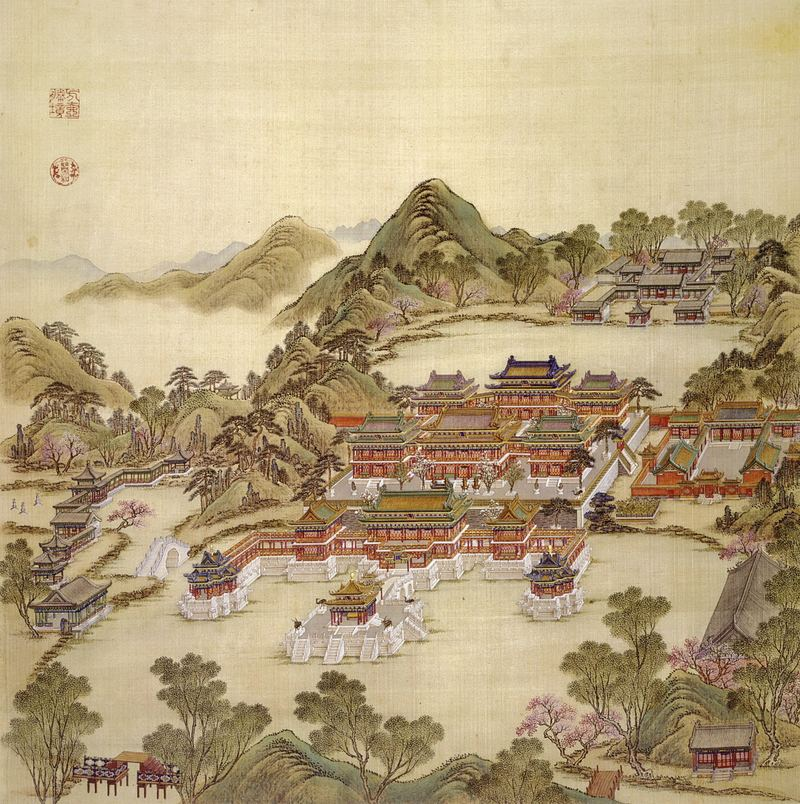 |
方壶胜境 Fanghu Shengjing, "Beautiful Scene of the Square Pot", from the Forty Scenes album (圆明园四十景图), commissioned 1744. Painting on silk. Resized. Wikimedia Commons; album held by the Bibliothèque nationale de France |
Public domain (PD-Art, PD-old-100, as tagged on the Commons file page) | 沈源 Shen Yuan and 唐岱 Tangdai, painters; 汪由敦 Wang Youdun, calligrapher |

Pictures in the 3D view (694)
Album leaves and other BnF items: Source gallica.bnf.fr / BnF, free for non-commercial use. Pictures on other holders' pages are linked from the panel and are not copied here. Ids beginning with R are reconstructions by other people, shown as modern interpretations.
| Image | Title, date, source | Licence | Credit |
|---|---|---|---|
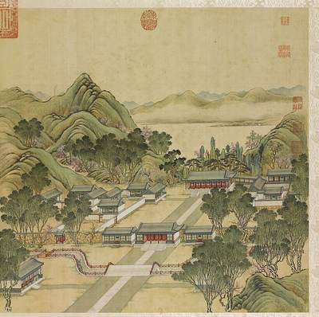 | 正大光明 Zhengda guangming [Droiture et clarté] (圓明園四十景, 第1景), 1744 (BnF record: 1744年，清朝乾隆九年). Source | Commons: PD-France PD-old-auto-expired|1799 PD-US-expired; BnF: free non-commercial reuse with credit | 唐岱, 沈源, 1744. Source gallica.bnf.fr / BnF |
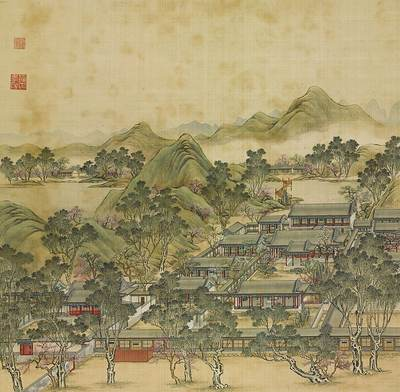 | 勤政親賢 Qinzheng qinxian [Diligence en affaires et déférence envers les vertueux] (圓明園四十景, 第2景), 1744 (BnF record: 1744年，清朝乾隆九年). Source | Commons: PD-France PD-old-auto-expired|1799 PD-US-expired; BnF: free non-commercial reuse with credit | 唐岱, 沈源, 1744. Source gallica.bnf.fr / BnF |
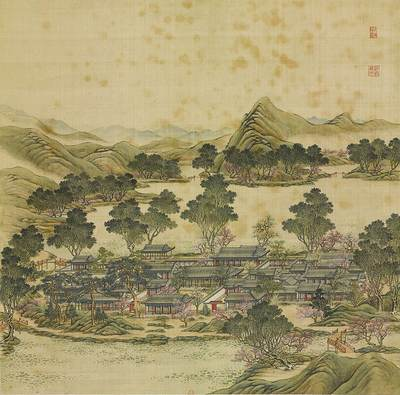 | 九州清晏 Jiuzhou qingyan [Paix sur les Neufs Continents] (圓明園四十景, 第3景), 1744 (BnF record: 1744年，清朝乾隆九年). Source | Commons: PD-France PD-old-auto-expired|1799 PD-US-expired; BnF: free non-commercial reuse with credit | 唐岱, 沈源, 1744. Source gallica.bnf.fr / BnF |
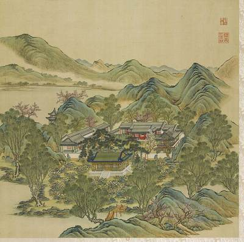 | 鏤月開雲 Louyue kaiyun [Graver la lune et ciseler les nuées] (圓明園四十景, 第4景), 1744 (BnF record: 1744年，清朝乾隆九年). Source | Commons: PD-France PD-old-auto-expired|1799; BnF: free non-commercial reuse with credit | 唐岱, 沈源, 1744. Source gallica.bnf.fr / BnF |
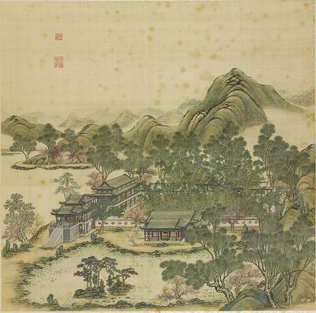 | 天然圖畫 Tianran tuhua [Scène pittoresque de la nature] (圓明園四十景, 第5景), 1744 (BnF record: 1744年，清朝乾隆九年). Source | Commons: PD-France PD-old-auto-expired|1799 PD-US-expired; BnF: free non-commercial reuse with credit | 唐岱, 沈源, 1744. Source gallica.bnf.fr / BnF |
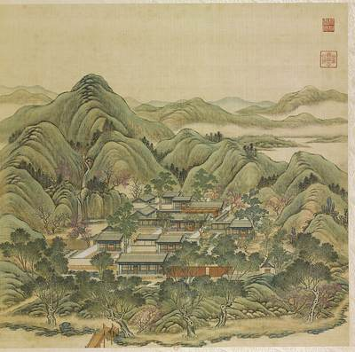 | 碧桐書院 Bitong shuyuan [Studio des aleurites d'émeraude] (圓明園四十景, 第6景), 1744 (BnF record: 1744年，清朝乾隆九年). Source | Commons: PD-France PD-old-auto-expired|1799 PD-US-expired; BnF: free non-commercial reuse with credit | 唐岱, 沈源, 1744. Source gallica.bnf.fr / BnF |
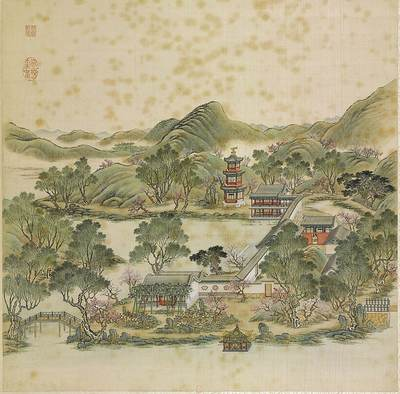 | 慈雲普護 Ciyun puhu [Nuage de miséricorde pour la bénédiction universelle] (圓明園四十景, 第7景), 1744 (BnF record: 1744年，清朝乾隆九年). Source | Commons: PD-France PD-old-auto-expired|1799 PD-US-expired; BnF: free non-commercial reuse with credit | 唐岱, 沈源, 1744. Source gallica.bnf.fr / BnF |
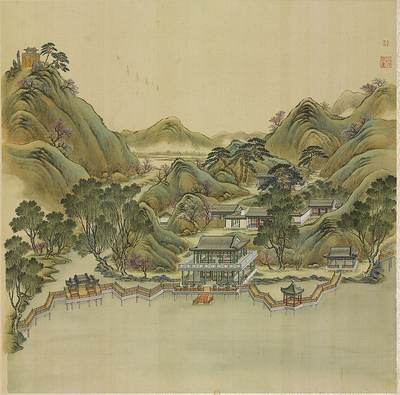 | 上下天光 Shangxia tianguang [Clarté céleste en haut et ici-bas] (圓明園四十景, 第8景), 1744 (BnF record: 1744年，清朝乾隆九年). Source | Commons: PD-France PD-US-expired; BnF: free non-commercial reuse with credit | 唐岱, 沈源, 1744. Source gallica.bnf.fr / BnF |
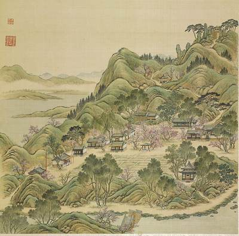 | 杏花春館 Xinghua chunguan [Pavillon de printemps des Fleurs d'abricotier] (圓明園四十景, 第9景), 1744 (BnF record: 1744年，清朝乾隆九年). Source | Commons: PD-France PD-old-auto-expired|1799 PD-US-expired; BnF: free non-commercial reuse with credit | 唐岱, 沈源, 1744. Source gallica.bnf.fr / BnF |
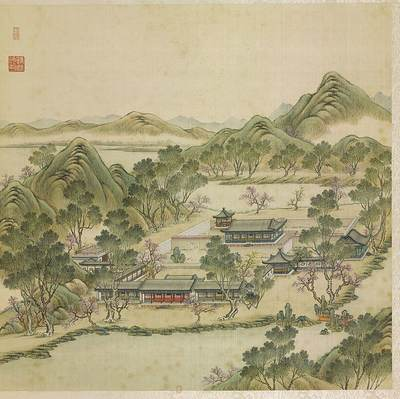 | 坦坦蕩蕩 Tantan dangdang [Sérénité et épanouissement] (圓明園四十景, 第10景), 1744 (BnF record: 1744年，清朝乾隆九年). Source | Commons: PD-France PD-old-auto-expired|1799; BnF: free non-commercial reuse with credit | 唐岱, 沈源, 1744. Source gallica.bnf.fr / BnF |
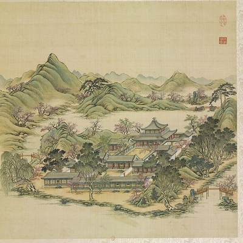 | 茹古涵今 Rugu hanjin [Assimiler le passé pour embrasser le présent] (圓明園四十景, 第11景), 1744 (BnF record: 1744年，清朝乾隆九年). Source | Commons: PD-France PD-US-expired; BnF: free non-commercial reuse with credit | 唐岱, 沈源, 1744. Source gallica.bnf.fr / BnF |
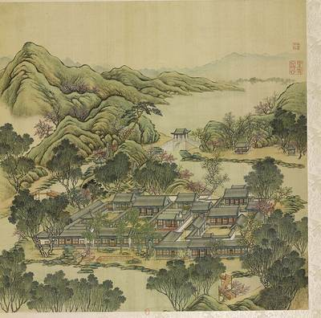 | 長春仙館 Changchun xianguan [Pavillon d'immortalité du Printemps éternel] (圓明園四十景, 第12景), 1744 (BnF record: 1744年，清朝乾隆九年). Source | Commons: PD-France PD-old-auto-expired|1799 PD-US-expired; BnF: free non-commercial reuse with credit | 唐岱, 沈源, 1744. Source gallica.bnf.fr / BnF |
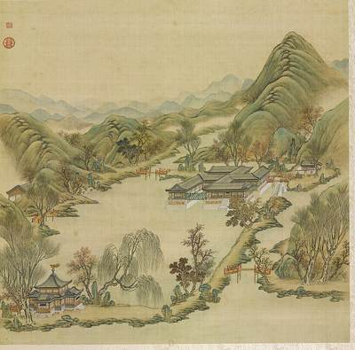 | 萬方安和 Wanfang anhe [Paix et concorde aux dix mille horizons] (圓明園四十景, 第13景), 1744 (BnF record: 1744年，清朝乾隆九年). Source | Commons: PD-France PD-old-auto-expired|1799 PD-US-expired; BnF: free non-commercial reuse with credit | 唐岱, 沈源, 1744. Source gallica.bnf.fr / BnF |
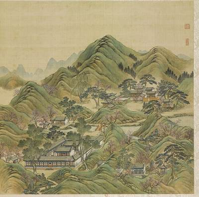 | 武陵春色 Wuling chunse [Couleurs du printemps à Wuling] (圓明園四十景, 第14景), 1744 (BnF record: 1744年，清朝乾隆九年). Source | Commons: PD-France PD-old-auto-expired|1799 PD-US-expired; BnF: free non-commercial reuse with credit | 唐岱, 沈源, 1744. Source gallica.bnf.fr / BnF |
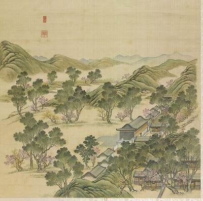 | 山髙水長 Shangao shuichang [Élevées les montagnes, inépuisable l'eau] (圓明園四十景, 第15景), 1744 (BnF record: 1744年，清朝乾隆九年). Source | Commons: PD-France PD-old-auto-expired|1799 PD-US-expired; BnF: free non-commercial reuse with credit | 唐岱, 沈源, 1744. Source gallica.bnf.fr / BnF |
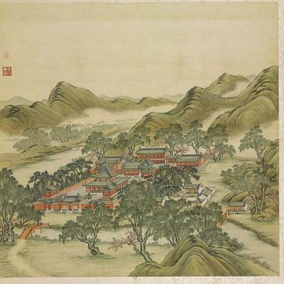 | 月地雲居 Yuedi yunju [Hameau dans les nuées sous la clarté de la lune] (圓明園四十景, 第16景), 1744 (BnF record: 1744年，清朝乾隆九年). Source | Commons: PD-France PD-old-auto-expired|1799 PD-US-expired; BnF: free non-commercial reuse with credit | 唐岱, 沈源, 1744. Source gallica.bnf.fr / BnF |
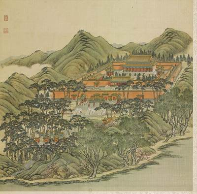 | 鴻慈永祜 Hongci yonghu [Incommensurable Miséricorde pour une bénédiction éternelle] (圓明園四十景, 第17景), 1744 (BnF record: 1744年，清朝乾隆九年). Source | Commons: PD-France PD-old-auto-expired|1799 PD-US-expired; BnF: free non-commercial reuse with credit | 唐岱, 沈源, 1744. Source gallica.bnf.fr / BnF |
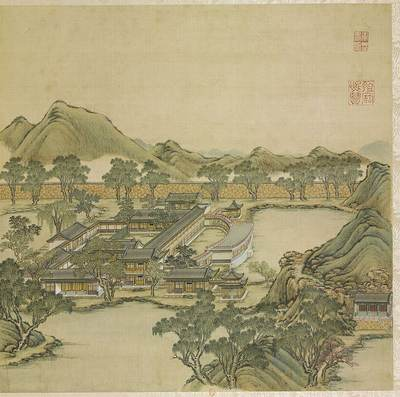 | 彚芳書院 Huifang shuyuan [Académie où se rassemblent les vertueux] (圓明園四十景, 第18景), 1744 (BnF record: 1744年，清朝乾隆九年). Source | Commons: PD-France PD-US-expired; BnF: free non-commercial reuse with credit | 唐岱, 沈源, 1744. Source gallica.bnf.fr / BnF |
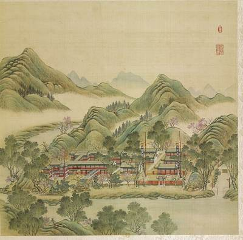 | 日天琳宇 Ritian linyu [Temple de Jade sous la clarté céleste] (圓明園四十景, 第19景), 1744 (BnF record: 1744年，清朝乾隆九年). Source | Commons: PD-France PD-old-auto-expired|1799 PD-US-expired; BnF: free non-commercial reuse with credit | 唐岱, 沈源, 1744. Source gallica.bnf.fr / BnF |
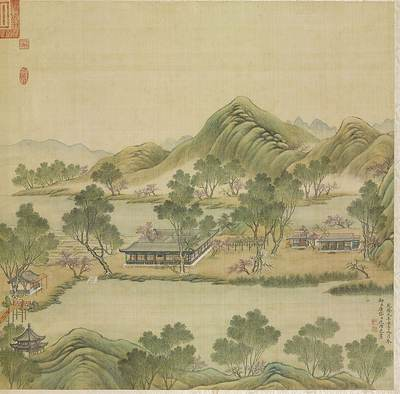 | 澹泊寧静 Danbo ningjing [Détachement et sérénité] (圓明園四十景, 第20景), 1744 (BnF record: 1744年，清朝乾隆九年). Source | Commons: PD-France PD-old-auto-expired|1799 PD-US-expired; BnF: free non-commercial reuse with credit | 唐岱, 沈源, 1744. Source gallica.bnf.fr / BnF |
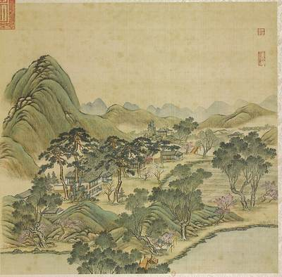 | 映水蘭香 Yingshui lanxiang [Reflet de l'onde, fragrance des orchidées] (圓明園四十景, 第21景), 1744 (BnF record: 1744年，清朝乾隆九年). Source | Commons: PD-France PD-old-auto-expired|1799 PD-US-expired; BnF: free non-commercial reuse with credit | 唐岱, 沈源, 1744. Source gallica.bnf.fr / BnF |
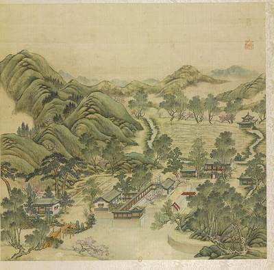 | 水木明瑟 Shuimu mingse [Reflet limpide de l'onde, son grave du bois] (圓明園四十景, 第22景), 1744 (BnF record: 1744年，清朝乾隆九年). Source | Commons: PD-France PD-old-auto-expired|1799 PD-US-expired; BnF: free non-commercial reuse with credit | 唐岱, 沈源, 1744. Source gallica.bnf.fr / BnF |
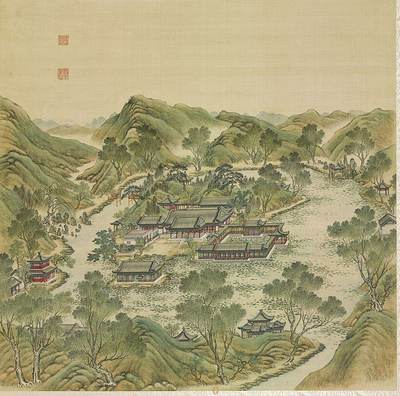 | 濂溪樂處 Lianxi lechu [Où Lianxi éprouve de la joie] (圓明園四十景, 第23景), 1744 (BnF record: 1744年，清朝乾隆九年). Source | Commons: PD-France PD-US-expired; BnF: free non-commercial reuse with credit | 唐岱, 沈源, 1744. Source gallica.bnf.fr / BnF |
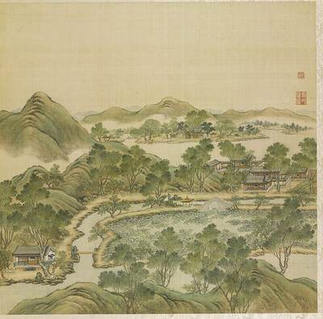 | 多稼如雲 Duojia ruyun [Une abondante récolte à l'image des nuées] (圓明園四十景, 第24景), 1744 (BnF record: 1744年，清朝乾隆九年). Source | Commons: PD-France PD-old-auto-expired|1799; BnF: free non-commercial reuse with credit | 唐岱, 沈源, 1744. Source gallica.bnf.fr / BnF |
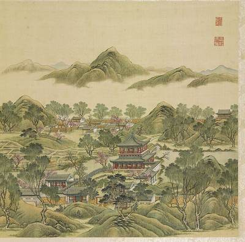 | 魚躍鳶飛 Yuyue yuanfei [Frétillent les poissons, volent les milans] (圓明園四十景, 第25景), 1744 (BnF record: 1744年，清朝乾隆九年). Source | Commons: PD-France PD-old-auto-expired|1799 PD-US-expired; BnF: free non-commercial reuse with credit | 唐岱, 沈源, 1744. Source gallica.bnf.fr / BnF |
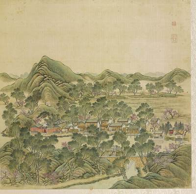 | 北遠山村 Beiyuan shancun [Village montagnard au loin, au septentrion] (圓明園四十景, 第26景), 1744 (BnF record: 1744年，清朝乾隆九年). Source | Commons: PD-France PD-old-auto-expired|1799 PD-US-expired; BnF: free non-commercial reuse with credit | 唐岱, 沈源, 1744. Source gallica.bnf.fr / BnF |
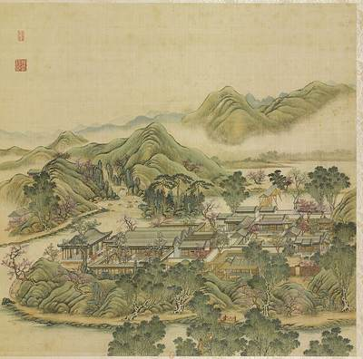 | 西峰秀色 Xifeng xiuse [Couleurs d'élégance dans les montagnes de l'Ouest] (圓明園四十景, 第27景), 1744 (BnF record: 1744年，清朝乾隆九年). Source | Commons: PD-France PD-old-auto-expired|1799 PD-US-expired; BnF: free non-commercial reuse with credit | 唐岱, 沈源, 1744. Source gallica.bnf.fr / BnF |
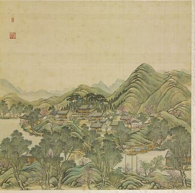 | 四宜書屋 Siyi shuwu [Étude des Quatre Aptitudes] (圓明園四十景, 第28景), 1744 (BnF record: 1744年，清朝乾隆九年). Source | Commons: PD-France PD-old-auto-expired|1799 PD-US-expired; BnF: free non-commercial reuse with credit | 唐岱, 沈源, 1744. Source gallica.bnf.fr / BnF |
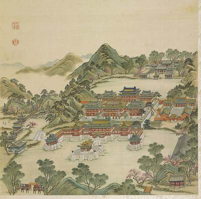 | 方壺勝境 Fanghu shengjing [Site merveilleux du Vase carré] (圓明園四十景, 第29景), 1744 (BnF record: 1744年，清朝乾隆九年). Source | Commons: PD-France PD-old-auto-expired|1799 PD-US-expired; BnF: free non-commercial reuse with credit | 唐岱, 沈源, 1744. Source gallica.bnf.fr / BnF |
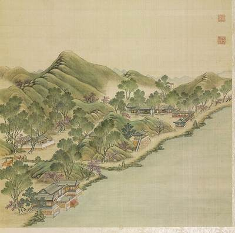 | 澡身浴徳 Zaoshen yude [Se purifier le corps pour s'imprégner des vertus] (圓明園四十景, 第30景), 1744 (BnF record: 1744年，清朝乾隆九年). Source | Commons: PD-France PD-US-expired; BnF: free non-commercial reuse with credit | 唐岱, 沈源, 1744. Source gallica.bnf.fr / BnF |
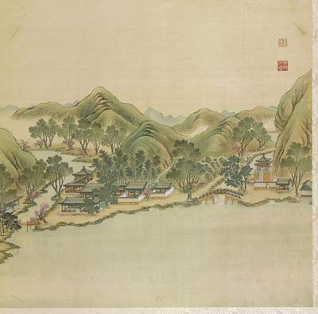 | 平湖秋月 Pinghu qiuyue [Lune d'automne sur le lac Serein] (圓明園四十景, 第31景), 1744 (BnF record: 1744年，清朝乾隆九年). Source | Commons: PD-France PD-old-auto-expired|1799 PD-old-assumed PD-US-expired; BnF: free non-commercial reuse with credit | 唐岱, 沈源, 1744. Source gallica.bnf.fr / BnF |
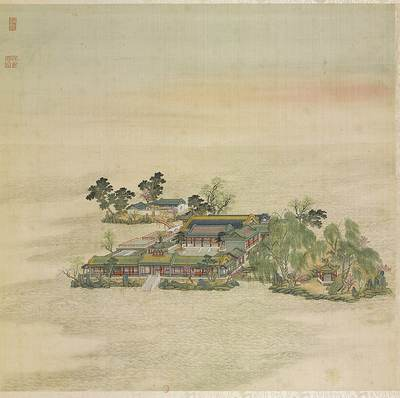 | 蓬島瑶臺 Pengdao yaotai [Terrasse de jade sur l'île d'Immortalité] (圓明園四十景, 第32景), 1744 (BnF record: 1744年，清朝乾隆九年). Source | Commons: PD-France PD-old-auto-expired|1799 PD-US-expired; BnF: free non-commercial reuse with credit | 唐岱, 沈源, 1744. Source gallica.bnf.fr / BnF |
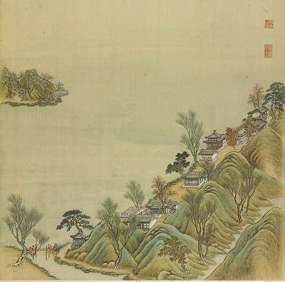 | 接秀山房 Jiexiu shanfang [Hameau de montagne pour accueillir l'élégance] (圓明園四十景, 第33景), 1744 (BnF record: 1744年，清朝乾隆九年). Source | Commons: PD-France PD-old-auto-expired|1799 PD-US-expired; BnF: free non-commercial reuse with credit | 唐岱, 沈源, 1744. Source gallica.bnf.fr / BnF |
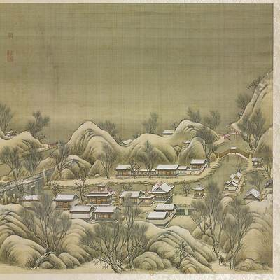 | 別有洞天 Bieyou dongtian [Un autre univers] (圓明園四十景, 第34景), 1744 (BnF record: 1744年，清朝乾隆九年). Source | Commons: PD-France PD-old-auto-expired|1799; BnF: free non-commercial reuse with credit | 唐岱, 沈源, 1744. Source gallica.bnf.fr / BnF |
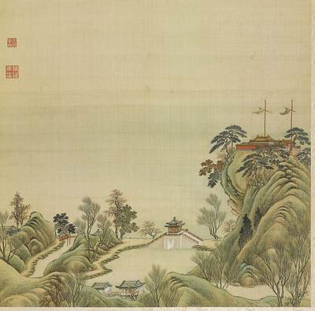 | 夾鏡鳴琴 Jiajing mingqin [Jouer de la cithare en serrant le miroir] (圓明園四十景, 第35景), 1744 (BnF record: 1744年，清朝乾隆九年). Source | Commons: PD-France PD-old-auto-expired|1799 PD-US-expired; BnF: free non-commercial reuse with credit | 唐岱, 沈源, 1744. Source gallica.bnf.fr / BnF |
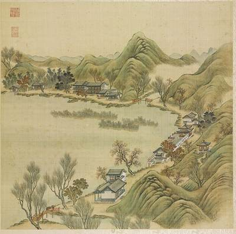 | 涵虛朗鑑 Hanxu langjian [S'imprégner du vide, réfléchir la clarté] (圓明園四十景, 第36景), 1744 (BnF record: 1744年，清朝乾隆九年). Source | Commons: PD-France PD-old-auto-expired|1799 PD-US-expired; BnF: free non-commercial reuse with credit | 唐岱, 沈源, 1744. Source gallica.bnf.fr / BnF |
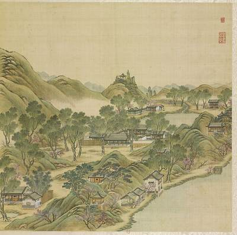 | 廓然大公 Kuoran dagong [Clarté et intégrité] (圓明園四十景, 第37景), 1744 (BnF record: 1744年，清朝乾隆九年). Source | Commons: PD-France PD-old-auto-expired|1799 PD-US-expired; BnF: free non-commercial reuse with credit | 唐岱, 沈源, 1744. Source gallica.bnf.fr / BnF |
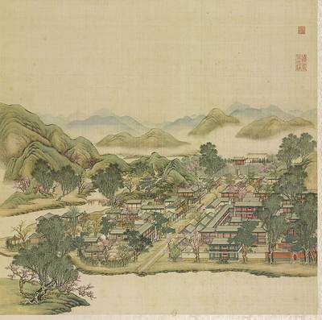 | 坐石臨流 Zuoshi linliu [D'une pierre effleurant l'eau, regarder s'écouler l'onde] (圓明園四十景, 第38景), 1744 (BnF record: 1744年，清朝乾隆九年). Source | Commons: PD-France PD-old-auto-expired|1799 PD-US-expired; BnF: free non-commercial reuse with credit | 唐岱, 沈源, 1744. Source gallica.bnf.fr / BnF |
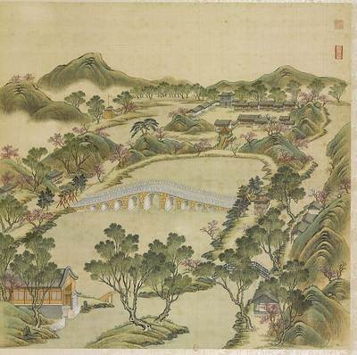 | 麴院風荷 Quyuan fenghe [Senteurs de lotus à travers la cour des Ferments] (圓明園四十景, 第39景), 1744 (BnF record: 1744年，清朝乾隆九年). Source | Commons: PD-France PD-US-expired; BnF: free non-commercial reuse with credit | 唐岱, 沈源, 1744. Source gallica.bnf.fr / BnF |
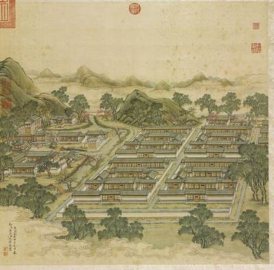 | 洞天深處 Dongtian shenchu [Au profond de la grotte-ciel] (圓明園四十景, 第40景), 1744 (BnF record: 1744年，清朝乾隆九年). Source | Commons: PD-France PD-old-auto-expired|1799 PD-US-expired; BnF: free non-commercial reuse with credit | 唐岱, 沈源, 1744. Source gallica.bnf.fr / BnF |
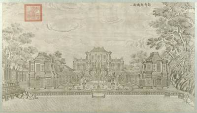 | 谐奇趣南面 (圆明园铜版画册 / 西洋楼铜版画, plate 一 of 二十; title and number printed on the plate), 1786 (Commons); Palace Museum: 清. Source | Commons: PD-Art|PD-old-100 | Yi Lantai, 1786, 故宫博物院 Palace Museum, Beijing, via Wikimedia Commons |
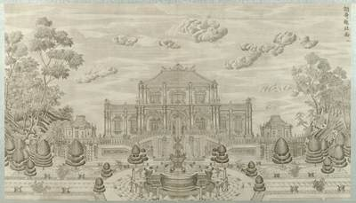 | 谐奇趣北面 (圆明园铜版画册 / 西洋楼铜版画, plate 二 of 二十; title and number printed on the plate), 1786 (Commons); Palace Museum: 清. Source | Commons: PD-Art|PD-old-100 | Yi Lantai, 1786, 故宫博物院 Palace Museum, Beijing, via Wikimedia Commons |
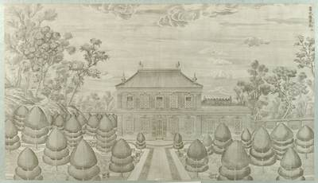 | 蓄水楼东面 (圆明园铜版画册 / 西洋楼铜版画, plate 三 of 二十; title and number printed on the plate), 1786 (Commons); Palace Museum: 清. Source | Commons: PD-Art|PD-old-100 | Yi Lantai, 1786, 故宫博物院 Palace Museum, Beijing, via Wikimedia Commons |
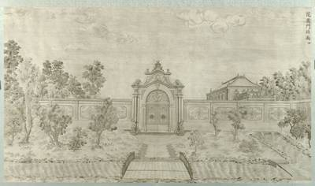 | 花园门北面 (圆明园铜版画册 / 西洋楼铜版画, plate 四 of 二十; title and number printed on the plate), 1786 (Commons); Palace Museum: 清. Source | Commons: PD-Art|PD-old-100 | Yi Lantai, 1786, 故宫博物院 Palace Museum, Beijing, via Wikimedia Commons |
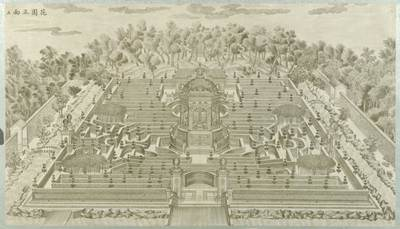 | 花园正面 (圆明园铜版画册 / 西洋楼铜版画, plate 五 of 二十; title and number printed on the plate), 1786 (Commons); Palace Museum: 清. Source | Commons: PD-Art|PD-old-100 | Yi Lantai, 1786, 故宫博物院 Palace Museum, Beijing, via Wikimedia Commons |
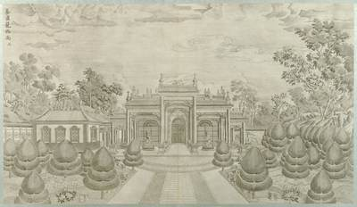 | 养雀笼西面 (圆明园铜版画册 / 西洋楼铜版画, plate 六 of 二十; title and number printed on the plate), 1786 (Commons); Palace Museum: 清. Source | Commons: PD-Art|PD-old-100 | Yi Lantai, 1786, 故宫博物院 Palace Museum, Beijing, via Wikimedia Commons |
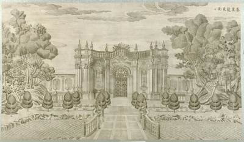 | 养雀笼东面 (圆明园铜版画册 / 西洋楼铜版画, plate 七 of 二十; title and number printed on the plate), 1786 (Commons); Palace Museum: 清. Source | Commons: PD-Art|PD-old-100 | Yi Lantai, 1786, 故宫博物院 Palace Museum, Beijing, via Wikimedia Commons |
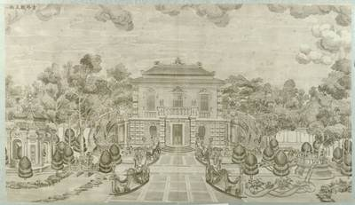 | 方外观正面 (圆明园铜版画册 / 西洋楼铜版画, plate 八 of 二十; title and number printed on the plate), 1786 (Commons); Palace Museum: 清. Source | Commons: PD-Art|PD-old-100 | Yi Lantai, 1786, 故宫博物院 Palace Museum, Beijing, via Wikimedia Commons |
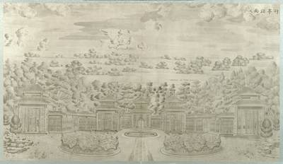 | 竹亭北面 (圆明园铜版画册 / 西洋楼铜版画, plate 九 of 二十; title and number printed on the plate), 1786 (Commons); Palace Museum: 清. Source | Commons: PD-Art|PD-old-100 | Yi Lantai, 1786, 故宫博物院 Palace Museum, Beijing, via Wikimedia Commons |
| 海晏堂西面 (圆明园铜版画册 / 西洋楼铜版画, plate 十 of 二十; title and number printed on the plate), 1786 (Commons); Palace Museum: 清. Source | Commons: PD-Art|PD-old-100 | Yi Lantai, 1786, 故宫博物院 Palace Museum, Beijing, via Wikimedia Commons | |
| 海晏堂北面 (圆明园铜版画册 / 西洋楼铜版画, plate 十一 of 二十; title and number printed on the plate), 1786 (Commons); Palace Museum: 清. Source | Commons: PD-Art|PD-old-100 | Yi Lantai, 1786, 故宫博物院 Palace Museum, Beijing, via Wikimedia Commons | |
| 海晏堂东面 (圆明园铜版画册 / 西洋楼铜版画, plate 十二 of 二十; title and number printed on the plate), 1786 (Commons); Palace Museum: 清. Source | Commons: PD-Art|PD-old-100 | Yi Lantai, 1786, 故宫博物院 Palace Museum, Beijing, via Wikimedia Commons | |
| 海晏堂南面 (圆明园铜版画册 / 西洋楼铜版画, plate 十三 of 二十; title and number printed on the plate), 1786 (Commons); Palace Museum: 清. Source | Commons: PD-Art|PD-old-100 | Yi Lantai, 1786, 故宫博物院 Palace Museum, Beijing, via Wikimedia Commons | |
| 远瀛观正面 (圆明园铜版画册 / 西洋楼铜版画, plate 十四 of 二十; title and number printed on the plate), 1786 (Commons); Palace Museum: 清. Source | Commons: PD-Art|PD-old-100 | Yi Lantai, 1786, 故宫博物院 Palace Museum, Beijing, via Wikimedia Commons | |
| 大水法正面 (圆明园铜版画册 / 西洋楼铜版画, plate 十五 of 二十; title and number printed on the plate), 1786 (Commons); Palace Museum: 清. Source | Commons: PD-Art|PD-old-100 | Yi Lantai, 1786, 故宫博物院 Palace Museum, Beijing, via Wikimedia Commons | |
| 观水法正面 (圆明园铜版画册 / 西洋楼铜版画, plate 十六 of 二十; title and number printed on the plate), 1786 (Commons); Palace Museum: 清. Source | Commons: PD-Art|PD-old-100 | Yi Lantai, 1786, 故宫博物院 Palace Museum, Beijing, via Wikimedia Commons | |
| 线法山门正面 (圆明园铜版画册 / 西洋楼铜版画, plate 十七 of 二十; title and number printed on the plate), 1786 (Commons); Palace Museum: 清. Source | Commons: PD-Art|PD-old-100 | Yi Lantai, 1786, 故宫博物院 Palace Museum, Beijing, via Wikimedia Commons | |
| 线法山正面 (圆明园铜版画册 / 西洋楼铜版画, plate 十八 of 二十; title and number printed on the plate), 1786 (Commons); Palace Museum: 清. Source | Commons: PD-Art|PD-old-100 | Yi Lantai, 1786, 故宫博物院 Palace Museum, Beijing, via Wikimedia Commons | |
| 线法山东门 (圆明园铜版画册 / 西洋楼铜版画, plate 十九 of 二十; title and number printed on the plate), 1786 (Commons); Palace Museum: 清. Source | Commons: PD-Art|PD-old-100 | Yi Lantai, 1786, 故宫博物院 Palace Museum, Beijing, via Wikimedia Commons | |
| 湖东线法画 (圆明园铜版画册 / 西洋楼铜版画, plate 二十 of 二十; title and number printed on the plate), 1786 (Commons); Palace Museum: 清. Source | Commons: PD-Art|PD-old-100 | Yi Lantai, 1786, 故宫博物院 Palace Museum, Beijing, via Wikimedia Commons | |
| 中国皇帝的宫殿与庙宇. 第1幅图, 天然圖畫 - (清)孙祜、沈源Tianran tuhua - (Qing)Sun Hu, Shen Yuan, 1745 (Commons, from the BnF record). Source | Commons: PD-France PD-old-auto-expired|1799 PD-old-assumed PD-US-expired; BnF/Gallica: free non-commercial reuse with credit (project rule) | Sun Hu and Shen Yuan, 1745. Source gallica.bnf.fr / BnF | |
| 中国皇帝的宫殿与庙宇. 第2幅图, 長春仙館 - (清)孙祜、沈源Changchun xianguan - (Qing)Sun Hu, Shen Yuan, 1745 (Commons, from the BnF record). Source | Commons: PD-France PD-old-auto-expired|1799 PD-US-expired; BnF/Gallica: free non-commercial reuse with credit (project rule) | Sun Hu and Shen Yuan, 1745. Source gallica.bnf.fr / BnF | |
| 中国皇帝的宫殿与庙宇. 第3幅图, 别有洞天 - (清)孙祜、沈源Bieyou dongtian - (Qing)Sun Hu, Shen Yuan, 1745 (Commons, from the BnF record). Source | Commons: PD-France PD-US-expired; BnF/Gallica: free non-commercial reuse with credit (project rule) | Sun Hu and Shen Yuan, 1745. Source gallica.bnf.fr / BnF | |
| 中国皇帝的宫殿与庙宇. 第4幅图, 彚芳書院 - (清)孙祜、沈源Huifang shuyuan - (Qing)Sun Hu, Shen Yuan, 1745 (Commons, from the BnF record). Source | Commons: PD-France PD-old-auto-expired|1799 PD-US-expired; BnF/Gallica: free non-commercial reuse with credit (project rule) | Sun Hu and Shen Yuan, 1745. Source gallica.bnf.fr / BnF | |
| 中国皇帝的宫殿与庙宇. 第5幅图, 楼月開云(鏤月開雲) - (清)孙祜、沈源Louyue kaiyun - (Qing)Sun Hu, Shen Yuan, 1745 (Commons, from the BnF record). Source | Commons: PD-France PD-old-auto-expired|1799 PD-US-expired; BnF/Gallica: free non-commercial reuse with credit (project rule) | Sun Hu and Shen Yuan, 1745. Source gallica.bnf.fr / BnF | |
| 中国皇帝的宫殿与庙宇. 第6幅图, 平湖秋月 - (清)孙祜、沈源Pinghu qiuyue - (Qing)Sun Hu, Shen Yuan, 1745 (Commons, from the BnF record). Source | Commons: PD-France PD-old-auto-expired|1799 PD-US-expired; BnF/Gallica: free non-commercial reuse with credit (project rule) | Sun Hu and Shen Yuan, 1745. Source gallica.bnf.fr / BnF | |
| 中国皇帝的宫殿与庙宇. 第7幅图, 慈雲普護 - (清)孙祜、沈源Ciyun puhu - (Qing)Sun Hu, Shen Yuan, 1745 (Commons, from the BnF record). Source | Commons: PD-France PD-old-auto-expired|1799 PD-US-expired; BnF/Gallica: free non-commercial reuse with credit (project rule) | Sun Hu and Shen Yuan, 1745. Source gallica.bnf.fr / BnF | |
 | 中国皇帝的宫殿与庙宇. 第8幅图, 方壺勝境 - (清)孙祜、沈源Fanghu shengjing - (Qing)Sun Hu, Shen Yuan, 1745 (Commons, from the BnF record). Source | Commons: PD-France PD-old-auto-expired|1799 PD-US-expired; BnF/Gallica: free non-commercial reuse with credit (project rule) | Sun Hu and Shen Yuan, 1745. Source gallica.bnf.fr / BnF |
| 中国皇帝的宫殿与庙宇. 第9幅图, 洞天深處 - (清)孙祜、沈源(鴻臚寺序班)Dongtian shenchu - (Qing)Sun Hu, Shen Yuan, 1745 (Commons, from the BnF record). Source | Commons: PD-France PD-old-auto-expired|1799 PD-US-expired; BnF/Gallica: free non-commercial reuse with credit (project rule) | Sun Hu and Shen Yuan, 1745. Source gallica.bnf.fr / BnF | |
| 中国皇帝的宫殿与庙宇. 第10幅图, 魚躍鳶飛 - (清)孙祜、沈源Yuyue yuanfei - (Qing)Sun Hu, Shen Yuan, 1745 (Commons, from the BnF record). Source | Commons: PD-France PD-old-auto-expired|1799 PD-US-expired; BnF/Gallica: free non-commercial reuse with credit (project rule) | Sun Hu and Shen Yuan, 1745. Source gallica.bnf.fr / BnF | |
| 中国皇帝的宫殿与庙宇. 第11幅图, 勤政親賢 - (清)孙祜、沈源Qinzheng qinxian - (Qing)Sun Hu, Shen Yuan, 1745 (Commons, from the BnF record). Source | Commons: PD-France PD-old-auto-expired|1799 PD-US-expired; BnF/Gallica: free non-commercial reuse with credit (project rule) | Sun Hu and Shen Yuan, 1745. Source gallica.bnf.fr / BnF | |
| 中国皇帝的宫殿与庙宇. 第12幅图, 日天琳宇 - (清)孙祜、沈源Ritian linyu - (Qing)Sun Hu, Shen Yuan, 1745 (Commons, from the BnF record). Source | Commons: PD-France PD-old-auto-expired|1799; BnF/Gallica: free non-commercial reuse with credit (project rule) | Sun Hu and Shen Yuan, 1745. Source gallica.bnf.fr / BnF | |
| 中国皇帝的宫殿与庙宇. 第13幅图, 武陵春色 - (清)孙祜、沈源Wuling chunse - (Qing)Sun Hu, Shen Yuan, 1745 (Commons, from the BnF record). Source | Commons: PD-France PD-old-auto-expired|1799 PD-US-expired; BnF/Gallica: free non-commercial reuse with credit (project rule) | Sun Hu and Shen Yuan, 1745. Source gallica.bnf.fr / BnF | |
| 中国皇帝的宫殿与庙宇. 第14幅图, 坦坦蕩蕩 - (清)孙祜、沈源Tantan dangdang - (Qing)Sun Hu, Shen Yuan, 1745 (Commons, from the BnF record). Source | Commons: PD-France PD-old-auto-expired|1799 PD-US-expired; BnF/Gallica: free non-commercial reuse with credit (project rule) | Sun Hu and Shen Yuan, 1745. Source gallica.bnf.fr / BnF | |
| 中国皇帝的宫殿与庙宇. 第15幅图, 涵虛郎鑑(涵虛朗鑑) - (清)孙祜、沈源Hanxu langjian - (Qing)Sun Hu, Shen Yuan, 1745 (Commons, from the BnF record). Source | Commons: PD-France PD-US-expired; BnF/Gallica: free non-commercial reuse with credit (project rule) | Sun Hu and Shen Yuan, 1745. Source gallica.bnf.fr / BnF | |
| 中国皇帝的宫殿与庙宇. 第16幅图, 澡身浴徳 - (清)孙祜、沈源Zaoshen yude - (Qing)Sun Hu, Shen Yuan, 1745 (Commons, from the BnF record). Source | Commons: PD-France PD-old-auto-expired|1799 PD-US-expired; BnF/Gallica: free non-commercial reuse with credit (project rule) | Sun Hu and Shen Yuan, 1745. Source gallica.bnf.fr / BnF | |
| 中国皇帝的宫殿与庙宇. 第17幅图, 茹古涵今 - (清)孙祜、沈源Rugu hanjin - (Qing)Sun Hu, Shen Yuan, 1745 (Commons, from the BnF record). Source | Commons: PD-France PD-old-auto-expired|1799 PD-US-expired; BnF/Gallica: free non-commercial reuse with credit (project rule) | Sun Hu and Shen Yuan, 1745. Source gallica.bnf.fr / BnF | |
| 中国皇帝的宫殿与庙宇. 第18幅图, 四宜書屋 - (清)孙祜、沈源Siyi shuwu - (Qing)Sun Hu, Shen Yuan, 1745 (Commons, from the BnF record). Source | Commons: PD-France PD-US-expired; BnF/Gallica: free non-commercial reuse with credit (project rule) | Sun Hu and Shen Yuan, 1745. Source gallica.bnf.fr / BnF | |
| 中国皇帝的宫殿与庙宇. 第19幅图, 坐石臨流 - (清)孙祜、沈源Zuoshi linliu - (Qing)Sun Hu, Shen Yuan, 1745 (Commons, from the BnF record). Source | Commons: PD-France PD-old-auto-expired|1799 PD-US-expired; BnF/Gallica: free non-commercial reuse with credit (project rule) | Sun Hu and Shen Yuan, 1745. Source gallica.bnf.fr / BnF | |
| 中国皇帝的宫殿与庙宇. 第20幅图, 多稼如雲 - (清)孙祜、沈源Duojia ruyun - (Qing)Sun Hu, Shen Yuan, 1745 (Commons, from the BnF record). Source | Commons: PD-France PD-old-auto-expired|1799; BnF/Gallica: free non-commercial reuse with credit (project rule) | Sun Hu and Shen Yuan, 1745. Source gallica.bnf.fr / BnF | |
| 中国皇帝的宫殿与庙宇. 第21幅图, 映水蘭香 - (清)孙祜、沈源Yingshui lanxiang - (Qing)Sun Hu, Shen Yuan, 1745 (Commons, from the BnF record). Source | Commons: PD-France PD-old-auto-expired|1799 PD-US-expired; BnF/Gallica: free non-commercial reuse with credit (project rule) | Sun Hu and Shen Yuan, 1745. Source gallica.bnf.fr / BnF | |
| 中国皇帝的宫殿与庙宇. 第22幅图, 杏花春館 - (清)孙祜、沈源Xinghua chunguan - (Qing)Sun Hu, Shen Yuan, 1745 (Commons, from the BnF record). Source | Commons: PD-France PD-old-auto-expired|1799 PD-US-expired; BnF/Gallica: free non-commercial reuse with credit (project rule) | Sun Hu and Shen Yuan, 1745. Source gallica.bnf.fr / BnF | |
| 中国皇帝的宫殿与庙宇. 第23幅图, 廓然大公 - (清)孙祜、沈源Kuoran dagong - (Qing)Sun Hu, Shen Yuan, 1745 (Commons, from the BnF record). Source | Commons: PD-France PD-old-auto-expired|1799 PD-US-expired; BnF/Gallica: free non-commercial reuse with credit (project rule) | Sun Hu and Shen Yuan, 1745. Source gallica.bnf.fr / BnF | |
| 中国皇帝的宫殿与庙宇. 第24幅图, 碧桐書院 - (清)孙祜、沈源Bitong shuyuan - (Qing)Sun Hu, Shen Yuan, 1745 (Commons, from the BnF record). Source | Commons: PD-France PD-old-auto-expired|1799 PD-US-expired; BnF/Gallica: free non-commercial reuse with credit (project rule) | Sun Hu and Shen Yuan, 1745. Source gallica.bnf.fr / BnF | |
 | 中国皇帝的宫殿与庙宇. 第25幅图, 蓬島瑶臺 - (清)孙祜、沈源Pengdao yaotai - (Qing)Sun Hu, Shen Yuan, 1745 (Commons, from the BnF record). Source | Commons: PD-France PD-old-auto-expired|1799; BnF/Gallica: free non-commercial reuse with credit (project rule) | Sun Hu and Shen Yuan, 1745. Source gallica.bnf.fr / BnF |
| 中国皇帝的宫殿与庙宇. 第26幅图, 夾鏡鳴琴 - (清)孙祜、沈源Jiajing mingqin - (Qing)Sun Hu, Shen Yuan, 1745 (Commons, from the BnF record). Source | Commons: PD-France PD-US-expired; BnF/Gallica: free non-commercial reuse with credit (project rule) | Sun Hu and Shen Yuan, 1745. Source gallica.bnf.fr / BnF | |
| 中国皇帝的宫殿与庙宇. 第27幅图, 山高水長 - (清)孙祜、沈源Shangao shuichang - (Qing)Sun Hu, Shen Yuan, 1745 (Commons, from the BnF record). Source | Commons: PD-France PD-old-auto-expired|1799 PD-US-expired; BnF/Gallica: free non-commercial reuse with credit (project rule) | Sun Hu and Shen Yuan, 1745. Source gallica.bnf.fr / BnF | |
| 中国皇帝的宫殿与庙宇. 第28幅图, 麴院風荷 - (清)孙祜、沈源Quyuan fenghe - (Qing)Sun Hu, Shen Yuan, 1745 (Commons, from the BnF record). Source | Commons: PD-France PD-old-auto-expired|1799; BnF/Gallica: free non-commercial reuse with credit (project rule) | Sun Hu and Shen Yuan, 1745. Source gallica.bnf.fr / BnF | |
| 中国皇帝的宫殿与庙宇. 第29幅图, 九州清晏 - (清)孙祜、沈源Jiuzhou qingyan - (Qing)Sun Hu, Shen Yuan, 1745 (Commons, from the BnF record). Source | Commons: PD-France PD-old-auto-expired|1799; BnF/Gallica: free non-commercial reuse with credit (project rule) | Sun Hu and Shen Yuan, 1745. Source gallica.bnf.fr / BnF | |
| 中国皇帝的宫殿与庙宇. 第31幅图, 濂溪樂處 - (清)孙祜、沈源Lianxi lechu - (Qing)Sun Hu, Shen Yuan, 1745 (Commons, from the BnF record). Source | Commons: PD-France PD-US-expired; BnF/Gallica: free non-commercial reuse with credit (project rule) | Sun Hu and Shen Yuan, 1745. Source gallica.bnf.fr / BnF | |
| 中国皇帝的宫殿与庙宇. 第32幅图, 北遠山村 - (清)孙祜、沈源Beiyuan shancun - (Qing)Sun Hu, Shen Yuan, 1745 (Commons, from the BnF record). Source | Commons: PD-France PD-US-expired; BnF/Gallica: free non-commercial reuse with credit (project rule) | Sun Hu and Shen Yuan, 1745. Source gallica.bnf.fr / BnF | |
| 中国皇帝的宫殿与庙宇. 第33幅图, 西峯秀色 - (清)孙祜、沈源Xifeng xiuse - (Qing)Sun Hu, Shen Yuan, 1745 (Commons, from the BnF record). Source | Commons: PD-France PD-old-auto-expired|1799 PD-US-expired; BnF/Gallica: free non-commercial reuse with credit (project rule) | Sun Hu and Shen Yuan, 1745. Source gallica.bnf.fr / BnF | |
| 中国皇帝的宫殿与庙宇. 第34幅图, 接秀山房 - (清)孙祜、沈源Jiexiu shanfang - (Qing)Sun Hu, Shen Yuan, 1745 (Commons, from the BnF record). Source | Commons: PD-France PD-old-auto-expired|1799 PD-US-expired; BnF/Gallica: free non-commercial reuse with credit (project rule) | Sun Hu and Shen Yuan, 1745. Source gallica.bnf.fr / BnF | |
| 中国皇帝的宫殿与庙宇. 第35幅图, 水木明瑟 - (清)孙祜、沈源Shuimu mingse - (Qing)Sun Hu, Shen Yuan, 1745 (Commons, from the BnF record). Source | Commons: PD-France PD-old-auto-expired|1799 PD-US-expired; BnF/Gallica: free non-commercial reuse with credit (project rule) | Sun Hu and Shen Yuan, 1745. Source gallica.bnf.fr / BnF | |
| 中国皇帝的宫殿与庙宇. 第36幅图, 月地云居 - (清)孙祜、沈源Yuedi yunju - (Qing)Sun Hu, Shen Yuan, 1745 (Commons, from the BnF record). Source | Commons: PD-France PD-old-auto-expired|1799 PD-US-expired; BnF/Gallica: free non-commercial reuse with credit (project rule) | Sun Hu and Shen Yuan, 1745. Source gallica.bnf.fr / BnF | |
| 中国皇帝的宫殿与庙宇. 第37幅图, 萬方安和 - (清)孙祜、沈源Wanfang anhe - (Qing)Sun Hu, Shen Yuan, 1745 (Commons, from the BnF record). Source | Commons: PD-France PD-old-auto-expired|1799 PD-US-expired; BnF/Gallica: free non-commercial reuse with credit (project rule) | Sun Hu and Shen Yuan, 1745. Source gallica.bnf.fr / BnF | |
 | 中国皇帝的宫殿与庙宇. 第38幅图, 澹泊寧静 - (清)孙祜、沈源Danbo ningjing - (Qing)Sun Hu, Shen Yuan, 1745 (Commons, from the BnF record). Source | Commons: PD-France PD-old-auto-expired|1799; BnF/Gallica: free non-commercial reuse with credit (project rule) | Sun Hu and Shen Yuan, 1745. Source gallica.bnf.fr / BnF |
 | 中国皇帝的宫殿与庙宇. 第39幅图, 鴻慈永祜 - (清)孙祜、沈源Hongci yonghu - (Qing)Sun Hu, Shen Yuan, 1745 (Commons, from the BnF record). Source | Commons: PD-France PD-old-auto-expired|1799 PD-US-expired; BnF/Gallica: free non-commercial reuse with credit (project rule) | Sun Hu and Shen Yuan, 1745. Source gallica.bnf.fr / BnF |
| 中国皇帝的宫殿与庙宇. 第40幅图, 上下天光 - (清)孙祜、沈源Shangxia tianguang - (Qing)Sun Hu, Shen Yuan, 1745 (Commons, from the BnF record). Source | Commons: PD-France PD-old-auto-expired|1799 PD-US-expired; BnF/Gallica: free non-commercial reuse with credit (project rule) | Sun Hu and Shen Yuan, 1745. Source gallica.bnf.fr / BnF | |
| 中国皇帝的宫殿与庙宇. 第30页, 正大光明 - (清)孙祜、沈源Zhengda guangming - (Qing)Sun Hu, Shen Yuan, 1745 (Commons, from the BnF record). Source | Commons: PD-France PD-old-auto-expired|1799 PD-US-expired; BnF/Gallica: free non-commercial reuse with credit (project rule) | Sun Hu and Shen Yuan, 1745. Source gallica.bnf.fr / BnF | |
| 海淀(镇)：中国皇帝的行宫. 第1幅图, 武陵春色Wuling chunse, 1750-1792 (BnF, cb43831905b; ex coll. Bertin). Source | Commons: PD-France PD-US-expired PD-old-assumed; BnF/Gallica: free non-commercial reuse with credit (project rule) | Source gallica.bnf.fr / BnF | |
| 海淀(镇)：中国皇帝的行宫. 第2幅图, 正大光明Zhengda guangming, 1750-1792 (BnF, cb43831905b; ex coll. Bertin). Source | Commons: PD-France PD-US-expired PD-old-assumed; BnF/Gallica: free non-commercial reuse with credit (project rule) | Source gallica.bnf.fr / BnF | |
| 海淀(镇)：中国皇帝的行宫. 第3幅图, 九州清晏Jiuzhou qingyan, 1750-1792 (BnF, cb43831905b; ex coll. Bertin). Source | Commons: PD-France PD-US-expired PD-old-assumed; BnF/Gallica: free non-commercial reuse with credit (project rule) | Source gallica.bnf.fr / BnF | |
| 海淀(镇)：中国皇帝的行宫. 第4幅图, 勤政親賢Qinzheng qinxian, 1750-1792 (BnF, cb43831905b; ex coll. Bertin). Source | Commons: PD-France PD-US-expired PD-old-assumed; BnF/Gallica: free non-commercial reuse with credit (project rule) | Source gallica.bnf.fr / BnF | |
| 海淀(镇)：中国皇帝的行宫. 第5幅图, 廓然大公Kuoran dagong, 1750-1792 (BnF, cb43831905b; ex coll. Bertin). Source | Commons: PD-France PD-US-expired PD-old-assumed; BnF/Gallica: free non-commercial reuse with credit (project rule) | Source gallica.bnf.fr / BnF | |
| 海淀(镇)：中国皇帝的行宫. 第6幅图, 山髙水長Shangao shuichang, 1750-1792 (BnF, cb43831905b; ex coll. Bertin). Source | Commons: PD-old-assumed PD-US-expired PD-France; BnF/Gallica: free non-commercial reuse with credit (project rule) | Source gallica.bnf.fr / BnF | |
| 海淀(镇)：中国皇帝的行宫. 第7幅图, 別有洞天Bieyou dongtian, 1750-1792 (BnF, cb43831905b; ex coll. Bertin). Source | Commons: PD-US-expired; BnF/Gallica: free non-commercial reuse with credit (project rule) | Source gallica.bnf.fr / BnF | |
| 海淀(镇)：中国皇帝的行宫. 第8幅图, 四宜書屋Siyi shuwu, 1750-1792 (BnF, cb43831905b; ex coll. Bertin). Source | Commons: PD-old-assumed PD-US-expired PD-France; BnF/Gallica: free non-commercial reuse with credit (project rule) | Source gallica.bnf.fr / BnF | |
| 海淀(镇)：中国皇帝的行宫. 第9幅图, 長春仙館Changchun xianguan, 1750-1792 (BnF, cb43831905b; ex coll. Bertin). Source | Commons: PD-US-expired; BnF/Gallica: free non-commercial reuse with credit (project rule) | Source gallica.bnf.fr / BnF | |
| 海淀(镇)：中国皇帝的行宫. 第10幅图, 麴院風荷Quyuan fenghe, 1750-1792 (BnF, cb43831905b; ex coll. Bertin). Source | Commons: PD-France PD-US-expired PD-old-assumed; BnF/Gallica: free non-commercial reuse with credit (project rule) | Source gallica.bnf.fr / BnF | |
| 海淀(镇)：中国皇帝的行宫. 第11幅图, 上下天光Shangxia tianguang, 1750-1792 (BnF, cb43831905b; ex coll. Bertin). Source | Commons: PD-France PD-US-expired PD-old-assumed; BnF/Gallica: free non-commercial reuse with credit (project rule) | Source gallica.bnf.fr / BnF | |
| 海淀(镇)：中国皇帝的行宫. 第12幅图, 日天琳室(日天琳宇)Ritian linyu, 1750-1792 (BnF, cb43831905b; ex coll. Bertin). Source | Commons: PD-old-assumed; BnF/Gallica: free non-commercial reuse with credit (project rule) | Source gallica.bnf.fr / BnF | |
| 海淀(镇)：中国皇帝的行宫. 第13幅图, 坐石臨流Zuoshi linliu, 1750-1792 (BnF, cb43831905b; ex coll. Bertin). Source | Commons: PD-France PD-US-expired PD-old-assumed; BnF/Gallica: free non-commercial reuse with credit (project rule) | Source gallica.bnf.fr / BnF | |
 | 海淀(镇)：中国皇帝的行宫. 第14幅图, 方壺勝境Fanghu shengjing, 1750-1792 (BnF, cb43831905b; ex coll. Bertin). Source | Commons: PD-France PD-US-expired PD-old-assumed; BnF/Gallica: free non-commercial reuse with credit (project rule) | Source gallica.bnf.fr / BnF |
| 海淀(镇)：中国皇帝的行宫. 第15幅图, 多稼如雲Duojia ruyun, 1750-1792 (BnF, cb43831905b; ex coll. Bertin). Source | Commons: PD-France PD-US-expired PD-old-assumed; BnF/Gallica: free non-commercial reuse with credit (project rule) | Source gallica.bnf.fr / BnF | |
| 海淀(镇)：中国皇帝的行宫. 第16幅图, 接秀山房Jiexiu shanfang, 1750-1792 (BnF, cb43831905b; ex coll. Bertin). Source | Commons: PD-France PD-US-expired PD-old-assumed; BnF/Gallica: free non-commercial reuse with credit (project rule) | Source gallica.bnf.fr / BnF | |
| 海淀(镇)：中国皇帝的行宫. 第17幅图, 如古涵今(茹古涵今)Rugu hanjin, 1750-1792 (BnF, cb43831905b; ex coll. Bertin). Source | Commons: PD-France PD-US-expired PD-old-assumed; BnF/Gallica: free non-commercial reuse with credit (project rule) | Source gallica.bnf.fr / BnF | |
| 海淀(镇)：中国皇帝的行宫. 第18幅图, 北遠山村Beiyuan shancun, 1750-1792 (BnF, cb43831905b; ex coll. Bertin). Source | Commons: PD-France PD-US-expired PD-old-assumed; BnF/Gallica: free non-commercial reuse with credit (project rule) | Source gallica.bnf.fr / BnF | |
 | 海淀(镇)：中国皇帝的行宫. 第19幅图, 鴻慈永祜Hongci yonghu, 1750-1792 (BnF, cb43831905b; ex coll. Bertin). Source | Commons: PD-France PD-US-expired PD-old-assumed; BnF/Gallica: free non-commercial reuse with credit (project rule) | Source gallica.bnf.fr / BnF |
| 海淀(镇)：中国皇帝的行宫. 第20幅图, 月地云居Yuedi yunju, 1750-1792 (BnF, cb43831905b; ex coll. Bertin). Source | Commons: PD-France PD-US-expired PD-old-assumed; BnF/Gallica: free non-commercial reuse with credit (project rule) | Source gallica.bnf.fr / BnF | |
| 海淀(镇)：中国皇帝的行宫. 第21幅图, 慈雲普護Ciyun puhu, 1750-1792 (BnF, cb43831905b; ex coll. Bertin). Source | Commons: PD-France PD-US-expired PD-old-assumed; BnF/Gallica: free non-commercial reuse with credit (project rule) | Source gallica.bnf.fr / BnF | |
| 海淀(镇)：中国皇帝的行宫. 第22幅图, 碧桐書院Bitong shuyuan, 1750-1792 (BnF, cb43831905b; ex coll. Bertin). Source | Commons: PD-France PD-US-expired PD-old-assumed; BnF/Gallica: free non-commercial reuse with credit (project rule) | Source gallica.bnf.fr / BnF | |
 | 海淀(镇)：中国皇帝的行宫. 第23幅图, 蓬島瑶臺Pengdao yaotai, 1750-1792 (BnF, cb43831905b; ex coll. Bertin). Source | Commons: PD-US-expired; BnF/Gallica: free non-commercial reuse with credit (project rule) | Source gallica.bnf.fr / BnF |
| 海淀(镇)：中国皇帝的行宫. 第24幅图, 澡身浴徳Zaoshen yude, 1750-1792 (BnF, cb43831905b; ex coll. Bertin). Source | Commons: PD-France PD-US-expired PD-old-assumed; BnF/Gallica: free non-commercial reuse with credit (project rule) | Source gallica.bnf.fr / BnF | |
| 海淀(镇)：中国皇帝的行宫. 第25幅图, 杏花春館Xinghua chunguan, 1750-1792 (BnF, cb43831905b; ex coll. Bertin). Source | Commons: PD-US-expired; BnF/Gallica: free non-commercial reuse with credit (project rule) | Source gallica.bnf.fr / BnF | |
| 海淀(镇)：中国皇帝的行宫. 第26幅图, 坦坦蕩蕩Tantan dangdang, 1750-1792 (BnF, cb43831905b; ex coll. Bertin). Source | Commons: PD-France PD-US-expired PD-old-assumed; BnF/Gallica: free non-commercial reuse with credit (project rule) | Source gallica.bnf.fr / BnF | |
| 海淀(镇)：中国皇帝的行宫. 第27幅图, 西湖晚景Xihu wanjing, 1750-1792 (BnF, cb43831905b; ex coll. Bertin). Source | Commons: PD-France PD-US-expired PD-old-assumed; BnF/Gallica: free non-commercial reuse with credit (project rule) | Source gallica.bnf.fr / BnF | |
| 海淀(镇)：中国皇帝的行宫. 第28幅图, 濂溪樂處Lianxi lechu, 1750-1792 (BnF, cb43831905b; ex coll. Bertin). Source | Commons: PD-US-expired; BnF/Gallica: free non-commercial reuse with credit (project rule) | Source gallica.bnf.fr / BnF | |
| 海淀(镇)：中国皇帝的行宫. 第29幅图, 萬方安和Wanfang anhe, 1750-1792 (BnF, cb43831905b; ex coll. Bertin). Source | Commons: PD-old-assumed PD-US-expired PD-France; BnF/Gallica: free non-commercial reuse with credit (project rule) | Source gallica.bnf.fr / BnF | |
| 海淀(镇)：中国皇帝的行宫. 第30幅图, 平湖秋月Pinghu qiuyue, 1750-1792 (BnF, cb43831905b; ex coll. Bertin). Source | Commons: PD-France PD-US-expired PD-old-assumed; BnF/Gallica: free non-commercial reuse with credit (project rule) | Source gallica.bnf.fr / BnF | |
| 海淀(镇)：中国皇帝的行宫. 第31幅图, 魚躍鳶飛Yuyue yuanfei, 1750-1792 (BnF, cb43831905b; ex coll. Bertin). Source | Commons: PD-France PD-US-expired PD-old-assumed; BnF/Gallica: free non-commercial reuse with credit (project rule) | Source gallica.bnf.fr / BnF | |
| 海淀(镇)：中国皇帝的行宫. 第32幅图, 西峯秀色Xifeng xiuse, 1750-1792 (BnF, cb43831905b; ex coll. Bertin). Source | Commons: PD-old-assumed PD-US-expired PD-France; BnF/Gallica: free non-commercial reuse with credit (project rule) | Source gallica.bnf.fr / BnF | |
| 海淀(镇)：中国皇帝的行宫. 第33幅图, 彚芳書院Huifang shuyuan, 1750-1792 (BnF, cb43831905b; ex coll. Bertin). Source | Commons: PD-France PD-US-expired PD-old-assumed; BnF/Gallica: free non-commercial reuse with credit (project rule) | Source gallica.bnf.fr / BnF | |
| 海淀(镇)：中国皇帝的行宫. 第34幅图, 楼月開云(鏤月開雲)Louyue kaiyun, 1750-1792 (BnF, cb43831905b; ex coll. Bertin). Source | Commons: PD-France PD-US-expired PD-old-assumed; BnF/Gallica: free non-commercial reuse with credit (project rule) | Source gallica.bnf.fr / BnF | |
| 海淀(镇)：中国皇帝的行宫. 第35幅图, 夾鏡鳴琴Jiajing mingqin, 1750-1792 (BnF, cb43831905b; ex coll. Bertin). Source | Commons: PD-old-assumed PD-US-expired PD-France; BnF/Gallica: free non-commercial reuse with credit (project rule) | Source gallica.bnf.fr / BnF | |
| 海淀(镇)：中国皇帝的行宫. 第36幅图, 天然图畫Tianran tuhua, 1750-1792 (BnF, cb43831905b; ex coll. Bertin). Source | Commons: PD-old-assumed PD-US-expired PD-France; BnF/Gallica: free non-commercial reuse with credit (project rule) | Source gallica.bnf.fr / BnF | |
| 海淀(镇)：中国皇帝的行宫. 第37幅图, 映水蘭香Yingshui lanxiang, 1750-1792 (BnF, cb43831905b; ex coll. Bertin). Source | Commons: PD-US-expired; BnF/Gallica: free non-commercial reuse with credit (project rule) | Source gallica.bnf.fr / BnF | |
| 海淀(镇)：中国皇帝的行宫. 第38幅图, 水木明瑟Shuimu mingse, 1750-1792 (BnF, cb43831905b; ex coll. Bertin). Source | Commons: PD-France PD-US-expired PD-old-assumed; BnF/Gallica: free non-commercial reuse with credit (project rule) | Source gallica.bnf.fr / BnF | |
 | 海淀(镇)：中国皇帝的行宫. 第39幅图, 淡泊寧静Danbo ningjing, 1750-1792 (BnF, cb43831905b; ex coll. Bertin). Source | Commons: PD-France PD-US-expired PD-old-assumed; BnF/Gallica: free non-commercial reuse with credit (project rule) | Source gallica.bnf.fr / BnF |
| 海淀(镇)：中国皇帝的行宫. 第40幅图, 洞天深處Dongtian shenchu, 1750-1792 (BnF, cb43831905b; ex coll. Bertin). Source | Commons: PD-France PD-US-expired PD-old-assumed; BnF/Gallica: free non-commercial reuse with credit (project rule) | Source gallica.bnf.fr / BnF | |
| Le Rouge, Jardins anglo-chinois, sheet with 圆明园长春仙馆圖, between 1781 and 1786 (Commons). Source | Commons: PD-old-100 | Georges-Louis Le Rouge, via Wikimedia Commons | |
 | Le Tour du monde 10: Triumphal arches at the entrance of the Palace favored by Heaven, p. 99, 1 July 1864 (Commons). Source | Commons: PD-old-70-expired | Émile Théodore Therond after the Forty Scenes, Le Tour du monde vol. 10, via Wikimedia Commons |
 | Le Tour du monde 10: The palace of genies and precious stones, p. 101, 1 July 1864 (Commons). Source | Commons: PD-old-70-expired | Émile Théodore Therond after the Forty Scenes, Le Tour du monde vol. 10, via Wikimedia Commons |
 | Le Tour du monde 10: Fang-hou-ching-king, or the Site without rival, pp. 104-105, 1 July 1864 (Commons). Source | Commons: PD-old-70-expired | Émile Théodore Therond after the Forty Scenes, Le Tour du monde vol. 10, via Wikimedia Commons |
| Le Tour du monde 10: The Palace of Meditation, p. 107, 1 July 1864 (Commons). Source | Commons: PD-old-70-expired | Émile Théodore Therond after the Forty Scenes, Le Tour du monde vol. 10, via Wikimedia Commons | |
| Le Tour du monde 10: Khiô-Youen-foung-hô, or the Court of Refreshments, p. 109, 1 July 1864 (Commons). Source | Commons: PD-old-70-expired | Émile Théodore Therond after the Forty Scenes, Le Tour du monde vol. 10, via Wikimedia Commons | |
| Le Tour du monde 10: Haï-an thâng tching-mien, or Palace of the serene seas, p. 111, 1 July 1864 (Commons). Source | Commons: PD-old-70-expired | Émile Théodore Therond after the Forty Scenes, Le Tour du monde vol. 10, via Wikimedia Commons | |
| Palace of the Yuenminyuen, 1793 (Commons), as published 1843. Source | Commons: PD-Art|PD-old-100-1923 | William Alexander, in The Scenery, Architecture and Social Habits of that Ancient Empire, 1843, via Wikimedia Commons | |
| Palace of Yuen-min-Yuen, Peking (Thomas Allom after William Alexander), not stated on Commons. Source | Commons: PD-Art|PD-old-100-1923 | Thomas Allom, via Wikimedia Commons | |
| 北京城外圓明園之凉亭現時破爛 (print caption), circa 1879 (Commons). Source | Commons: PD-old-70-expired | 賴阿芳 Lai Afong (per Commons), via Wikimedia Commons | |
| 圓明園之宮殿皇上乘凉到此前時未破龍舟遊玩 (print caption), circa 1879 (Commons). Source | Commons: PD-old-70-expired | 賴阿芳 Lai Afong (per Commons), via Wikimedia Commons | |
| 圓明園之殿宇皇上到此乘凉 (print caption), circa 1879 (Commons). Source | Commons: PD-old-70-expired | 賴阿芳 Lai Afong (per Commons), via Wikimedia Commons | |
| 圓明園之龍月橋所有龍舟由橋穿過雅致之極 (print caption), circa 1879 (Commons). Source | Commons: PD-old-70-expired | 賴阿芳 Lai Afong (per Commons), via Wikimedia Commons | |
| Childe, Thomas: Ruinen von Yüan-ming Yüan, altes Sommerschloss nordwestlich Peking, between 1877 and 1878 (Commons, from zeno.org). Source | Commons: PD-Art-Zeno | Thomas Child, via Wikimedia Commons | |
| Europäisches Thor in Yüanmingyüan, before or in 1902 (Commons). Source | Commons: PD-old-auto|deathyear=1924 | Alfons von Mumm, via Wikimedia Commons | |
| Hauptgebäude im Renaissancestil, before or in 1902 (Commons). Source | Commons: PD-old-auto|deathyear=1924 | Alfons von Mumm, via Wikimedia Commons | |
| Mittelgebäude im europäischen Stil für die Wasseranlagen von Yüanmingyüan, before or in 1902 (Commons). Source | Commons: PD-old-auto|deathyear=1924 | Alfons von Mumm, via Wikimedia Commons | |
| Yüan-ming-yüan. Der alte Sommerpalast, von den Verbündeten 1860 zerstört. Ⅰ 2, before or in 1902 (Commons). Source | Commons: PD-old-auto|deathyear=1924 | Alfons von Mumm, via Wikimedia Commons | |
 | China, Peking, Tempel (Bundesarchiv caption: Chinesischer Tempel ...), 1900 (Commons). Source | CC BY-SA 3.0 de (Commons, Bundesarchiv) | Bundesarchiv, Bild 137-000605 / CC-BY-SA 3.0 |
| Gezicht op de ruïnes van een deel van het Zomerpaleis, Gezicht op een water bij Peking, Gezicht op de weg naar het Zomerpaleis en Gezicht op een deel van het Zomerpaleis, ca. 1892, in or before 1897 (Commons, Rijksmuseum). Source | CC0 (Rijksmuseum, through Commons CC-zero) | Rijksmuseum, Amsterdam (CC0) | |
| Yuanmingyuan. Yangqiaolong (养雀笼), east gate, 1922? (Commons); museum 1922. Source | CC0 (holder, K-samsök 198822) | Osvald Sirén, Östasiatiska museet, Stockholm | |
| Yuanmingyuan. Ruins of Hsü Shui Lou (Xushuilou), House for Collecting the Waters, 1922 (holder). Source | CC0, 'Utgången upphovsrätt' (holder, K-samsök 199644, viewed) | Osvald Sirén, Östasiatiska museet, Stockholm | |
| Zhengjue temple in Yuanmingyuan Park, a temple hall, 'three saints', between 1918 and 1935 (Commons). Source | CC0 (holder, K-samsök 10714275) | Osvald Sirén, Östasiatiska museet, Stockholm | |
| The Yangquelong (养雀笼), European-style gateway (000610, F.2602), 1900-1920 (?) (Commons). Source | Public Domain Mark (holder, K-samsök 195707) | Östasiatiska museet, Stockholm | |
| Ruinerna efter Östporten till Xianfa-kullen i det gamla sommarpalatset (000611, F.2603), 1920 (holder); 1900-1920 (Commons). Source | Public Domain Mark (holder, K-samsök 195708) | Östasiatiska museet, Stockholm | |
| South side of 远瀛观 ruin, the clock gate front, between 1872 and 1873 (Commons); 1873 (hpchina blog). Source | Commons: "Public domain"; file tags PD-old-80-1923|deathyear=1927 PD-China | Ernst Ohlmer, 1873, via Wikimedia Commons | |
| 花园门 south side, foreigners sitting by the gate, between 1872 and 1873 (Commons); 1873 (hpchina blog). Source | Commons: "Public domain"; file tags PD-old-80-1923|deathyear=1927 PD-China | Ernst Ohlmer, 1873, via Wikimedia Commons | |
| 谐奇趣 east wing, colonnade and music pavilion, between 1872 and 1873 (Commons); 1873 (hpchina blog). Source | Commons: "Public domain"; file tags PD-old-80-1923|deathyear=1927 PD-China | Ernst Ohlmer, 1873, via Wikimedia Commons | |
| 谐奇趣 south side, reeds and water in front, between 1872 and 1873 (Commons); 1873 (hpchina blog). Source | Commons: "Public domain"; file tags PD-old-80-1923|deathyear=1927 PD-China | Ernst Ohlmer, 1873, via Wikimedia Commons | |
| 谐奇趣 south side, between 1872 and 1873 (Commons); 1873 (hpchina blog). Source | Commons: "Public domain"; file tags PD-old-80-1923|deathyear=1927 PD-China | Ernst Ohlmer, 1873, via Wikimedia Commons | |
| 谐奇趣 east side, between 1872 and 1873 (Commons); 1873 (hpchina blog). Source | Commons: "Public domain"; file tags PD-old-80-1923|deathyear=1927 PD-China | Ernst Ohlmer, 1873, via Wikimedia Commons | |
| 谐奇趣 north side, between 1872 and 1873 (Commons); 1873 (hpchina blog). Source | Commons: "Public domain"; file tags PD-old-80-1923|deathyear=1927 PD-China | Ernst Ohlmer, 1873, via Wikimedia Commons | |
| South side of 远瀛观 ruin (file name: Théophile Piry, 1876), 1876 (file name only). Source | Commons: "Public domain"; file tag PD-old-100-1923|deathyear=1918 | Théophile Piry (per Commons file text; attribution uncertain, may be C. F. Moore, S91), via Wikimedia Commons | |
| Eastern Gate of Yangquelong (file name: Thomas Child, 1870's), 1870s (file name). Source | Commons: "Public domain"; file tag PD-old-100-1923|deathyear=1898 | Thomas Child, via Wikimedia Commons | |
| 19th century photograph of the Princes Porch, 1870s (Commons). Source | Commons: "Public domain"; file tag PD-old-100-expired|deathyear=1898 | Thomas Child, via Wikimedia Commons | |
| Side door of 观水法 (file name), between 1875 and 1877 (Commons description). Source | Commons: "Public domain"; file tag PD-old-100-1923|deathyear=1898 | Thomas Child, via Wikimedia Commons | |
 | Historical image of Anyougong ruins (file name), around 1882 (Commons description). Source | Commons: "Public domain"; file tag PD-old-70-1923 | Robert de Semallé (per Commons text), via Wikimedia Commons |
| Shewi City Gate ruins (舍卫城 gate, file name), 1920 (Commons description). Source | Commons: "Public domain"; file tag PD-old | John David Zumbrun (per Commons), via Wikimedia Commons | |
| Enligt text under Pl. 190b Kinas trädgårdar Vol. I: Yuanmingyuan. Fangwaiguan, Belvedere, ”Plats med vidsträckt utsikt”. Bild efter fotografi 1922., 1922 (holder caption). Source | CC0: mediaLicense of this image in K-samsök record 198824 (image 4); other images of the same record are by-nc-nd | Osvald Sirén, Östasiatiska museet, Stockholm | |
| Enligt text under Pl. 191b Kinas trädgårdar Vol. I: Yuanmingyuan. Yuanyingguan, ”Utblick över Fjärran Vatten”. Bild efter fotografi 1922., 1922 (holder caption). Source | CC0: mediaLicense of this image in K-samsök record 198826 (image 2); other images of the same record are by-nc-nd | Osvald Sirén, Östasiatiska museet, Stockholm | |
| Enligt text under Pl. 192b Kinas trädgårdar Vol. I: Yuanmingyuan. Dashuifa ”De Stora Springvattnen”. Bild efter fotografi 1922., 1922 (holder caption). Source | CC0: mediaLicense of this image in K-samsök record 198828 (image 2); other images of the same record are by-nc-nd | Osvald Sirén, Östasiatiska museet, Stockholm | |
| Xieqiqu nanmian, Chester Beatty C 1608 (plate 1, 13154 x 7536 px on Commons), between 1781 and 1787 (Commons). Source | Commons: "Public domain"; file tags PD-Art|PD-old-100 | Yi Lantai, Chester Beatty Library C 1608, via Wikimedia Commons | |
| 正大光明 Zhengda Guangming (御製圓明園圖詠, 1887 石印本, 上卷 (Commons 卷一), 第1景; printed title in the right margin of the picture), 光緒十三年 1887 (Commons/NLC record; colophon 光緒十三年七月天津石印書屋 in the SSID copy, S98 PDF p.2); design after the woodblock of 1745 by 孫祜 Sun Hu and 沈源 Shen Yuan. Source | Public domain (Commons LicenseShortName; file page: scan of a PD original, Public Domain Mark 1.0) | National Library of China, 地756.11/843, via Wikimedia Commons | |
| 勤政親賢 Qinzheng Qinxian (御製圓明園圖詠, 1887 石印本, 上卷 (Commons 卷一), 第2景; printed title in the right margin of the picture), 光緒十三年 1887 (Commons/NLC record; colophon 光緒十三年七月天津石印書屋 in the SSID copy, S98 PDF p.2); design after the woodblock of 1745 by 孫祜 Sun Hu and 沈源 Shen Yuan. Source | Public domain (Commons LicenseShortName; file page: scan of a PD original, Public Domain Mark 1.0) | National Library of China, 地756.11/843, via Wikimedia Commons | |
| 九州清晏 Jiuzhou Qingyan (御製圓明園圖詠, 1887 石印本, 上卷 (Commons 卷一), 第3景; printed title in the right margin of the picture), 光緒十三年 1887 (Commons/NLC record; colophon 光緒十三年七月天津石印書屋 in the SSID copy, S98 PDF p.2); design after the woodblock of 1745 by 孫祜 Sun Hu and 沈源 Shen Yuan. Source | Public domain (Commons LicenseShortName; file page: scan of a PD original, Public Domain Mark 1.0) | National Library of China, 地756.11/843, via Wikimedia Commons | |
| 鏤月開雲 Louyue Kaiyun (御製圓明園圖詠, 1887 石印本, 上卷 (Commons 卷一), 第4景; printed title in the right margin of the picture), 光緒十三年 1887 (Commons/NLC record; colophon 光緒十三年七月天津石印書屋 in the SSID copy, S98 PDF p.2); design after the woodblock of 1745 by 孫祜 Sun Hu and 沈源 Shen Yuan. Source | Public domain (Commons LicenseShortName; file page: scan of a PD original, Public Domain Mark 1.0) | National Library of China, 地756.11/843, via Wikimedia Commons | |
| 天然圖畫 Tianran Tuhua (御製圓明園圖詠, 1887 石印本, 上卷 (Commons 卷一), 第5景; printed title in the right margin of the picture), 光緒十三年 1887 (Commons/NLC record; colophon 光緒十三年七月天津石印書屋 in the SSID copy, S98 PDF p.2); design after the woodblock of 1745 by 孫祜 Sun Hu and 沈源 Shen Yuan. Source | Public domain (Commons LicenseShortName; file page: scan of a PD original, Public Domain Mark 1.0) | National Library of China, 地756.11/843, via Wikimedia Commons | |
| 碧桐書院 Bitong Shuyuan (御製圓明園圖詠, 1887 石印本, 上卷 (Commons 卷一), 第6景; printed title in the right margin of the picture), 光緒十三年 1887 (Commons/NLC record; colophon 光緒十三年七月天津石印書屋 in the SSID copy, S98 PDF p.2); design after the woodblock of 1745 by 孫祜 Sun Hu and 沈源 Shen Yuan. Source | Public domain (Commons LicenseShortName; file page: scan of a PD original, Public Domain Mark 1.0) | National Library of China, 地756.11/843, via Wikimedia Commons | |
| 慈雲普護 Ciyun Puhu (御製圓明園圖詠, 1887 石印本, 上卷 (Commons 卷一), 第7景; printed title in the right margin of the picture), 光緒十三年 1887 (Commons/NLC record; colophon 光緒十三年七月天津石印書屋 in the SSID copy, S98 PDF p.2); design after the woodblock of 1745 by 孫祜 Sun Hu and 沈源 Shen Yuan. Source | Public domain (Commons LicenseShortName; file page: scan of a PD original, Public Domain Mark 1.0) | National Library of China, 地756.11/843, via Wikimedia Commons | |
| 上下天光 Shangxia Tianguang (御製圓明園圖詠, 1887 石印本, 上卷 (Commons 卷一), 第8景; printed title in the right margin of the picture), 光緒十三年 1887 (Commons/NLC record; colophon 光緒十三年七月天津石印書屋 in the SSID copy, S98 PDF p.2); design after the woodblock of 1745 by 孫祜 Sun Hu and 沈源 Shen Yuan. Source | Public domain (Commons LicenseShortName; file page: scan of a PD original, Public Domain Mark 1.0) | National Library of China, 地756.11/843, via Wikimedia Commons | |
| 杏花春館 Xinghua Chunguan (御製圓明園圖詠, 1887 石印本, 上卷 (Commons 卷一), 第9景; printed title in the right margin of the picture), 光緒十三年 1887 (Commons/NLC record; colophon 光緒十三年七月天津石印書屋 in the SSID copy, S98 PDF p.2); design after the woodblock of 1745 by 孫祜 Sun Hu and 沈源 Shen Yuan. Source | Public domain (Commons LicenseShortName; file page: scan of a PD original, Public Domain Mark 1.0) | National Library of China, 地756.11/843, via Wikimedia Commons | |
| 坦坦蕩蕩 Tantan Dangdang (御製圓明園圖詠, 1887 石印本, 上卷 (Commons 卷一), 第10景; printed title in the right margin of the picture), 光緒十三年 1887 (Commons/NLC record; colophon 光緒十三年七月天津石印書屋 in the SSID copy, S98 PDF p.2); design after the woodblock of 1745 by 孫祜 Sun Hu and 沈源 Shen Yuan. Source | Public domain (Commons LicenseShortName; file page: scan of a PD original, Public Domain Mark 1.0) | National Library of China, 地756.11/843, via Wikimedia Commons | |
| 茹古涵今 Rugu Hanjin (御製圓明園圖詠, 1887 石印本, 上卷 (Commons 卷一), 第11景; printed title in the right margin of the picture), 光緒十三年 1887 (Commons/NLC record; colophon 光緒十三年七月天津石印書屋 in the SSID copy, S98 PDF p.2); design after the woodblock of 1745 by 孫祜 Sun Hu and 沈源 Shen Yuan. Source | Public domain (Commons LicenseShortName; file page: scan of a PD original, Public Domain Mark 1.0) | National Library of China, 地756.11/843, via Wikimedia Commons | |
| 長春仙館 Changchun Xianguan (御製圓明園圖詠, 1887 石印本, 上卷 (Commons 卷一), 第12景; printed title in the right margin of the picture), 光緒十三年 1887 (Commons/NLC record; colophon 光緒十三年七月天津石印書屋 in the SSID copy, S98 PDF p.2); design after the woodblock of 1745 by 孫祜 Sun Hu and 沈源 Shen Yuan. Source | Public domain (Commons LicenseShortName; file page: scan of a PD original, Public Domain Mark 1.0) | National Library of China, 地756.11/843, via Wikimedia Commons | |
| 萬方安和 Wanfang Anhe (御製圓明園圖詠, 1887 石印本, 上卷 (Commons 卷一), 第13景; printed title in the right margin of the picture), 光緒十三年 1887 (Commons/NLC record; colophon 光緒十三年七月天津石印書屋 in the SSID copy, S98 PDF p.2); design after the woodblock of 1745 by 孫祜 Sun Hu and 沈源 Shen Yuan. Source | Public domain (Commons LicenseShortName; file page: scan of a PD original, Public Domain Mark 1.0) | National Library of China, 地756.11/843, via Wikimedia Commons | |
| 武陵春色 Wuling Chunse (御製圓明園圖詠, 1887 石印本, 上卷 (Commons 卷一), 第14景; printed title in the right margin of the picture), 光緒十三年 1887 (Commons/NLC record; colophon 光緒十三年七月天津石印書屋 in the SSID copy, S98 PDF p.2); design after the woodblock of 1745 by 孫祜 Sun Hu and 沈源 Shen Yuan. Source | Public domain (Commons LicenseShortName; file page: scan of a PD original, Public Domain Mark 1.0) | National Library of China, 地756.11/843, via Wikimedia Commons | |
| 山高水長 Shangao Shuichang (御製圓明園圖詠, 1887 石印本, 上卷 (Commons 卷一), 第15景; printed title in the right margin of the picture), 光緒十三年 1887 (Commons/NLC record; colophon 光緒十三年七月天津石印書屋 in the SSID copy, S98 PDF p.2); design after the woodblock of 1745 by 孫祜 Sun Hu and 沈源 Shen Yuan. Source | Public domain (Commons LicenseShortName; file page: scan of a PD original, Public Domain Mark 1.0) | National Library of China, 地756.11/843, via Wikimedia Commons | |
| 月地雲居 Yuedi Yunju (御製圓明園圖詠, 1887 石印本, 上卷 (Commons 卷一), 第16景; printed title in the right margin of the picture), 光緒十三年 1887 (Commons/NLC record; colophon 光緒十三年七月天津石印書屋 in the SSID copy, S98 PDF p.2); design after the woodblock of 1745 by 孫祜 Sun Hu and 沈源 Shen Yuan. Source | Public domain (Commons LicenseShortName; file page: scan of a PD original, Public Domain Mark 1.0) | National Library of China, 地756.11/843, via Wikimedia Commons | |
 | 鴻慈永祜 Hongci Yonghu (御製圓明園圖詠, 1887 石印本, 上卷 (Commons 卷一), 第17景; printed title in the right margin of the picture), 光緒十三年 1887 (Commons/NLC record; colophon 光緒十三年七月天津石印書屋 in the SSID copy, S98 PDF p.2); design after the woodblock of 1745 by 孫祜 Sun Hu and 沈源 Shen Yuan. Source | Public domain (Commons LicenseShortName; file page: scan of a PD original, Public Domain Mark 1.0) | National Library of China, 地756.11/843, via Wikimedia Commons |
| 彙芳書院 Huifang Shuyuan (御製圓明園圖詠, 1887 石印本, 上卷 (Commons 卷一), 第18景; printed title in the right margin of the picture), 光緒十三年 1887 (Commons/NLC record; colophon 光緒十三年七月天津石印書屋 in the SSID copy, S98 PDF p.2); design after the woodblock of 1745 by 孫祜 Sun Hu and 沈源 Shen Yuan. Source | Public domain (Commons LicenseShortName; file page: scan of a PD original, Public Domain Mark 1.0) | National Library of China, 地756.11/843, via Wikimedia Commons | |
| 日天琳宇 Ritian Linyu (御製圓明園圖詠, 1887 石印本, 上卷 (Commons 卷一), 第19景; printed title in the right margin of the picture), 光緒十三年 1887 (Commons/NLC record; colophon 光緒十三年七月天津石印書屋 in the SSID copy, S98 PDF p.2); design after the woodblock of 1745 by 孫祜 Sun Hu and 沈源 Shen Yuan. Source | Public domain (Commons LicenseShortName; file page: scan of a PD original, Public Domain Mark 1.0) | National Library of China, 地756.11/843, via Wikimedia Commons | |
 | 澹泊寧靜 Danbo Ningjing (御製圓明園圖詠, 1887 石印本, 上卷 (Commons 卷一), 第20景; printed title in the right margin of the picture), 光緒十三年 1887 (Commons/NLC record; colophon 光緒十三年七月天津石印書屋 in the SSID copy, S98 PDF p.2); design after the woodblock of 1745 by 孫祜 Sun Hu and 沈源 Shen Yuan. Source | Public domain (Commons LicenseShortName; file page: scan of a PD original, Public Domain Mark 1.0) | National Library of China, 地756.11/843, via Wikimedia Commons |
| 映水蘭香 Yingshui Lanxiang (御製圓明園圖詠, 1887 石印本, 下卷 (Commons 卷二), 第21景; printed title in the right margin of the picture), 光緒十三年 1887 (Commons/NLC record; colophon 光緒十三年七月天津石印書屋 in the SSID copy, S98 PDF p.2); design after the woodblock of 1745 by 孫祜 Sun Hu and 沈源 Shen Yuan. Source | Public domain (Commons LicenseShortName; file page: scan of a PD original, Public Domain Mark 1.0) | National Library of China, 地756.11/843, via Wikimedia Commons | |
| 水木明瑟 Shuimu Mingse (御製圓明園圖詠, 1887 石印本, 下卷 (Commons 卷二), 第22景; printed title in the right margin of the picture), 光緒十三年 1887 (Commons/NLC record; colophon 光緒十三年七月天津石印書屋 in the SSID copy, S98 PDF p.2); design after the woodblock of 1745 by 孫祜 Sun Hu and 沈源 Shen Yuan. Source | Public domain (Commons LicenseShortName; file page: scan of a PD original, Public Domain Mark 1.0) | National Library of China, 地756.11/843, via Wikimedia Commons | |
| 濂溪樂處 Lianxi Lechu (御製圓明園圖詠, 1887 石印本, 下卷 (Commons 卷二), 第23景; printed title in the right margin of the picture), 光緒十三年 1887 (Commons/NLC record; colophon 光緒十三年七月天津石印書屋 in the SSID copy, S98 PDF p.2); design after the woodblock of 1745 by 孫祜 Sun Hu and 沈源 Shen Yuan. Source | Public domain (Commons LicenseShortName; file page: scan of a PD original, Public Domain Mark 1.0) | National Library of China, 地756.11/843, via Wikimedia Commons | |
| 多稼如雲 Duojia Ruyun (御製圓明園圖詠, 1887 石印本, 下卷 (Commons 卷二), 第24景; printed title in the right margin of the picture), 光緒十三年 1887 (Commons/NLC record; colophon 光緒十三年七月天津石印書屋 in the SSID copy, S98 PDF p.2); design after the woodblock of 1745 by 孫祜 Sun Hu and 沈源 Shen Yuan. Source | Public domain (Commons LicenseShortName; file page: scan of a PD original, Public Domain Mark 1.0) | National Library of China, 地756.11/843, via Wikimedia Commons | |
| 魚躍鳶飛 Yuyue Yuanfei (御製圓明園圖詠, 1887 石印本, 下卷 (Commons 卷二), 第25景; printed title in the right margin of the picture), 光緒十三年 1887 (Commons/NLC record; colophon 光緒十三年七月天津石印書屋 in the SSID copy, S98 PDF p.2); design after the woodblock of 1745 by 孫祜 Sun Hu and 沈源 Shen Yuan. Source | Public domain (Commons LicenseShortName; file page: scan of a PD original, Public Domain Mark 1.0) | National Library of China, 地756.11/843, via Wikimedia Commons | |
| 北遠山村 Beiyuan Shancun (御製圓明園圖詠, 1887 石印本, 下卷 (Commons 卷二), 第26景; printed title in the right margin of the picture), 光緒十三年 1887 (Commons/NLC record; colophon 光緒十三年七月天津石印書屋 in the SSID copy, S98 PDF p.2); design after the woodblock of 1745 by 孫祜 Sun Hu and 沈源 Shen Yuan. Source | Public domain (Commons LicenseShortName; file page: scan of a PD original, Public Domain Mark 1.0) | National Library of China, 地756.11/843, via Wikimedia Commons | |
| 西峯秀色 Xifeng Xiuse (御製圓明園圖詠, 1887 石印本, 下卷 (Commons 卷二), 第27景; printed title in the right margin of the picture), 光緒十三年 1887 (Commons/NLC record; colophon 光緒十三年七月天津石印書屋 in the SSID copy, S98 PDF p.2); design after the woodblock of 1745 by 孫祜 Sun Hu and 沈源 Shen Yuan. Source | Public domain (Commons LicenseShortName; file page: scan of a PD original, Public Domain Mark 1.0) | National Library of China, 地756.11/843, via Wikimedia Commons | |
| 四宜書屋 Siyi Shuwu (御製圓明園圖詠, 1887 石印本, 下卷 (Commons 卷二), 第28景; printed title in the right margin of the picture), 光緒十三年 1887 (Commons/NLC record; colophon 光緒十三年七月天津石印書屋 in the SSID copy, S98 PDF p.2); design after the woodblock of 1745 by 孫祜 Sun Hu and 沈源 Shen Yuan. Source | Public domain (Commons LicenseShortName; file page: scan of a PD original, Public Domain Mark 1.0) | National Library of China, 地756.11/843, via Wikimedia Commons | |
 | 方壺勝境 Fanghu Shengjing (御製圓明園圖詠, 1887 石印本, 下卷 (Commons 卷二), 第29景; printed title in the right margin of the picture), 光緒十三年 1887 (Commons/NLC record; colophon 光緒十三年七月天津石印書屋 in the SSID copy, S98 PDF p.2); design after the woodblock of 1745 by 孫祜 Sun Hu and 沈源 Shen Yuan. Source | Public domain (Commons LicenseShortName; file page: scan of a PD original, Public Domain Mark 1.0) | National Library of China, 地756.11/843, via Wikimedia Commons |
| 澡身浴德 Zaoshen Yude (御製圓明園圖詠, 1887 石印本, 下卷 (Commons 卷二), 第30景; printed title in the right margin of the picture), 光緒十三年 1887 (Commons/NLC record; colophon 光緒十三年七月天津石印書屋 in the SSID copy, S98 PDF p.2); design after the woodblock of 1745 by 孫祜 Sun Hu and 沈源 Shen Yuan. Source | Public domain (Commons LicenseShortName; file page: scan of a PD original, Public Domain Mark 1.0) | National Library of China, 地756.11/843, via Wikimedia Commons | |
| 平湖秋月 Pinghu Qiuyue (御製圓明園圖詠, 1887 石印本, 下卷 (Commons 卷二), 第31景; printed title in the right margin of the picture), 光緒十三年 1887 (Commons/NLC record; colophon 光緒十三年七月天津石印書屋 in the SSID copy, S98 PDF p.2); design after the woodblock of 1745 by 孫祜 Sun Hu and 沈源 Shen Yuan. Source | Public domain (Commons LicenseShortName; file page: scan of a PD original, Public Domain Mark 1.0) | National Library of China, 地756.11/843, via Wikimedia Commons | |
 | 蓬島瑤臺 Pengdao Yaotai (御製圓明園圖詠, 1887 石印本, 下卷 (Commons 卷二), 第32景; printed title in the right margin of the picture), 光緒十三年 1887 (Commons/NLC record; colophon 光緒十三年七月天津石印書屋 in the SSID copy, S98 PDF p.2); design after the woodblock of 1745 by 孫祜 Sun Hu and 沈源 Shen Yuan. Source | Public domain (Commons LicenseShortName; file page: scan of a PD original, Public Domain Mark 1.0) | National Library of China, 地756.11/843, via Wikimedia Commons |
| 接秀山房 Jiexiu Shanfang (御製圓明園圖詠, 1887 石印本, 下卷 (Commons 卷二), 第33景; printed title in the right margin of the picture), 光緒十三年 1887 (Commons/NLC record; colophon 光緒十三年七月天津石印書屋 in the SSID copy, S98 PDF p.2); design after the woodblock of 1745 by 孫祜 Sun Hu and 沈源 Shen Yuan. Source | Public domain (Commons LicenseShortName; file page: scan of a PD original, Public Domain Mark 1.0) | National Library of China, 地756.11/843, via Wikimedia Commons | |
| 別有洞天 Bieyou Dongtian (御製圓明園圖詠, 1887 石印本, 下卷 (Commons 卷二), 第34景; printed title in the right margin of the picture), 光緒十三年 1887 (Commons/NLC record; colophon 光緒十三年七月天津石印書屋 in the SSID copy, S98 PDF p.2); design after the woodblock of 1745 by 孫祜 Sun Hu and 沈源 Shen Yuan. Source | Public domain (Commons LicenseShortName; file page: scan of a PD original, Public Domain Mark 1.0) | National Library of China, 地756.11/843, via Wikimedia Commons | |
| 夾鏡鳴琴 Jiajing Mingqin (御製圓明園圖詠, 1887 石印本, 下卷 (Commons 卷二), 第35景; printed title in the right margin of the picture), 光緒十三年 1887 (Commons/NLC record; colophon 光緒十三年七月天津石印書屋 in the SSID copy, S98 PDF p.2); design after the woodblock of 1745 by 孫祜 Sun Hu and 沈源 Shen Yuan. Source | Public domain (Commons LicenseShortName; file page: scan of a PD original, Public Domain Mark 1.0) | National Library of China, 地756.11/843, via Wikimedia Commons | |
| 涵虛朗鑒 Hanxu Langjian (御製圓明園圖詠, 1887 石印本, 下卷 (Commons 卷二), 第36景; printed title in the right margin of the picture), 光緒十三年 1887 (Commons/NLC record; colophon 光緒十三年七月天津石印書屋 in the SSID copy, S98 PDF p.2); design after the woodblock of 1745 by 孫祜 Sun Hu and 沈源 Shen Yuan. Source | Public domain (Commons LicenseShortName; file page: scan of a PD original, Public Domain Mark 1.0) | National Library of China, 地756.11/843, via Wikimedia Commons | |
| 廓然大公 Kuoran Dagong (御製圓明園圖詠, 1887 石印本, 下卷 (Commons 卷二), 第37景; printed title in the right margin of the picture), 光緒十三年 1887 (Commons/NLC record; colophon 光緒十三年七月天津石印書屋 in the SSID copy, S98 PDF p.2); design after the woodblock of 1745 by 孫祜 Sun Hu and 沈源 Shen Yuan. Source | Public domain (Commons LicenseShortName; file page: scan of a PD original, Public Domain Mark 1.0) | National Library of China, 地756.11/843, via Wikimedia Commons | |
| 坐石臨流 Zuoshi Linliu (御製圓明園圖詠, 1887 石印本, 下卷 (Commons 卷二), 第38景; printed title in the right margin of the picture), 光緒十三年 1887 (Commons/NLC record; colophon 光緒十三年七月天津石印書屋 in the SSID copy, S98 PDF p.2); design after the woodblock of 1745 by 孫祜 Sun Hu and 沈源 Shen Yuan. Source | Public domain (Commons LicenseShortName; file page: scan of a PD original, Public Domain Mark 1.0) | National Library of China, 地756.11/843, via Wikimedia Commons | |
| 麯院風荷 Quyuan Fenghe (御製圓明園圖詠, 1887 石印本, 下卷 (Commons 卷二), 第39景; printed title in the right margin of the picture), 光緒十三年 1887 (Commons/NLC record; colophon 光緒十三年七月天津石印書屋 in the SSID copy, S98 PDF p.2); design after the woodblock of 1745 by 孫祜 Sun Hu and 沈源 Shen Yuan. Source | Public domain (Commons LicenseShortName; file page: scan of a PD original, Public Domain Mark 1.0) | National Library of China, 地756.11/843, via Wikimedia Commons | |
| 洞天深處 Dongtian Shenchu (御製圓明園圖詠, 1887 石印本, 下卷 (Commons 卷二), 第40景; printed title in the right margin of the picture), 光緒十三年 1887 (Commons/NLC record; colophon 光緒十三年七月天津石印書屋 in the SSID copy, S98 PDF p.2); design after the woodblock of 1745 by 孫祜 Sun Hu and 沈源 Shen Yuan. Source | Public domain (Commons LicenseShortName; file page: scan of a PD original, Public Domain Mark 1.0) | National Library of China, 地756.11/843, via Wikimedia Commons | |
| 乾隆帝元宵行乐图轴 The Qianlong Emperor Celebrating the Lantern Festival, ca. 1750-1755 (S261); Commons: Qing dynasty. Source | Public domain (Commons LicenseShortName; PD-Art of a pre-1900 2D work) | The Palace Museum, Beijing, via Wikimedia Commons | |
| 道光帝喜溢秋庭图轴 Autumn Courtyard Overflowing with Happiness (printed 喜溢秋庭), 1833-34, slip dated 甲午 1834 (S262). Source | Public domain (Commons LicenseShortName; PD-Art of a pre-1900 2D work) | The Palace Museum, Beijing, via Wikimedia Commons | |
| Ruins of Yuanmingyuan, Old Summer Palace, undated by holder (Sirén set, 1921-23 per the other prints). Source | CC0: mediaLicense of this image in K-samsök record 199686 (image 3); other images of the same record are by-nc-nd | Osvald Sirén, Östasiatiska museet, Stockholm | |
| Fotografija Ruševine harema v Stari poletni palači (album: "Ruinen von Yüen-Ming-Yüen"), 20th c., album bought 1914-1920 (holder). Source | CC BY-SA 4.0 (holder page) | Skuškova zbirka, Slovenski etnografski muzej, CC BY-SA 4.0 | |
| Fotografija Detajl ruševine vzhodnih vrat h gori Xianfa v Stari poletni palači (album: "Yüen-Ming-Yüen: Detail von Nr. 336"), 20th c., album bought 1914-1920 (holder). Source | CC BY-SA 4.0 (holder page) | Skuškova zbirka, Slovenski etnografski muzej, CC BY-SA 4.0 | |
| Fotografija Ruševine vzhodnih vrat h gori Xianfa v Stari poletni palači (album: "Yüen-Ming-Yüen: Nr. 334 gegenwärtig"), 20th c., album bought 1914-1920 (holder). Source | CC BY-SA 4.0 (holder page) | Skuškova zbirka, Slovenski etnografski muzej, CC BY-SA 4.0 | |
| Fotografija Ruševine paviljona Dashuifa v Stari poletni palači (album: "Yüen-Ming-Yüen: Thron-Halle"), 20th c., album bought 1914-1920 (holder). Source | CC BY-SA 4.0 (holder page) | Skuškova zbirka, Slovenski etnografski muzej, CC BY-SA 4.0 | |
| Fotografija Ruševine – panoramski pogled z vzhoda v Stari poletni palači (album: "Yüen-Ming-Yüen: Total-Ansicht vom Osten"), 20th c., album bought 1914-1920 (holder). Source | CC BY-SA 4.0 (holder page) | Skuškova zbirka, Slovenski etnografski muzej, CC BY-SA 4.0 | |
| Fotografija Ruševine rimskih plošč v Stari poletni palači (album: "Yüen-Ming-Yüen: Römische Tafeln"), 20th c., album bought 1914-1920 (holder). Source | CC BY-SA 4.0 (holder page) | Skuškova zbirka, Slovenski etnografski muzej, CC BY-SA 4.0 | |
| Fotografija Ruševine stranskega pročelja gledališča v Stari poletni palači (album: "Yüen-Ming-Yüen: Ruinen des Teaters"), 20th c., album bought 1914-1920 (holder). Source | CC BY-SA 4.0 (holder page) | Skuškova zbirka, Slovenski etnografski muzej, CC BY-SA 4.0 | |
| Fotografija Ruševine sprednjega pročelja gledališča v Stari poletni palači (album: "Yüen-Ming-Yüen: Ruinen des Teaters"), 20th c., album bought 1914-1920 (holder). Source | CC BY-SA 4.0 (holder page) | Skuškova zbirka, Slovenski etnografski muzej, CC BY-SA 4.0 | |
| Fotografija Ruševine gledališča v Stari poletni palači (album: "Yüen-Ming-Yüen: Theater"), 20th c., album bought 1914-1920 (holder). Source | CC BY-SA 4.0 (holder page) | Skuškova zbirka, Slovenski etnografski muzej, CC BY-SA 4.0 | |
| Fotografija Ruševine Stare poletne palače (album: "Yüen-Ming-Yüen: Total-Ansicht von Westem"), 20th c., album bought 1914-1920 (holder). Source | CC BY-SA 4.0 (holder page) | Skuškova zbirka, Slovenski etnografski muzej, CC BY-SA 4.0 | |
| Fotografija Ruševine cesaričine palače v Stari poletni palači (album: "Yüen-Ming-Yüen: Palais der Kaiserin"), 20th c., album bought 1914-1920 (holder). Source | CC BY-SA 4.0 (holder page) | Skuškova zbirka, Slovenski etnografski muzej, CC BY-SA 4.0 | |
| Fotografija Ruševine rimskih plošč v Stari poletni palači (album: "Yüen-Ming-Yüen: Römische Tafeln"), 20th c., album bought 1914-1920 (holder). Source | CC BY-SA 4.0 (holder page) | Skuškova zbirka, Slovenski etnografski muzej, CC BY-SA 4.0 | |
| Fotografija Ruševine gledališča in knjižnice v Stari poletni palači (album: "Yüen-Ming-Yüen: Ruinen des Theaters und Bibliothek"), 20th c., album bought 1914-1920 (holder). Source | CC BY-SA 4.0 (holder page) | Skuškova zbirka, Slovenski etnografski muzej, CC BY-SA 4.0 | |
| Fotografija Ruševine knjižnice v Stari poletni palači (album: "Yüen-Ming-Yüen: Ruinen der Bibliothek"), 20th c., album bought 1914-1920 (holder). Source | CC BY-SA 4.0 (holder page) | Skuškova zbirka, Slovenski etnografski muzej, CC BY-SA 4.0 | |
| Fotografija Ruševine cesaričine palače v Stari poletni palači (album: "Yüen-Ming-Yüen: Nr. 353 gegenwärtig"), 20th c., album bought 1914-1920 (holder). Source | CC BY-SA 4.0 (holder page) | Skuškova zbirka, Slovenski etnografski muzej, CC BY-SA 4.0 | |
| Fotografija Ruševine gledališča v Stari poletni palači (album: "Yüen-Ming-Yüen: Ruinen des Teaters"), 20th c., album bought 1914-1920 (holder). Source | CC BY-SA 4.0 (holder page) | Skuškova zbirka, Slovenski etnografski muzej, CC BY-SA 4.0 | |
| Fotografija Ruševine knjižnice v Stari poletni palači (album: "Yüen-Ming-Yüen: Ruinen der Bibliothek"), 20th c., album bought 1914-1920 (holder). Source | CC BY-SA 4.0 (holder page) | Skuškova zbirka, Slovenski etnografski muzej, CC BY-SA 4.0 | |
| Yuanmingyuan Ruins of Dashuifa and Yuanyingguan 20120715.jpg, 2012-07-15 12:57:04 (Commons DateTimeOriginal). Source | CC BY-SA 3.0 | 颐园新居, CC BY-SA 3.0, via Wikimedia Commons | |
| Dashuifa and Yuanyingguan 20130414.JPG, 2013-04-14 17:18:32 (Commons DateTimeOriginal). Source | CC BY-SA 3.0 | 颐园新居, CC BY-SA 3.0, via Wikimedia Commons | |
| Yuanmingyuan Ruins of Dashuifa 202510.jpg, 2025-10-19 16:47:02 (Commons DateTimeOriginal). Source | CC BY-SA 4.0 | Air7538, CC BY-SA 4.0, via Wikimedia Commons | |
| Ruins of Yuanyingguan02 20130126.JPG, 2013-01-26 13:07:04 (Commons DateTimeOriginal). Source | CC BY-SA 3.0 | 颐园新居, CC BY-SA 3.0, via Wikimedia Commons | |
| 远瀛观 永远不倒的石柱 - panoramio.jpg, Taken on 27 May 2011 (Commons DateTimeOriginal). Source | CC BY-SA 3.0 | mayanming, CC BY-SA 3.0, via Wikimedia Commons | |
| Photos of Ruins of Old Summer Palace - 2019 - 12.jpg, 2019-07-14 19:21:15 (Commons DateTimeOriginal). Source | CC0 | Leiem, CC0, via Wikimedia Commons | |
| Old Summer Palace, Ruins of Guan Shuifa.jpg, 2005-02 (Commons DateTimeOriginal). Source | CC BY-SA 3.0 | Clee7903 at en.wikipedia, CC BY-SA 3.0, via Wikimedia Commons | |
| Xieqiqu, Old Summer Palace.jpg, 2021-02-17 16:40:54 (Commons DateTimeOriginal). Source | CC BY-SA 4.0 | 钉钉, CC BY-SA 4.0, via Wikimedia Commons | |
| Ruins of Xieqiqu West Wing 20130126.JPG, 2013-01-26 14:35:42 (Commons DateTimeOriginal). Source | CC BY-SA 3.0 | 颐园新居, CC BY-SA 3.0, via Wikimedia Commons | |
| Inside of Xieqiqu ruins 20130323.JPG, 2013-03-23 14:49:47 (Commons DateTimeOriginal). Source | CC BY-SA 3.0 | 颐园新居, CC BY-SA 3.0, via Wikimedia Commons | |
| Fountain in north of Xieqiqu 20130201.JPG, 2013-02-01 17:19:59 (Commons DateTimeOriginal). Source | CC BY-SA 3.0 | 颐园新居, CC BY-SA 3.0, via Wikimedia Commons | |
| Xunshuilou ruins in Yuanmingyuan.jpg, 2014-03-31 15:48:48 (Commons DateTimeOriginal). Source | CC BY-SA 4.0 | 我乃野云鹤, CC BY-SA 4.0, via Wikimedia Commons | |
| 迷宫中心的八角石亭 - panoramio.jpg, Taken on 27 May 2011 (Commons DateTimeOriginal). Source | CC BY-SA 3.0 | mayanming, CC BY-SA 3.0, via Wikimedia Commons | |
| 黄花阵 - Huanghuazhen Labyrinth - 2013.03 - panoramio.jpg, Taken on 13 March 2013 (Commons DateTimeOriginal). Source | CC BY 3.0 | rheins, CC BY 3.0, via Wikimedia Commons | |
| Ruins of Yangquelong 20130126.JPG, 2013-01-26 13:58:24 (Commons DateTimeOriginal). Source | CC BY-SA 3.0 | 颐园新居, CC BY-SA 3.0, via Wikimedia Commons | |
| Yangquelong 2008-1.jpg, 2008-08-09 15:54:16 (Commons DateTimeOriginal). Source | CC BY-SA 3.0 | Shizhao, CC BY-SA 3.0, via Wikimedia Commons | |
| Fangwaiguan 20130323.JPG, 2013-03-23 14:39:55 (Commons DateTimeOriginal). Source | CC BY-SA 3.0 | 颐园新居, CC BY-SA 3.0, via Wikimedia Commons | |
| Yuanmingyuan Fangwaiguan 20130126.JPG, 2013-01-26 13:54:34 (Commons DateTimeOriginal). Source | CC BY-SA 3.0 | 颐园新居, CC BY-SA 3.0, via Wikimedia Commons | |
| Fangwaiguan Stone Carving in Yuanmingyuan.jpg, 2014-03-31 15:32:17 (Commons DateTimeOriginal). Source | CC BY-SA 4.0 | 我乃野云鹤, CC BY-SA 4.0, via Wikimedia Commons | |
| Ruins of Haiyantang Front 20130126.jpg, 2013-01-26 13:43:49 (Commons DateTimeOriginal). Source | CC BY-SA 3.0 | 颐园新居, CC BY-SA 3.0, via Wikimedia Commons | |
| Haiyantang the stone shells 20130126.JPG, 2013-01-26 13:44:23 (Commons DateTimeOriginal). Source | CC BY-SA 3.0 | 颐园新居, CC BY-SA 3.0, via Wikimedia Commons | |
| 海晏堂蓄水池遗址 - Ruins of Haiyantang Reservoir - 2013.03 - panoramio.jpg, Taken on 13 March 2013 (Commons DateTimeOriginal). Source | CC BY 3.0 | rheins, CC BY 3.0, via Wikimedia Commons | |
| Yuanmingyuan Haiyantang the water tower Ruins 20120715.jpg, 2012-07-15 13:09:11 (Commons DateTimeOriginal). Source | CC BY-SA 3.0 | 颐园新居, CC BY-SA 3.0, via Wikimedia Commons | |
| Xianfashan 20130323.jpg, 2013-03-23 14:07:20 (Commons DateTimeOriginal). Source | CC BY-SA 3.0 | 颐园新居, CC BY-SA 3.0, via Wikimedia Commons | |
| Ruins of Xianfashan 20130126.JPG, 2013-01-26 13:04:50 (Commons DateTimeOriginal). Source | CC BY-SA 3.0 | 颐园新居, CC BY-SA 3.0, via Wikimedia Commons | |
| 正大光明 20130318.JPG, 2013-03-18 15:13:40 (Commons DateTimeOriginal). Source | CC BY-SA 3.0 | 颐园新居, CC BY-SA 3.0, via Wikimedia Commons | |
| 九州清晏遗址01 20130318.JPG, 2013-03-18 15:32:11 (Commons DateTimeOriginal). Source | CC BY-SA 3.0 | 颐园新居, CC BY-SA 3.0, via Wikimedia Commons | |
| 九州清晏殿遗址 20130318.JPG, 2013-03-18 15:35:06 (Commons DateTimeOriginal). Source | CC BY-SA 3.0 | 颐园新居, CC BY-SA 3.0, via Wikimedia Commons | |
| 九州清晏慎德堂遗址 20130324.JPG, 2013-03-24 14:29:13 (Commons DateTimeOriginal). Source | CC BY-SA 3.0 | 颐园新居, CC BY-SA 3.0, via Wikimedia Commons | |
| Nanda Bridge in Yuanmingyuan Ruins 20130201.JPG, 2013-02-01 16:19:29 (Commons DateTimeOriginal). Source | CC BY-SA 3.0 | 颐园新居, CC BY-SA 3.0, via Wikimedia Commons | |
| Zongting Bridge 20130318.JPG, 2013-03-18 17:27:22 (Commons DateTimeOriginal). Source | CC BY-SA 3.0 | 颐园新居, CC BY-SA 3.0, via Wikimedia Commons | |
| 镂月开云01 20130324.JPG, 2013-03-24 14:09:59 (Commons DateTimeOriginal). Source | CC BY-SA 3.0 | 颐园新居, CC BY-SA 3.0, via Wikimedia Commons | |
| 天然图画 20130512.JPG, 2013-05-12 15:43:45 (Commons DateTimeOriginal). Source | CC BY-SA 3.0 | 颐园新居, CC BY-SA 3.0, via Wikimedia Commons | |
| 碧桐书院 20130324.JPG, 2013-03-24 16:10:35 (Commons DateTimeOriginal). Source | CC BY-SA 3.0 | 颐园新居, CC BY-SA 3.0, via Wikimedia Commons | |
| 慈云普护遗址 20130324.JPG, 2013-03-24 16:01:22 (Commons DateTimeOriginal). Source | CC BY-SA 3.0 | 颐园新居, CC BY-SA 3.0, via Wikimedia Commons | |
| 上下天光遗址 20130318.JPG, 2013-03-18 15:40:29 (Commons DateTimeOriginal). Source | CC BY-SA 3.0 | 颐园新居, CC BY-SA 3.0, via Wikimedia Commons | |
| 杏花春馆遗址01 20130324.JPG, 2013-03-24 15:50:23 (Commons DateTimeOriginal). Source | CC BY-SA 3.0 | 颐园新居, CC BY-SA 3.0, via Wikimedia Commons | |
| 杏花春馆遗址02 20130324.JPG, 2013-03-24 15:37:48 (Commons DateTimeOriginal). Source | CC BY-SA 3.0 | 颐园新居, CC BY-SA 3.0, via Wikimedia Commons | |
| 坦坦荡荡遗址01 20130201.jpg, 2013-02-01 16:12:56 (Commons DateTimeOriginal). Source | CC BY-SA 3.0 | 颐园新居, CC BY-SA 3.0, via Wikimedia Commons | |
| 坦坦荡荡遗址 - panoramio.jpg, Taken on 27 May 2011 (Commons DateTimeOriginal). Source | CC BY-SA 3.0 | mayanming, CC BY-SA 3.0, via Wikimedia Commons | |
| 茹古涵今 20130324.JPG, 2013-03-24 14:53:50 (Commons DateTimeOriginal). Source | CC BY-SA 3.0 | 颐园新居, CC BY-SA 3.0, via Wikimedia Commons | |
| 长春仙馆 20130318.JPG, 2013-03-18 15:10:02 (Commons DateTimeOriginal). Source | CC BY-SA 3.0 | 颐园新居, CC BY-SA 3.0, via Wikimedia Commons | |
| 鸣玉溪桥 20130323.JPG, 2013-03-23 16:52:06 (Commons DateTimeOriginal). Source | CC BY-SA 3.0 | 颐园新居, CC BY-SA 3.0, via Wikimedia Commons | |
| 万方安和遗址 20130318.JPG, 2013-03-18 17:02:30 (Commons DateTimeOriginal). Source | CC BY-SA 3.0 | 颐园新居, CC BY-SA 3.0, via Wikimedia Commons | |
 | 圆明园鸿慈永祜石碑.jpg, 2022-03-13 (Commons DateTimeOriginal). Source | CC BY-SA 4.0 | Suiyuanjiuyou, CC BY-SA 4.0, via Wikimedia Commons |
 | Yuanmingyuan Fanghu Shengjing 20130414.JPG, 2013-04-14 16:49:18 (Commons DateTimeOriginal). Source | CC BY-SA 3.0 | 颐园新居, CC BY-SA 3.0, via Wikimedia Commons |
 | Yuanmingyuan Fanghu Shengjing 20120715.JPG, 2012-07-15 (Commons DateTimeOriginal). Source | CC BY-SA 3.0 | 颐园新居, CC BY-SA 3.0, via Wikimedia Commons |
| 澡身浴德遗址 20130414.jpg, 2013-04-14 16:23:27 (Commons DateTimeOriginal). Source | CC BY-SA 3.0 | 颐园新居, CC BY-SA 3.0, via Wikimedia Commons | |
| 藏密楼 20130414.JPG, 2013-04-14 16:46:26 (Commons DateTimeOriginal). Source | CC BY-SA 3.0 | 颐园新居, CC BY-SA 3.0, via Wikimedia Commons | |
 | 蓬岛瑶台 20130414.JPG, 2013-04-14 16:15:23 (Commons DateTimeOriginal). Source | CC BY-SA 3.0 | 颐园新居, CC BY-SA 3.0, via Wikimedia Commons |
| 接秀山房遗址 20130201.JPG, 2013-02-01 16:52:08 (Commons DateTimeOriginal). Source | CC BY-SA 3.0 | 颐园新居, CC BY-SA 3.0, via Wikimedia Commons | |
| Bieyou Dongtian Marble Boat 20130323.jpg, 2013-03-23 15:32:26 (Commons DateTimeOriginal). Source | CC BY-SA 3.0 | 颐园新居, CC BY-SA 3.0, via Wikimedia Commons | |
| Bieyou Dongtian 20130421.JPG, 2013-04-21 15:00:12 (Commons DateTimeOriginal). Source | CC BY-SA 3.0 | 颐园新居, CC BY-SA 3.0, via Wikimedia Commons | |
| 夹镜鸣琴遗址 20130324.JPG, 2013-03-24 16:40:27 (Commons DateTimeOriginal). Source | CC BY-SA 3.0 | 颐园新居, CC BY-SA 3.0, via Wikimedia Commons | |
| 涵虚朗鉴 遗址 - panoramio.jpg, Taken on 27 May 2011 (Commons DateTimeOriginal). Source | CC BY-SA 3.0 | mayanming, CC BY-SA 3.0, via Wikimedia Commons | |
| 福海西岸 - West Bank of Fuhai Lake - 2013.03 - panoramio.jpg, Taken on 13 March 2013 (Commons DateTimeOriginal). Source | CC BY 3.0 | rheins, CC BY 3.0, via Wikimedia Commons | |
| 圆明园 福海 (60359218).jpeg, 8 February 2014, 19:41:22 (UTC) (Commons DateTimeOriginal). Source | CC BY 3.0 | Wanlin Li, CC BY 3.0, via Wikimedia Commons | |
| Yuanmingyuan lake of Jiuzhou 20130324.JPG, 2013-03-24 15:01:36 (Commons DateTimeOriginal). Source | CC BY-SA 3.0 | 颐园新居, CC BY-SA 3.0, via Wikimedia Commons | |
| Yuanmingyuan Front lake of Jiuzhou 20130324.JPG, 2013-03-24 14:33:15 (Commons DateTimeOriginal). Source | CC BY-SA 3.0 | 颐园新居, CC BY-SA 3.0, via Wikimedia Commons | |
| 圆明园藻园.jpeg, 2022-03-13 (Commons DateTimeOriginal). Source | CC BY-SA 4.0 | Suiyuanjiuyou, CC BY-SA 4.0, via Wikimedia Commons | |
| 北京圆明园澹怀堂遗址 2021-06-20.jpg, 2021-06-20 13:07:59 (Commons DateTimeOriginal). Source | CC BY-SA 4.0 | StefanTsingtauer, CC BY-SA 4.0, via Wikimedia Commons | |
| 北京圆明园澹怀堂遗址 02 2021-06-20.jpg, 2021-06-20 13:10:39 (Commons DateTimeOriginal). Source | CC BY-SA 4.0 | StefanTsingtauer, CC BY-SA 4.0, via Wikimedia Commons | |
| 长春园宫门 - Palace Gate of Changchunyuan Garden - 2013.03 - panoramio.jpg, Taken on 13 March 2013 (Commons DateTimeOriginal). Source | CC BY 3.0 | rheins, CC BY 3.0, via Wikimedia Commons | |
| Changchun Bridge Ruins 20130324.JPG, 2013-03-24 17:17:46 (Commons DateTimeOriginal). Source | CC BY-SA 3.0 | 颐园新居, CC BY-SA 3.0, via Wikimedia Commons | |
| 含经堂遗址 20130126.JPG, 2013-01-26 15:43:43 (Commons DateTimeOriginal). Source | CC BY-SA 3.0 | 颐园新居, CC BY-SA 3.0, via Wikimedia Commons | |
| Hanjingtang 20130126.JPG, 2013-01-26 15:41:50 (Commons DateTimeOriginal). Source | CC BY-SA 3.0 | 颐园新居, CC BY-SA 3.0, via Wikimedia Commons | |
| 含经堂淳化轩遗址 20130126.jpg, 2013-01-26 16:10:53 (Commons DateTimeOriginal). Source | CC BY-SA 3.0 | 颐园新居, CC BY-SA 3.0, via Wikimedia Commons | |
| 含经堂蕴真斋遗址 20130126.JPG, 2013-01-26 16:18:37 (Commons DateTimeOriginal). Source | CC BY-SA 3.0 | 颐园新居, CC BY-SA 3.0, via Wikimedia Commons | |
| 含经堂三友轩遗址 20130324.JPG, 2013-03-24 17:29:20 (Commons DateTimeOriginal). Source | CC BY-SA 3.0 | 颐园新居, CC BY-SA 3.0, via Wikimedia Commons | |
| 买卖街遗址 20130421.JPG, 2013-04-21 14:15:46 (Commons DateTimeOriginal). Source | CC BY-SA 3.0 | 颐园新居, CC BY-SA 3.0, via Wikimedia Commons | |
| 含经堂梵香楼遗址 20130421.JPG, 2013-04-21 14:06:31 (Commons DateTimeOriginal). Source | CC BY-SA 3.0 | 颐园新居, CC BY-SA 3.0, via Wikimedia Commons | |
| 得胜概敞厅遗址 20130126.JPG, 2013-01-26 16:20:05 (Commons DateTimeOriginal). Source | CC BY-SA 3.0 | 颐园新居, CC BY-SA 3.0, via Wikimedia Commons | |
| Ruins of Hanjingtang 20130324.JPG, 2013-03-24 17:27:07 (Commons DateTimeOriginal). Source | CC BY-SA 3.0 | 颐园新居, CC BY-SA 3.0, via Wikimedia Commons | |
| 思永斋遗址 20130421.JPG, 2013-04-21 14:45:09 (Commons DateTimeOriginal). Source | CC BY-SA 3.0 | 颐园新居, CC BY-SA 3.0, via Wikimedia Commons | |
| 思永斋小有天园遗址 20130421.JPG, 2013-04-21 14:39:29 (Commons DateTimeOriginal). Source | CC BY-SA 3.0 | 颐园新居, CC BY-SA 3.0, via Wikimedia Commons | |
| Ruins of Haiyue Kaijin 20130414.JPG, 2013-04-14 13:19:02 (Commons DateTimeOriginal). Source | CC BY-SA 3.0 | 颐园新居, CC BY-SA 3.0, via Wikimedia Commons | |
| Haiyuekaijin in Old Summer Palace.jpg, 2022-04-30 16:18:00 (Commons DateTimeOriginal). Source | CC BY-SA 4.0 | Charlie fong, CC BY-SA 4.0, via Wikimedia Commons | |
| Shizilin Rainbow Bridge restored in its original site 01 20130126.JPG, 2013-01-26 16:45:40 (Commons DateTimeOriginal). Source | CC BY-SA 3.0 | 颐园新居, CC BY-SA 3.0, via Wikimedia Commons | |
| Shizilin Restored Watergate on its original site 20130126.JPG, 2013-01-26 12:45:07 (Commons DateTimeOriginal). Source | CC BY-SA 3.0 | 颐园新居, CC BY-SA 3.0, via Wikimedia Commons | |
| Shizilin in Old Summer Palace 2022.jpg, 2022-04-30 15:25:58 (Commons DateTimeOriginal). Source | CC BY-SA 4.0 | Charlie fong, CC BY-SA 4.0, via Wikimedia Commons | |
| 绮春园宫门 - Palace Gate of Qichun Garden - 2012.12 - panoramio.jpg, Taken on 21 December 2012 (Commons DateTimeOriginal). Source | CC BY 3.0 | rheins, CC BY 3.0, via Wikimedia Commons | |
| Palace Gate of the old Summer Palace.jpg, 2021-02-17 16:15:57 (Commons DateTimeOriginal). Source | CC BY-SA 4.0 | 钉钉, CC BY-SA 4.0, via Wikimedia Commons | |
| VM Yuanmingyuan ruined bridge 4411.jpg, 2009-07-03 (Commons DateTimeOriginal). Source | CC BY-SA 3.0 | User:Vmenkov, CC BY-SA 3.0, via Wikimedia Commons | |
| Jianbi Pavilion 20130317.JPG, 2013-03-17 09:37:37 (Commons DateTimeOriginal). Source | CC BY-SA 3.0 | 颐园新居, CC BY-SA 3.0, via Wikimedia Commons | |
| Jianbi Pavilion 20260217.jpg, 2026-02-17 18:08:48 (Commons DateTimeOriginal). Source | CC BY-SA 4.0 | 颐园居, CC BY-SA 4.0, via Wikimedia Commons | |
| 鉴碧亭 - Jianbi Pavilion - 2012.12 - panoramio.jpg, Taken on 21 December 2012 (Commons DateTimeOriginal). Source | CC BY 3.0 | rheins, CC BY 3.0, via Wikimedia Commons | |
| Stone Arch Bridge in Yuanmingyuan.jpg, 2007 (Commons DateTimeOriginal). Source | CC BY-SA 2.5 | Shizhao, CC BY-SA 2.5, via Wikimedia Commons | |
| Ruins of Zhuangyan fajie 20130317.JPG, 2013-03-17 08:51:09 (Commons DateTimeOriginal). Source | CC BY-SA 3.0 | 颐园新居, CC BY-SA 3.0, via Wikimedia Commons | |
| Xianren Chenglu 20130201.JPG, 2013-02-01 14:27:38 (Commons DateTimeOriginal). Source | CC BY-SA 3.0 | 颐园新居, CC BY-SA 3.0, via Wikimedia Commons | |
 | Gate of Zhengjue Temple, Old Summer Palace 20130317.JPG, 2013-03-17 08:23:22 (Commons DateTimeOriginal). Source | CC BY-SA 3.0 | 颐园新居, CC BY-SA 3.0, via Wikimedia Commons |
 | 正觉寺三圣殿 20130317.jpg, 2013-03-17 08:27:06 (Commons DateTimeOriginal). Source | CC BY-SA 3.0 | 颐园新居, CC BY-SA 3.0, via Wikimedia Commons |
 | 正觉寺天王殿 20130317.JPG, 2013-03-17 08:24:42 (Commons DateTimeOriginal). Source | CC BY-SA 3.0 | 颐园新居, CC BY-SA 3.0, via Wikimedia Commons |
 | Eight-sided Pavillion of Manjusri 20130317.jpg, 2013-03-17 08:37:44 (Commons DateTimeOriginal). Source | CC BY-SA 3.0 | 颐园新居, CC BY-SA 3.0, via Wikimedia Commons |
 | 正觉寺最上樓 20130512.jpg, 2013-05-12 15:15:02 (Commons DateTimeOriginal). Source | CC BY-SA 3.0 | 颐园新居, CC BY-SA 3.0, via Wikimedia Commons |
| 生冬室遗址 20130421.JPG, 2013-04-26 23:59:25 (Commons DateTimeOriginal). Source | CC BY-SA 3.0 | 颐园新居, CC BY-SA 3.0, via Wikimedia Commons | |
| 天心水面遗址 20130414.JPG, 2013-04-14 14:34:14 (Commons DateTimeOriginal). Source | CC BY-SA 3.0 | 颐园新居, CC BY-SA 3.0, via Wikimedia Commons | |
| Haoran Pavilion 20130414.JPG, 2013-04-14 14:23:42 (Commons DateTimeOriginal). Source | CC BY-SA 3.0 | 颐园新居, CC BY-SA 3.0, via Wikimedia Commons | |
| Lake of Yuanmingyuan, Huixin Bridge.jpg, 2007-05-07 (Commons DateTimeOriginal). Source | CC BY-SA 3.0 | Shizhao, CC BY-SA 3.0, via Wikimedia Commons | |
| Fenglin Islet 20130414.JPG, 2013-04-14 14:27:11 (Commons DateTimeOriginal). Source | CC BY-SA 3.0 | 颐园新居, CC BY-SA 3.0, via Wikimedia Commons | |
| Ruins of Fenglin East Islet 20130317.JPG, 2013-03-17 09:18:59 (Commons DateTimeOriginal). Source | CC BY-SA 3.0 | 颐园新居, CC BY-SA 3.0, via Wikimedia Commons | |
| Yuanmingyuan Haiyantang Base of the reservoir in the water tower 20130126.JPG, 2013-01-26 13:35:21 (Commons DateTimeOriginal). Source | CC BY-SA 3.0 | 颐园新居, CC BY-SA 3.0, via Wikimedia Commons | |
| 海晏堂 安放喷水兽首的地方 - panoramio.jpg, Taken on 27 May 2011 (Commons DateTimeOriginal). Source | CC BY-SA 3.0 | mayanming, CC BY-SA 3.0, via Wikimedia Commons | |
| Ruins of Haiyantang 20130421.jpg, 2013-04-21 17:44:44 (Commons DateTimeOriginal). Source | CC BY-SA 3.0 | 颐园新居, CC BY-SA 3.0, via Wikimedia Commons | |
| Ruins of Xieqiqu East Part 20130421.JPG, 2013-04-21 17:39:27 (Commons DateTimeOriginal). Source | CC BY-SA 3.0 | 颐园新居, CC BY-SA 3.0, via Wikimedia Commons | |
| Qianlong writing in the Lion Forest, Old Summer Palace, Beijing.jpg, 2009-09-12 (Commons DateTimeOriginal). Source | CC BY-SA 3.0 | Mlogic, CC BY-SA 3.0, via Wikimedia Commons | |
| Ruins of Shizilin East 20130421.JPG, 2013-04-21 13:01:49 (Commons DateTimeOriginal). Source | CC BY-SA 3.0 | 颐园新居, CC BY-SA 3.0, via Wikimedia Commons | |
| Kingfisher Bridge 20130126.JPG, 2013-01-26 15:32:10 (Commons DateTimeOriginal). Source | CC BY-SA 3.0 | 颐园新居, CC BY-SA 3.0, via Wikimedia Commons | |
| Ruins of Siyongzhai 20130414.JPG, 2013-04-14 13:48:43 (Commons DateTimeOriginal). Source | CC BY-SA 3.0 | 颐园新居, CC BY-SA 3.0, via Wikimedia Commons | |
| 思永斋鱼池遗址 20130421.JPG, 2013-04-21 14:42:55 (Commons DateTimeOriginal). Source | CC BY-SA 3.0 | 颐园新居, CC BY-SA 3.0, via Wikimedia Commons | |
| 一孔桥 20130323.JPG, 2013-03-23 16:19:06 (Commons DateTimeOriginal). Source | CC BY-SA 3.0 | 颐园新居, CC BY-SA 3.0, via Wikimedia Commons | |
| 慈云普护遗址 20130318.JPG, 2013-03-18 16:38:05 (Commons DateTimeOriginal). Source | CC BY-SA 3.0 | 颐园新居, CC BY-SA 3.0, via Wikimedia Commons | |
| 上下天光遗址 20130201.jpg, 2013-02-01 16:06:01 (Commons DateTimeOriginal). Source | CC BY-SA 3.0 | 颐园新居, CC BY-SA 3.0, via Wikimedia Commons | |
| 杏花春馆的古井 - panoramio.jpg, Taken on 27 May 2011 (Commons DateTimeOriginal). Source | CC BY-SA 3.0 | mayanming, CC BY-SA 3.0, via Wikimedia Commons | |
| 九州清晏遗址02 20130512.JPG, 2013-05-12 15:54:56 (Commons DateTimeOriginal). Source | CC BY-SA 3.0 | 颐园新居, CC BY-SA 3.0, via Wikimedia Commons | |
 | Ruins of Bridge of Zhengjue Temple back gate 20130317.JPG, 2013-03-17 08:45:28 (Commons DateTimeOriginal). Source | CC BY-SA 3.0 | 颐园新居, CC BY-SA 3.0, via Wikimedia Commons |
| Zhengjue Temple North 20130512.JPG, 2013-05-12 15:18:32 (Commons DateTimeOriginal). Source | CC BY-SA 3.0 | 颐园新居, CC BY-SA 3.0, via Wikimedia Commons | |
| 凤麟洲 - Fenglin Islet - 2012.12 - panoramio.jpg, Taken on 21 December 2012 (Commons DateTimeOriginal). Source | CC BY 3.0 | rheins, CC BY 3.0, via Wikimedia Commons | |
| Ruins of Dashuifa 20130126.jpg, 2013-01-26 13:14:21 (Commons DateTimeOriginal). Source | CC BY-SA 3.0 | New house in the Summer Palace ( 颐园新居 ), CC BY-SA 3.0, via Wikimedia Commons | |
| Bieyou Dongtian 20130323.JPG, 2013-03-23 15:39:01 (Commons DateTimeOriginal). Source | CC BY-SA 3.0 | 颐园新居, CC BY-SA 3.0, via Wikimedia Commons | |
| 玉玲珑馆遗址 20130421.JPG, 2013-04-21 14:22:39 (Commons DateTimeOriginal). Source | CC BY-SA 3.0 | 颐园新居, CC BY-SA 3.0, via Wikimedia Commons | |
| Yuanmingyuan fanghe 20120715.JPG, 2012-07-15 (Commons DateTimeOriginal). Source | CC BY-SA 3.0 | 颐园新居, CC BY-SA 3.0, via Wikimedia Commons | |
| 圆明园紫碧山房景色.jpeg, 2022-03-13 (Commons DateTimeOriginal). Source | CC BY-SA 4.0 | Suiyuanjiuyou, CC BY-SA 4.0, via Wikimedia Commons | |
| Ruined Bridge, Old Summer Palace.jpg, 2011-04-21 23:47:28 (Commons DateTimeOriginal). Source | CC0 | Huangdan2060, CC0, via Wikimedia Commons | |
| 绮春园残桥.jpg. Source | CC BY 3.0 | xifeng, CC BY 3.0, via Wikimedia Commons | |
| 残毁的石拱桥 - panoramio.jpg, Taken on 27 May 2011 (Commons DateTimeOriginal). Source | CC BY-SA 3.0 | mayanming, CC BY-SA 3.0, via Wikimedia Commons | |
| Beijing 2012 (8209726034).jpg, 2012-11-06 14:21 (Commons DateTimeOriginal). Source | CC BY 2.0 | Marko Kudjerski from Toronto, Canada, CC BY 2.0, via Wikimedia Commons | |
| 残桥北侧的石拱桥 - panoramio.jpg, Taken on 27 May 2011 (Commons DateTimeOriginal). Source | CC BY-SA 3.0 | mayanming, CC BY-SA 3.0, via Wikimedia Commons | |
| 绮春园 石桥 - panoramio.jpg, Taken on 27 May 2011 (Commons DateTimeOriginal). Source | CC BY-SA 3.0 | mayanming, CC BY-SA 3.0, via Wikimedia Commons | |
| Entrance of the Old Summer Palace.jpg, 2011-04-21 23:27:49 (Commons DateTimeOriginal). Source | CC0 | Huangdan2060, CC0, via Wikimedia Commons | |
| 绮春园大门 - panoramio.jpg, Taken on 27 May 2011 (Commons DateTimeOriginal). Source | CC BY-SA 3.0 | mayanming, CC BY-SA 3.0, via Wikimedia Commons | |
| Palace Gate of the old Summer Palace 2.jpg, 2021-02-17 16:16:21 (Commons DateTimeOriginal). Source | CC BY-SA 4.0 | 钉钉, CC BY-SA 4.0, via Wikimedia Commons | |
| 圆明园藻园门.jpeg, 2022-03-13 (Commons DateTimeOriginal). Source | CC BY-SA 4.0 | Suiyuanjiuyou, CC BY-SA 4.0, via Wikimedia Commons | |
| 圆明园藻园门位于西苑北桥下方.jpeg, 2022-03-13 (Commons DateTimeOriginal). Source | CC BY-SA 4.0 | Suiyuanjiuyou, CC BY-SA 4.0, via Wikimedia Commons | |
| North gate of Yuanmingyuan Park (20260829174306).jpg, 2026-08-29 17:43:06 (Commons DateTimeOriginal). Source | CC BY-SA 4.0 | N509FZ, CC BY-SA 4.0, via Wikimedia Commons | |
| 长春园 - Changchun Garden - 2012.12 - panoramio.jpg, Taken on 21 December 2012 (Commons DateTimeOriginal). Source | CC BY 3.0 | rheins, CC BY 3.0, via Wikimedia Commons | |
| 三园交界 - Intersection of Three Gardens - 2012.12 - panoramio.jpg, Taken on 21 December 2012 (Commons DateTimeOriginal). Source | CC BY 3.0 | rheins, CC BY 3.0, via Wikimedia Commons | |
| 海岳开襟 - Ice Free Lake - 2012.12 - panoramio.jpg, Taken on 21 December 2012 (Commons DateTimeOriginal). Source | CC BY 3.0 | rheins, CC BY 3.0, via Wikimedia Commons | |
| 雕刻精美的喷水池 - panoramio.jpg, Taken on 27 May 2011 (Commons DateTimeOriginal). Source | CC BY-SA 3.0 | mayanming, CC BY-SA 3.0, via Wikimedia Commons | |
| 断成两段的精美的石雕部件 - panoramio.jpg, Taken on 27 May 2011 (Commons DateTimeOriginal). Source | CC BY-SA 3.0 | mayanming, CC BY-SA 3.0, via Wikimedia Commons | |
| 精美的石雕部件 - panoramio.jpg, Taken on 27 May 2011 (Commons DateTimeOriginal). Source | CC BY-SA 3.0 | mayanming, CC BY-SA 3.0, via Wikimedia Commons | |
| 谐奇趣 身首异处的石狮 - panoramio.jpg, Taken on 27 May 2011 (Commons DateTimeOriginal). Source | CC BY-SA 3.0 | mayanming, CC BY-SA 3.0, via Wikimedia Commons | |
| 石板桥 - panoramio.jpg, Taken on 27 May 2011 (Commons DateTimeOriginal). Source | CC BY-SA 3.0 | mayanming, CC BY-SA 3.0, via Wikimedia Commons | |
| 制作精美的石雕水槽 - panoramio.jpg, Taken on 27 May 2011 (Commons DateTimeOriginal). Source | CC BY-SA 3.0 | mayanming, CC BY-SA 3.0, via Wikimedia Commons | |
| 圆明园 - panoramio (4).jpg, Taken on 12 July 2009 (Commons DateTimeOriginal). Source | CC BY-SA 3.0 | Tiger@西北, CC BY-SA 3.0, via Wikimedia Commons | |
| 圆明园 - panoramio (7).jpg, Taken on 12 July 2009 (Commons DateTimeOriginal). Source | CC BY-SA 3.0 | Tiger@西北, CC BY-SA 3.0, via Wikimedia Commons | |
| 圆明园荷塘 - panoramio.jpg, Taken on 23 July 2011 (Commons DateTimeOriginal). Source | CC BY-SA 3.0 | caoyuan, CC BY-SA 3.0, via Wikimedia Commons | |
| 荷塘 - panoramio.jpg, 24 January 2011 (original upload date) (Commons DateTimeOriginal). Source | CC BY 3.0 | 西風, CC BY 3.0, via Wikimedia Commons | |
| 琦春园遗址 - Site of Qichun Garden - 2013.03 - panoramio.jpg, Taken on 13 March 2013 (Commons DateTimeOriginal). Source | CC BY 3.0 | rheins, CC BY 3.0, via Wikimedia Commons | |
| 圆明园山石 - panoramio.jpg, Taken on 27 May 2011 (Commons DateTimeOriginal). Source | CC BY-SA 3.0 | mayanming, CC BY-SA 3.0, via Wikimedia Commons | |
| 圆明园内的新修建筑 - Refurbished Buildings in Yuanmingyuan Park - 2013.03 - panoramio.jpg, Taken on 13 March 2013 (Commons DateTimeOriginal). Source | CC BY 3.0 | rheins, CC BY 3.0, via Wikimedia Commons | |
| 長春園.jpg, 2021-05-28 15:44:56 (Commons DateTimeOriginal). Source | CC BY-SA 4.0 | 葉又嘉, CC BY-SA 4.0, via Wikimedia Commons | |
| Zhongshan Park, Beijing 13.jpg, 2023-11-18 (Commons DateTimeOriginal). Source | CC0 | EditQ, CC0, via Wikimedia Commons | |
| Lanting Tablet Pavilion 1.jpg, 2023-11-18 (Commons DateTimeOriginal). Source | CC0 | EditQ, CC0, via Wikimedia Commons | |
| Lanting Eight-column Pavilion, Zhongshan Park.jpg, Nov.27th, 2005 (Commons DateTimeOriginal). Source | CC BY-SA 2.5 | user:smartneddy, CC BY-SA 2.5, via Wikimedia Commons | |
| 断桥遗址 - panoramio.jpg, Taken on 27 May 2011 (Commons DateTimeOriginal). Source | CC BY-SA 3.0 | mayanming, CC BY-SA 3.0, via Wikimedia Commons | |
| 正觉寺后门 - Backdoor of Zhengjue Temple - 2012.12 - panoramio.jpg, Taken on 21 December 2012 (Commons DateTimeOriginal). Source | CC BY 3.0 | rheins, CC BY 3.0, via Wikimedia Commons | |
| Beijing 2012 (8208636043).jpg, 2012-11-06 14:21 (Commons DateTimeOriginal). Source | CC BY 2.0 | Marko Kudjerski from Toronto, Canada, CC BY 2.0, via Wikimedia Commons | |
| Beijing 2012 (8209728860).jpg, 2012-11-06 14:22 (Commons DateTimeOriginal). Source | CC BY 2.0 | Marko Kudjerski from Toronto, Canada, CC BY 2.0, via Wikimedia Commons | |
| 曲院风荷 20130324.jpg, 2013-03-24 13:37:12 (Commons DateTimeOriginal). Source | CC BY-SA 3.0 | 颐园新居, CC BY-SA 3.0, via Wikimedia Commons | |
| Changchun Bridge 20130324.JPG, 2013-03-24 17:14:21 (Commons DateTimeOriginal). Source | CC BY-SA 3.0 | 颐园新居, CC BY-SA 3.0, via Wikimedia Commons | |
| Shizilin Restored Waterlock on its original site 20130126.JPG, 2013-01-26 16:52:04 (Commons DateTimeOriginal). Source | CC BY-SA 3.0 | 颐园新居, CC BY-SA 3.0, via Wikimedia Commons | |
| 天心水面遗址 20130317.JPG, 2013-03-17 08:49:56 (Commons DateTimeOriginal). Source | CC BY-SA 3.0 | 颐园新居, CC BY-SA 3.0, via Wikimedia Commons | |
| Ruins of Fenglin Islet 20130201.JPG, 2013-02-01 14:28:32 (Commons DateTimeOriginal). Source | CC BY-SA 3.0 | 颐园新居, CC BY-SA 3.0, via Wikimedia Commons | |
| 海岳开襟遗址 20130414.JPG, 2013-04-14 13:21:48 (Commons DateTimeOriginal). Source | CC BY-SA 3.0 | 颐园新居, CC BY-SA 3.0, via Wikimedia Commons | |
| Ruins of Zhuangyan fajie 20130201.JPG, 2013-02-01 14:20:15 (Commons DateTimeOriginal). Source | CC BY-SA 3.0 | 颐园新居, CC BY-SA 3.0, via Wikimedia Commons | |
| 含经堂遗址 - Site of Hanjing Hall - 2013.03 - panoramio.jpg, Taken on 13 March 2013 (Commons DateTimeOriginal). Source | CC BY 3.0 | rheins, CC BY 3.0, via Wikimedia Commons | |
| Wanhuazhen.jpg, 2018-12-16 14:58:32 (Commons DateTimeOriginal). Source | CC BY-SA 4.0 | Terre Arctica, CC BY-SA 4.0, via Wikimedia Commons | |
| Beijing 2012 (8208665925).jpg, 2012-11-06 14:57 (Commons DateTimeOriginal). Source | CC BY 2.0 | Marko Kudjerski from Toronto, Canada, CC BY 2.0, via Wikimedia Commons | |
| 正大光明 Zhengda Guangming: 乾隆 Qianlong's preface and poem with the courtiers' commentary, 御製圓明園圖詠 1887, poem 1744 (乾隆九年); this printing 1887. Source | Commons: public domain, 1887 print | 御製圓明園圖詠, 1887. National Library of China, via Wikimedia Commons | |
| 勤政親賢 Qinzheng Qinxian: 乾隆 Qianlong's preface and poem with the courtiers' commentary, 御製圓明園圖詠 1887, poem 1744 (乾隆九年); this printing 1887. Source | Commons: public domain, 1887 print | 御製圓明園圖詠, 1887. National Library of China, via Wikimedia Commons | |
| 九州清晏 Jiuzhou Qingyan: 乾隆 Qianlong's preface and poem with the courtiers' commentary, 御製圓明園圖詠 1887, poem 1744 (乾隆九年); this printing 1887. Source | Commons: public domain, 1887 print | 御製圓明園圖詠, 1887. National Library of China, via Wikimedia Commons | |
| 鏤月開雲 Louyue Kaiyun: 乾隆 Qianlong's preface and poem with the courtiers' commentary, 御製圓明園圖詠 1887, poem 1744 (乾隆九年); this printing 1887. Source | Commons: public domain, 1887 print | 御製圓明園圖詠, 1887. National Library of China, via Wikimedia Commons | |
| 天然圖畫 Tianran Tuhua: 乾隆 Qianlong's preface and poem with the courtiers' commentary, 御製圓明園圖詠 1887, poem 1744 (乾隆九年); this printing 1887. Source | Commons: public domain, 1887 print | 御製圓明園圖詠, 1887. National Library of China, via Wikimedia Commons | |
| 碧桐書院 Bitong Shuyuan: 乾隆 Qianlong's preface and poem with the courtiers' commentary, 御製圓明園圖詠 1887, poem 1744 (乾隆九年); this printing 1887. Source | Commons: public domain, 1887 print | 御製圓明園圖詠, 1887. National Library of China, via Wikimedia Commons | |
| 慈雲普護 Ciyun Puhu: 乾隆 Qianlong's preface and poem with the courtiers' commentary, 御製圓明園圖詠 1887, poem 1744 (乾隆九年); this printing 1887. Source | Commons: public domain, 1887 print | 御製圓明園圖詠, 1887. National Library of China, via Wikimedia Commons | |
| 上下天光 Shangxia Tianguang: 乾隆 Qianlong's preface and poem with the courtiers' commentary, 御製圓明園圖詠 1887, poem 1744 (乾隆九年); this printing 1887. Source | Commons: public domain, 1887 print | 御製圓明園圖詠, 1887. National Library of China, via Wikimedia Commons | |
| 杏花春館 Xinghua Chunguan: 乾隆 Qianlong's preface and poem with the courtiers' commentary, 御製圓明園圖詠 1887, poem 1744 (乾隆九年); this printing 1887. Source | Commons: public domain, 1887 print | 御製圓明園圖詠, 1887. National Library of China, via Wikimedia Commons | |
| 坦坦蕩蕩 Tantan Dangdang: 乾隆 Qianlong's preface and poem with the courtiers' commentary, 御製圓明園圖詠 1887, poem 1744 (乾隆九年); this printing 1887. Source | Commons: public domain, 1887 print | 御製圓明園圖詠, 1887. National Library of China, via Wikimedia Commons | |
| 茹古涵今 Rugu Hanjin: 乾隆 Qianlong's preface and poem with the courtiers' commentary, 御製圓明園圖詠 1887, poem 1744 (乾隆九年); this printing 1887. Source | Commons: public domain, 1887 print | 御製圓明園圖詠, 1887. National Library of China, via Wikimedia Commons | |
| 長春仙館 Changchun Xianguan: 乾隆 Qianlong's preface and poem with the courtiers' commentary, 御製圓明園圖詠 1887, poem 1744 (乾隆九年); this printing 1887. Source | Commons: public domain, 1887 print | 御製圓明園圖詠, 1887. National Library of China, via Wikimedia Commons | |
| 萬方安和 Wanfang Anhe: 乾隆 Qianlong's preface and poem with the courtiers' commentary, 御製圓明園圖詠 1887, poem 1744 (乾隆九年); this printing 1887. Source | Commons: public domain, 1887 print | 御製圓明園圖詠, 1887. National Library of China, via Wikimedia Commons | |
| 武陵春色 Wuling Chunse: 乾隆 Qianlong's preface and poem with the courtiers' commentary, 御製圓明園圖詠 1887, poem 1744 (乾隆九年); this printing 1887. Source | Commons: public domain, 1887 print | 御製圓明園圖詠, 1887. National Library of China, via Wikimedia Commons | |
| 山高水長 Shangao Shuichang: 乾隆 Qianlong's preface and poem with the courtiers' commentary, 御製圓明園圖詠 1887, poem 1744 (乾隆九年); this printing 1887. Source | Commons: public domain, 1887 print | 御製圓明園圖詠, 1887. National Library of China, via Wikimedia Commons | |
| 月地雲居 Yuedi Yunju: 乾隆 Qianlong's preface and poem with the courtiers' commentary, 御製圓明園圖詠 1887, poem 1744 (乾隆九年); this printing 1887. Source | Commons: public domain, 1887 print | 御製圓明園圖詠, 1887. National Library of China, via Wikimedia Commons | |
 | 鴻慈永祜 Hongci Yonghu: 乾隆 Qianlong's preface and poem with the courtiers' commentary, 御製圓明園圖詠 1887, poem 1744 (乾隆九年); this printing 1887. Source | Commons: public domain, 1887 print | 御製圓明園圖詠, 1887. National Library of China, via Wikimedia Commons |
| 彙芳書院 Huifang Shuyuan: 乾隆 Qianlong's preface and poem with the courtiers' commentary, 御製圓明園圖詠 1887, poem 1744 (乾隆九年); this printing 1887. Source | Commons: public domain, 1887 print | 御製圓明園圖詠, 1887. National Library of China, via Wikimedia Commons | |
| 日天琳宇 Ritian Linyu: 乾隆 Qianlong's preface and poem with the courtiers' commentary, 御製圓明園圖詠 1887, poem 1744 (乾隆九年); this printing 1887. Source | Commons: public domain, 1887 print | 御製圓明園圖詠, 1887. National Library of China, via Wikimedia Commons | |
 | 澹泊寧靜 Danbo Ningjing: 乾隆 Qianlong's preface and poem with the courtiers' commentary, 御製圓明園圖詠 1887, poem 1744 (乾隆九年); this printing 1887. Source | Commons: public domain, 1887 print | 御製圓明園圖詠, 1887. National Library of China, via Wikimedia Commons |
| 映水蘭香 Yingshui Lanxiang: 乾隆 Qianlong's preface and poem with the courtiers' commentary, 御製圓明園圖詠 1887, poem 1744 (乾隆九年); this printing 1887. Source | Commons: public domain, 1887 print | 御製圓明園圖詠, 1887. National Library of China, via Wikimedia Commons | |
| 水木明瑟 Shuimu Mingse: 乾隆 Qianlong's preface and poem with the courtiers' commentary, 御製圓明園圖詠 1887, poem 1744 (乾隆九年); this printing 1887. Source | Commons: public domain, 1887 print | 御製圓明園圖詠, 1887. National Library of China, via Wikimedia Commons | |
| 濂溪樂處 Lianxi Lechu: 乾隆 Qianlong's preface and poem with the courtiers' commentary, 御製圓明園圖詠 1887, poem 1744 (乾隆九年); this printing 1887. Source | Commons: public domain, 1887 print | 御製圓明園圖詠, 1887. National Library of China, via Wikimedia Commons | |
| 多稼如雲 Duojia Ruyun: 乾隆 Qianlong's preface and poem with the courtiers' commentary, 御製圓明園圖詠 1887, poem 1744 (乾隆九年); this printing 1887. Source | Commons: public domain, 1887 print | 御製圓明園圖詠, 1887. National Library of China, via Wikimedia Commons | |
| 魚躍鳶飛 Yuyue Yuanfei: 乾隆 Qianlong's preface and poem with the courtiers' commentary, 御製圓明園圖詠 1887, poem 1744 (乾隆九年); this printing 1887. Source | Commons: public domain, 1887 print | 御製圓明園圖詠, 1887. National Library of China, via Wikimedia Commons | |
| 北遠山村 Beiyuan Shancun: 乾隆 Qianlong's preface and poem with the courtiers' commentary, 御製圓明園圖詠 1887, poem 1744 (乾隆九年); this printing 1887. Source | Commons: public domain, 1887 print | 御製圓明園圖詠, 1887. National Library of China, via Wikimedia Commons | |
| 西峯秀色 Xifeng Xiuse: 乾隆 Qianlong's preface and poem with the courtiers' commentary, 御製圓明園圖詠 1887, poem 1744 (乾隆九年); this printing 1887. Source | Commons: public domain, 1887 print | 御製圓明園圖詠, 1887. National Library of China, via Wikimedia Commons | |
| 四宜書屋 Siyi Shuwu: 乾隆 Qianlong's preface and poem with the courtiers' commentary, 御製圓明園圖詠 1887, poem 1744 (乾隆九年); this printing 1887. Source | Commons: public domain, 1887 print | 御製圓明園圖詠, 1887. National Library of China, via Wikimedia Commons | |
 | 方壺勝境 Fanghu Shengjing: 乾隆 Qianlong's preface and poem with the courtiers' commentary, 御製圓明園圖詠 1887, poem 1744 (乾隆九年); this printing 1887. Source | Commons: public domain, 1887 print | 御製圓明園圖詠, 1887. National Library of China, via Wikimedia Commons |
| 澡身浴德 Zaoshen Yude: 乾隆 Qianlong's preface and poem with the courtiers' commentary, 御製圓明園圖詠 1887, poem 1744 (乾隆九年); this printing 1887. Source | Commons: public domain, 1887 print | 御製圓明園圖詠, 1887. National Library of China, via Wikimedia Commons | |
| 平湖秋月 Pinghu Qiuyue: 乾隆 Qianlong's preface and poem with the courtiers' commentary, 御製圓明園圖詠 1887, poem 1744 (乾隆九年); this printing 1887. Source | Commons: public domain, 1887 print | 御製圓明園圖詠, 1887. National Library of China, via Wikimedia Commons | |
 | 蓬島瑤臺 Pengdao Yaotai: 乾隆 Qianlong's preface and poem with the courtiers' commentary, 御製圓明園圖詠 1887, poem 1744 (乾隆九年); this printing 1887. Source | Commons: public domain, 1887 print | 御製圓明園圖詠, 1887. National Library of China, via Wikimedia Commons |
| 接秀山房 Jiexiu Shanfang: 乾隆 Qianlong's preface and poem with the courtiers' commentary, 御製圓明園圖詠 1887, poem 1744 (乾隆九年); this printing 1887. Source | Commons: public domain, 1887 print | 御製圓明園圖詠, 1887. National Library of China, via Wikimedia Commons | |
| 別有洞天 Bieyou Dongtian: 乾隆 Qianlong's preface and poem with the courtiers' commentary, 御製圓明園圖詠 1887, poem 1744 (乾隆九年); this printing 1887. Source | Commons: public domain, 1887 print | 御製圓明園圖詠, 1887. National Library of China, via Wikimedia Commons | |
| 夾鏡鳴琴 Jiajing Mingqin: 乾隆 Qianlong's preface and poem with the courtiers' commentary, 御製圓明園圖詠 1887, poem 1744 (乾隆九年); this printing 1887. Source | Commons: public domain, 1887 print | 御製圓明園圖詠, 1887. National Library of China, via Wikimedia Commons | |
| 涵虛朗鑒 Hanxu Langjian: 乾隆 Qianlong's preface and poem with the courtiers' commentary, 御製圓明園圖詠 1887, poem 1744 (乾隆九年); this printing 1887. Source | Commons: public domain, 1887 print | 御製圓明園圖詠, 1887. National Library of China, via Wikimedia Commons | |
| 廓然大公 Kuoran Dagong: 乾隆 Qianlong's preface and poem with the courtiers' commentary, 御製圓明園圖詠 1887, poem 1744 (乾隆九年); this printing 1887. Source | Commons: public domain, 1887 print | 御製圓明園圖詠, 1887. National Library of China, via Wikimedia Commons | |
| 坐石臨流 Zuoshi Linliu: 乾隆 Qianlong's preface and poem with the courtiers' commentary, 御製圓明園圖詠 1887, poem 1744 (乾隆九年); this printing 1887. Source | Commons: public domain, 1887 print | 御製圓明園圖詠, 1887. National Library of China, via Wikimedia Commons | |
| 麯院風荷 Quyuan Fenghe: 乾隆 Qianlong's preface and poem with the courtiers' commentary, 御製圓明園圖詠 1887, poem 1744 (乾隆九年); this printing 1887. Source | Commons: public domain, 1887 print | 御製圓明園圖詠, 1887. National Library of China, via Wikimedia Commons | |
| 洞天深處 Dongtian Shenchu: 乾隆 Qianlong's preface and poem with the courtiers' commentary, 御製圓明園圖詠 1887, poem 1744 (乾隆九年); this printing 1887. Source | Commons: public domain, 1887 print | 御製圓明園圖詠, 1887. National Library of China, via Wikimedia Commons | |
| 天一阁, 2009-07-17 (Commons). Source | CC BY-SA 3.0 | Shizhao, CC BY-SA 3.0, via Wikimedia Commons | |
| Ningbo Tianyige 2013.07.28 09-23-22, 2013-07-28 (Commons). Source | CC BY-SA 3.0 | Zhangzhugang, CC BY-SA 3.0, via Wikimedia Commons | |
| 避暑山庄文津阁 1, 2025-08-31 (Commons). Source | CC0 | H2v5o68z, CC0, via Wikimedia Commons | |
| Wenjin Imperial Library, 2007-10 (Commons). Source | CC BY 3.0 | Gisling, CC BY 3.0, via Wikimedia Commons | |
| 文溯阁06467, 2018-01-31 (Commons). Source | CC BY-SA 4.0 | Augusthaiho, CC BY-SA 4.0, via Wikimedia Commons | |
| 沈阳故宫文溯阁2019, 2019-06-07 (Commons). Source | CC BY-SA 4.0 | ScareCriterion12, CC BY-SA 4.0, via Wikimedia Commons | |
| 奉天図書館案内：文溯阁全景, 1941 (Commons). Source | Public domain | 国立奉天図書館, Public domain, via Wikimedia Commons | |
| 文渊阁3, 2016-02-10 (Commons). Source | CC BY-SA 4.0 | Walter Grassroot, CC BY-SA 4.0, via Wikimedia Commons | |
| 杭州文澜阁, Taken on 13 December 2013 (Commons). Source | CC BY 3.0 | 空之境界, CC BY 3.0, via Wikimedia Commons | |
| Lion Grove Garden Suzhou November 2017 009, 2017-11-27 13:48 (Commons). Source | CC BY-SA 4.0 | King of Hearts, CC BY-SA 4.0, via Wikimedia Commons | |
| Lion Grove Garden Suzhou November 2017 012, 2017-11-27 13:55 (Commons). Source | CC BY-SA 4.0 | King of Hearts, CC BY-SA 4.0, via Wikimedia Commons | |
| Lion Grove Garden Suzhou November 2017 001, 2017-11-27 13:23 (Commons). Source | CC BY-SA 4.0 | King of Hearts, CC BY-SA 4.0, via Wikimedia Commons | |
| Chengde Mountain Resort 4, 2010-07-02 (Commons). Source | CC BY-SA 2.0 | takwing.kwong, CC BY-SA 2.0, via Wikimedia Commons | |
| Chengde Mountain Resort 5, 2010-07-02 (Commons). Source | CC BY-SA 2.0 | takwing.kwong, CC BY-SA 2.0, via Wikimedia Commons | |
| 瞻园静妙堂2023.8, 2023-08-20 (Commons). Source | CC BY-SA 4.0 | ScareCriterion12, CC BY-SA 4.0, via Wikimedia Commons | |
| Zhan Yuan Garden 2018, 2018-03-11 (Commons). Source | CC BY-SA 4.0 | ScareCriterion12, CC BY-SA 4.0, via Wikimedia Commons | |
| 南京瞻园假山 - panoramio (1), Taken on 18 December 2013 (Commons). Source | CC BY 3.0 | helkonig, CC BY 3.0, via Wikimedia Commons | |
| Anlan Garden 01 2015-06, 2015-06-18 (Commons). Source | CC BY-SA 4.0 | 猫猫的日记本, CC BY-SA 4.0, via Wikimedia Commons | |
| Anlan Garden in 1770, 2021-12-26 (Commons). Source | Public domain | 高晋（书作者）、上官周（图作者）, Public domain, via Wikimedia Commons | |
| 承德避暑山庄澹泊敬诚殿2025.11, 2025-11-02 (Commons). Source | CC BY-SA 4.0 | ScareCriterion12, CC BY-SA 4.0, via Wikimedia Commons | |
| Palace Dan Bo Jing Cheng 20120803, 2012-08-03 (Commons). Source | CC BY-SA 3.0 | 颐园新居, CC BY-SA 3.0, via Wikimedia Commons | |
| Hall of Supreme Harmony (20241127120000), 2024-11-27 (Commons). Source | CC BY-SA 4.0 | N509FZ, CC BY-SA 4.0, via Wikimedia Commons | |
| 2015-01-10 Hall of Preserving Harmony (Forbidden City), 2015-01-10 (Commons). Source | CC BY-SA 2.0 | Jan Bockaert, CC BY-SA 2.0, via Wikimedia Commons | |
| 承德避暑山庄烟波致爽殿2025.11 (1), 2025-11-02 (Commons). Source | CC BY-SA 4.0 | ScareCriterion12, CC BY-SA 4.0, via Wikimedia Commons | |
| 北京颐和园仁寿殿2023.6 (1), 2023-06-22 (Commons). Source | CC BY-SA 4.0 | ScareCriterion12, CC BY-SA 4.0, via Wikimedia Commons | |
| Bundesarchiv Bild 137-022925, Sommerpalast in Peking. Source | CC BY-SA 3.0 de | Unknown Unknown, CC BY-SA 3.0 de, via Wikimedia Commons | |
| Summer Palace, Beijing, The Roofs of the Garden of Virtue and Harmony (15585952743), 2014-12-28 06:49 (Commons). Source | CC BY 2.0 | Lucas Vandroux, CC BY 2.0, via Wikimedia Commons | |
| Pavilion of Pleasant Sounds stage 2010 April, 2010-04-06 (Commons). Source | CC BY-SA 3.0 | Morio, CC BY-SA 3.0, via Wikimedia Commons | |
| Changyinge，the palace museum，bejing, 5 July 2019 (according to Exif data) (Commons). Source | CC BY-SA 4.0 | WAN233, CC BY-SA 4.0, via Wikimedia Commons | |
| Suzhou Street in the Summer Palace (20240706121715), 2024-07-06 (Commons). Source | CC BY-SA 4.0 | HoweyYuan, CC BY-SA 4.0, via Wikimedia Commons | |
| Peking Sommerpalast Suzhou Street-20071020-RM-111208, 2007-10-20 (Commons). Source | CC BY-SA 4.0 | Ermell, CC BY-SA 4.0, via Wikimedia Commons | |
| Peking verbotene Stadt-20071018-RM-162411, 2007-10-18 (Commons). Source | CC BY-SA 4.0 | Ermell, CC BY-SA 4.0, via Wikimedia Commons | |
| Shouhuang Hall, Jingshan Park, Xicheng District, Beijing (202602230934), 2026-02-23 (Commons). Source | CC BY-SA 4.0 | MiiCii, CC BY-SA 4.0, via Wikimedia Commons | |
| Lanting, 2021-04-17 03, 2021-04-17 (Commons). Source | CC BY-SA 4.0 | Siyuwj, CC BY-SA 4.0, via Wikimedia Commons | |
| Lanting, 2021-04-17 05, 2021-04-17 (Commons). Source | CC BY-SA 4.0 | Siyuwj, CC BY-SA 4.0, via Wikimedia Commons | |
| 北京北海公园静心斋2023.3 (1), 2023-03-18 (Commons). Source | CC BY-SA 4.0 | ScareCriterion12, CC BY-SA 4.0, via Wikimedia Commons | |
| 静心斋, 2016-11-12 (Commons). Source | CC BY-SA 4.0 | 三猎, CC BY-SA 4.0, via Wikimedia Commons | |
| 濠濮间 1, 2023-07-19 (Commons). Source | CC BY-SA 4.0 | EditQ, CC BY-SA 4.0, via Wikimedia Commons | |
| 恭王府建筑群 - panoramio - 江上清风1961 (1), Taken on 7 January 2010 (Commons). Source | CC BY 3.0 | 江上清风1961, CC BY 3.0, via Wikimedia Commons | |
| Garden at GongWangFu (2916324365), 2008-10-03 05:10 (Commons). Source | CC BY-SA 2.0 | Caitriana Nicholson from 北京 ~ Beijing, 中国 ~ China, CC BY-SA 2.0, via Wikimedia Commons | |
| 玉峰塔 - Jade Peak Pagoda (7844240672), 2012-07-10 15:35 (Commons). Source | CC BY-SA 2.0 | Nikolaj Potanin from Russia, CC BY-SA 2.0, via Wikimedia Commons | |
| 昭庙遗址 - Site of Zhao Temple - 2012.11, Taken on 8 November 2012 (Commons). Source | CC BY 3.0 | rheins, CC BY 3.0, via Wikimedia Commons | |
| ZhaoMiaoPaiFang, 2006-09-09 (Commons). Source | CC BY-SA 3.0 | 用心阁, CC BY-SA 3.0, via Wikimedia Commons | |
| 2014.08.27.124619 Sumeru Lingjing Summer Palace Beijing, 2014-08-27 (Commons). Source | CC0 | Hermann Luyken, CC0, via Wikimedia Commons | |
| Gfp-beijing-summer-garden-palace-temple-building, 2013-10-02 (Commons). Source | Public Domain | Yinan Chen, Public Domain, via Wikimedia Commons | |
| 避暑山庄水心榭 3, 2025-08-31 (Commons). Source | CC0 | H2v5o68z, CC0, via Wikimedia Commons | |
| 亜東印画輯 07 048 "水心榭（熱河山莊苑）". Source | Public domain | 亜東印画協会, Public domain, via Wikimedia Commons | |
| 亜東印画輯 07 051 "月色江聲（熱河山莊苑）". Source | Public domain | 亜東印画協会, Public domain, via Wikimedia Commons | |
| 避暑山庄小金山, 2007-04 (Commons). Source | CC BY 3.0 | Gisling, CC BY 3.0, via Wikimedia Commons | |
| 避暑山庄如意洲 1, 2025-08-31 (Commons). Source | CC0 | H2v5o68z, CC0, via Wikimedia Commons | |
| 避暑山庄烟雨楼 1, 2025-08-31 (Commons). Source | CC0 | H2v5o68z, CC0, via Wikimedia Commons | |
| Pavilion of Mist and Rain 02 2018-10, 2018-10-24 (Commons). Source | CC BY-SA 4.0 | 猫猫的日记本, CC BY-SA 4.0, via Wikimedia Commons | |
| 三潭印月 Three Ponds MirrorIng the Moon, Taken on 1 July 2012 (Commons). Source | CC BY 3.0 | lienyuan lee, CC BY 3.0, via Wikimedia Commons | |
| 西湖平湖秋月, 2013-08-01 (Commons). Source | CC BY-SA 3.0 | Jeff chenqinyi, CC BY-SA 3.0, via Wikimedia Commons | |
| Autumn Moon Over the Calm Lake, 2021-09-19 (Commons). Source | CC BY-SA 4.0 | 钉钉, CC BY-SA 4.0, via Wikimedia Commons | |
| 西湖十景-曲院风荷, 2016-04-30 (Commons). Source | CC BY-SA 4.0 | Zhou Guanhuai, CC BY-SA 4.0, via Wikimedia Commons | |
| Lotus in the Breeze at the Winding Courtyard 0, 2011-01-24 (Commons). Source | CC BY-SA 4.0 | 钉钉, CC BY-SA 4.0, via Wikimedia Commons | |
| Summer Palace Long Corridor (9864916116), 2007-06-23 12:54 (Commons). Source | CC0 | Gary Todd from Xinzheng, China, CC0, via Wikimedia Commons | |
| Bundesarchiv Bild 137-022928, Sommerpalast in Peking. Source | CC BY-SA 3.0 de | Unknown Unknown, CC BY-SA 3.0 de, via Wikimedia Commons | |
| 2014.08.27.131906 Foxiang Ge Summer Palace Beijing, 2014-08-27 (Commons). Source | CC0 | Hermann Luyken, CC0, via Wikimedia Commons | |
| Bundesarchiv Bild 116-127-102, Peking, Sommerpalast. Source | CC BY-SA 3.0 de | Unknown Unknown, CC BY-SA 3.0 de, via Wikimedia Commons | |
| Leshoutang (" salle de la Longévité Heureuse "), qui abritait les appartements de l'impératrice douairière, façade sud, palais d'Été Yiheyuan (" jardin de la Concorde Entretenue ") - A557, 29 June 1912 (Commons). Source | CC0 | Passet Stéphane, CC0, via Wikimedia Commons | |
| 北京颐和园玉澜堂2023.6, 2023-06-22 (Commons). Source | CC BY-SA 4.0 | ScareCriterion12, CC BY-SA 4.0, via Wikimedia Commons | |
| Summer Palace - Hall of Jade Ripples, 2025-04-06 (Commons). Source | CC BY 2.0 | xiquinhosilva, CC BY 2.0, via Wikimedia Commons | |
| 排云殿, 2021-02-17 (Commons). Source | CC BY-SA 4.0 | 钉钉, CC BY-SA 4.0, via Wikimedia Commons | |
| Fragrant Hills Park East Palace Gate 20251121, 2025-11-21 (Commons). Source | CC BY-SA 4.0 | 颐园居, CC BY-SA 4.0, via Wikimedia Commons | |
| Zhihui hai. Source | CC BY-SA 3.0 | Author unknown, CC BY-SA 3.0, via Wikimedia Commons | |
| Peking Jonghe Tempel -20071022-RM-093954, 2007-10-22 (Commons). Source | CC BY-SA 4.0 | Ermell, CC BY-SA 4.0, via Wikimedia Commons | |
| Gezicht op het Grand Trianon in de tuin van Versailles Le Grand Trianon, vue extérieure prise du parc (titel op object) Imperial Residences (serietitel), RP-F-F05343, ca. 1860 - ca. 1880 (Commons). Source | CC0 | Rijksmuseum, CC0, via Wikimedia Commons | |
| Bassin de Latone le 2 septembre 2015 - 06, 2015-09-02 (Commons). Source | CC BY-SA 3.0 | Lionel Allorge, CC BY-SA 3.0, via Wikimedia Commons | |
| Hampton Court hedge maze, 2009-06-14 (Commons). Source | CC BY-SA 2.0 | Kris Arnold, CC BY-SA 2.0, via Wikimedia Commons | |
| Water Organ Fountain in Villa d'Este (Tivoli, Lazio), 2021-04-28 (Commons). Source | CC BY-SA 4.0 | Anna Eden 86, CC BY-SA 4.0, via Wikimedia Commons | |
| Bagnaia Villa Lante 04, 2014-09-25 (Commons). Source | CC BY-SA 4.0 | Ljuba brank, CC BY-SA 4.0, via Wikimedia Commons | |
| Stairway and fountain in the Garden of the Caryatids - Villa Farnese - Caprarola, Italy - DSC02312, 2019-04-09 (Commons). Source | Public domain | Daderot, Public domain, via Wikimedia Commons | |
| Royal Park of the Palace of Caserta - Diana, 2014-10-05 (Commons). Source | CC BY-SA 4.0 | Livioandronico2013, CC BY-SA 4.0, via Wikimedia Commons | |
| Ruins of Saint Paul's, Macau (Ank Kumar) 03, 2016-05-18 (Commons). Source | CC BY-SA 4.0 | Ank Kumar, CC BY-SA 4.0, via Wikimedia Commons | |
| Shifang in the Summer Palace, 2024-07-06 (Commons). Source | CC BY-SA 4.0 | HoweyYuan, CC BY-SA 4.0, via Wikimedia Commons | |
| Bundesarchiv Bild 137-022923, Sommerpalast in Peking. Source | CC BY-SA 3.0 de | Unknown Unknown, CC BY-SA 3.0 de, via Wikimedia Commons | |
| Slepping-on-cloud Hall, Jichang Garden, 2017-04-04 (Commons). Source | CC BY-SA 4.0 | Huang, CC BY-SA 4.0, via Wikimedia Commons | |
| 寄畅园, 2022-11-06 (Commons). Source | CC BY-SA 4.0 | EditQ, CC BY-SA 4.0, via Wikimedia Commons | |
| 颐和园谐趣园 - panoramio (1), 17 June 2012 (original upload date) (Commons). Source | CC BY-SA 3.0 | caoyadong, CC BY-SA 3.0, via Wikimedia Commons | |
| 败家石, 2003-01-01 (Commons). Source | CC BY-SA 3.0 | Temlsth, CC BY-SA 3.0, via Wikimedia Commons | |
| Leifeng Pagoda 雷峰塔, Taken on 1 July 2012 (Commons). Source | CC BY 3.0 | lienyuan lee, CC BY 3.0, via Wikimedia Commons | |
| 杭州 柳浪闻莺 （闻莺阁 ）, Taken on 1 April 2014 (Commons). Source | CC BY 3.0 | zhiyin586@163.com, CC BY 3.0, via Wikimedia Commons | |
| Beijing Beihai park Qionghua-Insel Weisse Pagode-20131229-RM-145650, 2013-12-29 (Commons). Source | CC BY-SA 4.0 | Reinhold Möller Ermell, CC BY-SA 4.0, via Wikimedia Commons | |
| 北京北海公园画舫斋2023.4 (1), 2023-04-15 (Commons). Source | CC BY-SA 4.0 | ScareCriterion12, CC BY-SA 4.0, via Wikimedia Commons | |
| 紫光閣, circa 1879 date QS:P,+1879-00-00T00:00:00Z/9,P1480,Q5727902 (Commons). Source | Public domain | Lai Afong, Public domain, via Wikimedia Commons | |
| 北京太庙享殿2018, 2018-09-24 (Commons). Source | CC BY-SA 4.0 | ScareCriterion12, CC BY-SA 4.0, via Wikimedia Commons | |
| 小西天 1, 2023-08-12 (Commons). Source | CC BY-SA 4.0 | EditQ, CC BY-SA 4.0, via Wikimedia Commons | |
| Wanchunting Pavilion in Jingshan Park 20160826, 2016-08-26 (Commons). Source | CC BY-SA 4.0 | そらみみ, CC BY-SA 4.0, via Wikimedia Commons | |
| 东配殿正面, 2024-05-22 (Commons). Source | CC BY-SA 4.0 | Patrick20242023, CC BY-SA 4.0, via Wikimedia Commons | |
| The rebuilt Wen Shu Pavillion of Zheng Jue Temple of Old Summer Palace, 2009-08-29 (Commons). Source | CC BY-SA 3.0 | Mlogic, CC BY-SA 3.0, via Wikimedia Commons | |
| 圆明园观水法遗址图, 2019-08-04 (Commons). Source | CC BY-SA 4.0 | 一懒众山小, CC BY-SA 4.0, via Wikimedia Commons | |
| 圆明园大水法遗址图, 2019-08-04 (Commons). Source | CC BY-SA 4.0 | 一懒众山小, CC BY-SA 4.0, via Wikimedia Commons | |
| 上下天光遗址, Taken on 27 May 2011 (Commons). Source | CC BY-SA 3.0 | mayanming, CC BY-SA 3.0, via Wikimedia Commons | |
| 涵虚揽鉴 - Evening Glow on Lake - 2012.12, Taken on 21 December 2012 (Commons). Source | CC BY 3.0 | rheins, CC BY 3.0, via Wikimedia Commons | |
| CHATEAU EUROPÉEN AU PALAIS D'ÉTÉ (p. 377), Pl. XII (printed caption), c. 1892 - in or before 1897 (Rijksmuseum, leaf date); book c. 1897. Source | Rijksmuseum data API: CC0 1.0 on the digital image, Public Domain Mark 1.0 on the record | Rijksmuseum, Amsterdam (CC0) | |
| 圓明園址 (1), 図版 XII-54 (printed caption), published 昭和16 (1941), NDL record; photographs undated. Source | NDL item record: rights code 'pdm', permission 'internet'; manifest 'Access Restrictions: PDM' | 国立国会図書館デジタルコレクション, 支那文化史蹟 第十二輯, 図版 XII-54 | |
| 乾隆三十年乙酉（1765）御題南屏山小有天園詩, 2025-03-01 (Commons). Source | CC BY-SA 4.0 | 松照庵, CC BY-SA 4.0, via Wikimedia Commons | |
| Jardin de la Forêt du Lion à Suzhou (16997597428), 2015-01-25 03:32 (Commons). Source | CC BY 2.0 | Nicolas Vollmer from Paris [France], CC BY 2.0, via Wikimedia Commons | |
| Lion garden 9 lion peak, 2009 (Commons). Source | CC BY-SA 3.0 | Lamassu Design Gurdjieff, CC BY-SA 3.0, via Wikimedia Commons | |
| Vues de Paris et de ses environs - H. Plaut photographe éditeur - btv1b84470114 (45 of 56), between 1865 and 1870 (Commons). Source | Public domain | Plaut, Charles-Henri (1819-18..). Photographe, Public domain, via Wikimedia Commons. Source gallica.bnf.fr / BnF | |
| Atget - (Saint-Cloud) (La Grande Cascade), btv1b10519221g, undated on the file. Source | Public domain | Eugène Atget, Public domain, via Wikimedia Commons. Source gallica.bnf.fr / BnF | |
| 金丝楠木殿 1, 2025-08-31 (Commons). Source | CC0 | H2v5o68z, CC0, via Wikimedia Commons | |
| 金丝楠木殿 2, 2025-08-31 (Commons). Source | CC0 | H2v5o68z, CC0, via Wikimedia Commons | |
| Su Causeway, West Lake, 2011-01-25 (Commons). Source | CC BY-SA 4.0 | 钉钉, CC BY-SA 4.0, via Wikimedia Commons | |
| Su Causeway near West Lake, looking towards north 20120529 1, 2012-05-29 (Commons). Source | CC BY-SA 4.0 | DXR, CC BY-SA 4.0, via Wikimedia Commons | |
| 亜東印画輯 07 044 "萬樹園（熱河山莊苑）", undated on the file. Source | Public domain | 亜東印画協会, Public domain, via Wikimedia Commons | |
| 萬樹園賜宴圖, 1755 (Commons). Source | Public domain | Jean Denis Attiret, Public domain, via Wikimedia Commons | |
| Broken Bridge (Hangzhou) 20250505, 2025-05-05 (Commons). Source | CC0 | Suicasmo, CC0, via Wikimedia Commons | |
| Duanqiao, 2017-07-21 (Commons). Source | CC BY-SA 4.0 | Yinweichen, CC BY-SA 4.0, via Wikimedia Commons | |
| Huagang Guanyu, 2021-09-18 (Commons). Source | CC BY-SA 4.0 | 钉钉, CC BY-SA 4.0, via Wikimedia Commons | |
| Haoshangle Corridor in 2023, 2023-02-15 (Commons). Source | CC BY-SA 4.0 | User:CatOnMars, CC BY-SA 4.0, via Wikimedia Commons | |
| 宋 葉肖巖 西湖十景圖 兩峰插雲, Song dynasty (Commons). Source | Public domain | Ye Xiaoyan, a Chinese painter active in the early 13th century, Public domain, via Wikimedia Commons | |
| 兰亭碑亭, 2023-11-18 (Commons). Source | CC0 | EditQ, CC0, via Wikimedia Commons | |
| Su Yun Yan of Summer Palace, 2009-08-15 (Commons). Source | CC BY-SA 3.0 | Mlogic, CC BY-SA 3.0, via Wikimedia Commons | |
| Gate Tower of Cloud-Retaining Eaves, Summer Palace, Beijing, 2014-04-02 (Commons). Source | CC BY-SA 3.0 | Daniel Case, CC BY-SA 3.0, via Wikimedia Commons | |
| 乾隆花园, 2013-09-25 (Commons). Source | CC BY-SA 3.0 | Gagaboys, CC BY-SA 3.0, via Wikimedia Commons | |
| The Emperor's Garden (6230798776), 2011-10-10 02:15 (Commons). Source | CC BY 2.0 | Francisco Anzola, CC BY 2.0, via Wikimedia Commons | |
| Porcelain Pagoda (34769503), 2005-08-16 19:54 (Commons). Source | CC BY-SA 2.0 | Jennifer, CC BY-SA 2.0, via Wikimedia Commons | |
| Dubbo Glazed-Tile Pagoda on Wanshou Shan, Summer Palace, Beijing, 1874 WDL2113, 1874 (Commons). Source | Public domain | Adolf Nikolay Boyarsky, Public domain, via Wikimedia Commons | |
| De triomfboog in de tuin van Versailles L'Arc de Triomph, dans un des bosquets des jardins de Versailles (titel op object), RP-P-1974-207, circa 1715 (Commons). Source | CC0 | Maurice Baquoy, engraver (read on the plate), CC0, via Wikimedia Commons | |
| Versailles-Les Grandes Eaux Musicales-Bosque de l'Arc de Triomphe fused, 2010-08-14 (Commons). Source | CC BY-SA 3.0 | Crochet.david, CC BY-SA 3.0, via Wikimedia Commons | |
| Buffet d'eau après la restauration de 2021-2023 - vue générale 01, 2023-06-20 (Commons). Source | CC BY-SA 4.0 | Christian Perrier, CC BY-SA 4.0, via Wikimedia Commons | |
| Trianon Buffet d'eau, 2013-06-25 (Commons). Source | CC BY-SA 3.0 | Azurfrog, CC BY-SA 3.0, via Wikimedia Commons | |
| Giovanni Battista Falda, View of Villa Medici at Rome, 17 th century (Commons). Source | Public domain | Giovanni Battista Falda, Public domain, via Wikimedia Commons | |
| Porte Saint-Denis, Taken on 14 July 2010 (Commons). Source | CC BY 3.0 | Mister No, CC BY 3.0, via Wikimedia Commons | |
| Chapel S. Ignazio Gesu Rome, 2009-09-05 (Commons). Source | CC BY 2.5 | Marie-Lan Nguyen, CC BY 2.5, via Wikimedia Commons | |
| Altar St Ignatius Pozzo, 2006 (Commons). Source | Public domain | Jastrow, Public domain, via Wikimedia Commons | |
| Villa Alari seen from Naviglio Martesana, Cernusco sul Naviglio, Italy, 2026-04-18 (Commons). Source | CC BY-SA 4.0 | Fabio Pani, CC BY-SA 4.0, via Wikimedia Commons | |
| Façade of the Palace of Versailles from the Parterre d'Eau, 2017-01-25 (Commons). Source | CC BY 3.0 | Aspargos, CC BY 3.0, via Wikimedia Commons | |
| Adam Perelle, View of Versailles, garden facade, 1680s, 1680s (Commons). Source | Public domain | Adam Pérelle / Israel Silvestre / Nicolas Langlois (I), Public domain, via Wikimedia Commons | |
| Summer palace gazebo, 2005-01-09 (Commons). Source | CC BY 2.0 | Saad Akhtar from New Delhi, India, CC BY 2.0, via Wikimedia Commons | |
| Haidian, Beijing, China - panoramio (236), Taken on 16 June 2013 (Commons). Source | CC BY 3.0 | HALUK COMERTEL, CC BY 3.0, via Wikimedia Commons | |
| Beijing (November 2016) - 773, 2016-11-25 (Commons). Source | CC BY-SA 4.0 | Another Believer, CC BY-SA 4.0, via Wikimedia Commons | |
| Peking, Kína. A Nyári Palota területe, Kunming tó, a Tavasz Hírnöke Pavilon. Fortepan 30526, 1959 (Commons). Source | CC BY-SA 3.0 | FOTO:Fortepan — ID 30526 : Adományozó/Donor: Kina. archive copy at the Wayback Machine, CC BY-SA 3.0, via Wikimedia Commons | |
| 香山勤政殿, 2009-01 (Commons). Source | Public domain | Charlie fong 冯成, Public domain, via Wikimedia Commons | |
| Beijing 2009-0998, 2009 (Commons). Source | CC BY-SA 4.0 | G41rn8, CC BY-SA 4.0, via Wikimedia Commons | |
| Binfeng Bridge in Summer Palace 2022, 2022-03-05 (Commons). Source | CC BY-SA 4.0 | Charlie fong, CC BY-SA 4.0, via Wikimedia Commons | |
| Hall of Embracing the Universe (20201222154651), 2020-12-22 (Commons). Source | CC BY-SA 4.0 | N509FZ, CC BY-SA 4.0, via Wikimedia Commons | |
| South Lake Island and Thirteen-Arch Bridge from Tower of Buddhist Incense, 2014-04-02 (Commons). Source | CC BY-SA 3.0 | Daniel Case, CC BY-SA 3.0, via Wikimedia Commons | |
| Evening Bell Ringing at the Nanping Hill taken by Erwoxuan Photo Studio, 1911, 1911 (file description). Source | Public domain | 杭州二我轩照相馆, Public domain, via Wikimedia Commons | |
| Beijing (November 2016) - 775, 2016-11-25 (Commons). Source | CC BY-SA 4.0 | Another Believer, CC BY-SA 4.0, via Wikimedia Commons | |
| Entrance to Summer Palace Beijing (20996629959), 2015-09-02 08:56 (Commons). Source | CC BY-SA 2.0 | David Schroeter from Melbourne, Australia, CC BY-SA 2.0, via Wikimedia Commons | |
| Belvedere of the God of Literature, Summer Palace, Beijing, 6–18 October, 1860, Between 6 and 18 October 1860. (Commons). Source | Public domain | Felice Beato, Public domain, via Wikimedia Commons | |
| 2014.08.27.142230 Wenchang Ge (Wenchang Tower) Summer Palace Beijing, 2014-08-27 (Commons). Source | CC0 | Hermann Luyken, CC0, via Wikimedia Commons | |
| Castello di Masino - Torre dei venti, 2026-07-22 (Commons). Source | CC0 | Guglielmo di Rivoli, CC0, via Wikimedia Commons | |
| Caravino Castello di Masino Torre dei Venti Esterno 1, 2021-09-04 (Commons). Source | CC BY-SA 4.0 | Zairon, CC BY-SA 4.0, via Wikimedia Commons | |
| Fontainebleau escalier, 2011-12-22 (Commons). Source | CC BY-SA 3.0 | Velvet, CC BY-SA 3.0, via Wikimedia Commons | |
| Château de Fontainebleau 2011 (110), 2011-07-15 (Commons). Source | CC BY-SA 3.0 | Basvb, CC BY-SA 3.0, via Wikimedia Commons | |
| Sant'Andrea al Quirinale September 2015-1, 2015-09-11 (Commons). Source | CC BY-SA 4.0 | Alvesgaspar, CC BY-SA 4.0, via Wikimedia Commons | |
| Salzburg Schloss Mirabell Engelsstiege 01, Taken on 6 May 2006 (Commons). Source | CC BY-SA 3.0 | MatthiasKabel, CC BY-SA 3.0, via Wikimedia Commons | |
| Salzburg Schloss Mirabell Engelsstiege 03, Taken on 6 May 2006 (Commons). Source | CC BY-SA 3.0 | MatthiasKabel, CC BY-SA 3.0, via Wikimedia Commons | |
| Gate in Prince Gong's mansion (2611514827), 2008-06-17 13:58 (Commons). Source | CC BY-SA 2.0 | Bridget Coila from New Orleans, USA, CC BY-SA 2.0, via Wikimedia Commons | |
| Gezicht op het amfitheater Villa Doria Pamphili, RP-P-1951-518-128, between 1650 and 1695 (Commons). Source | CC0 | Perelle (signed on the plate: Fait par Perelle), CC0, via Wikimedia Commons | |
| Giardino e Ninfeo Villa Lancellotti a Frascati, 2011-01-17 (Commons). Source | CC BY-SA 3.0 | Luiclemens, CC BY-SA 3.0, via Wikimedia Commons | |
| 亜東印画輯 07 082 "殊像寺の寶香閣（熱河省承德）", undated on the file. Source | Public domain | 亜東印画協会, Public domain, via Wikimedia Commons | |
| 亜細亜大観 10 119 "殊像寺 （熱河 承德）", undated on the file. Source | Public domain | Black Dragon Society, Public domain, via Wikimedia Commons | |
| 亜東印画輯 07 081 "森蔭の殊像寺（熱河省承德）", undated on the file. Source | Public domain | 亜東印画協会, Public domain, via Wikimedia Commons | |
| PORTE LOUIS XV AU PALAIS D'ÉTÉ (p. 377), Pl. XII (printed caption), Plate in Favier, c. 1897 (Rijksmuseum, book); same negative as Child's Princes Porch, 1875-77 per the Commons text on P0194. Source | Rijksmuseum data API: CC0 1.0 on the digital image, Public Domain Mark 1.0 on the record | Rijksmuseum, Amsterdam (CC0) | |
| (二十一) 是レハ圓明園中ニアル西洋式ノ堂ナルガ曩時英佛同盟軍ノ燒毀ヲ被ムリタル跡ナリ (printed list of plates, frame 5; plate numbered 21), published 明治27年12月 (1894), colophon and NDL; photograph undated. Source | NDL manifest: Access Restrictions PDM | 国立国会図書館デジタルコレクション, 清国戦地写真集録, plate 21 | |
| 圓明園の廢墟 (printed caption slip beside the photograph), series 昭和10-17 (NDL); this number not dated in what I read. Source | NDL manifest: Access Restrictions PDM | 国立国会図書館デジタルコレクション, 亜細亜大観 第16輯の6 | |
| Ruins of Xieqiqu 20130126, 2013-01-26 15:08:00 (Commons). Source | CC BY-SA 3.0 (Commons LicenseShortName, read by API 2026-11-01) | 颐园新居, CC BY-SA 3.0, via Wikimedia Commons | |
| Ruins of Xieqiqu East Wing 20130126, 2013-01-26 14:29:22 (Commons). Source | CC BY-SA 3.0 (Commons LicenseShortName, read by API 2026-11-01) | 颐园新居, CC BY-SA 3.0, via Wikimedia Commons | |
| Ruins of Xieqiqu West Part 20130421, 2013-04-21 17:30:37 (Commons). Source | CC BY-SA 3.0 (Commons LicenseShortName, read by API 2026-11-01) | 颐园新居, CC BY-SA 3.0, via Wikimedia Commons | |
| 谐奇趣 残垣断壁 - panoramio, Taken on 27 May 2011 (Commons). Source | CC BY-SA 3.0 (Commons LicenseShortName, read by API 2026-11-01) | mayanming, CC BY-SA 3.0, via Wikimedia Commons | |
| 制作精美的石雕部件 - panoramio, Taken on 27 May 2011 (Commons). Source | CC BY-SA 3.0 (Commons LicenseShortName, read by API 2026-11-01) | mayanming, CC BY-SA 3.0, via Wikimedia Commons | |
| Xieqiqu 2008, 2008-08-09 15:52:46 (Commons). Source | CC BY-SA 3.0 (Commons LicenseShortName, read by API 2026-11-01) | Shizhao, CC BY-SA 3.0, via Wikimedia Commons | |
| Xieqiqu, 2005-04-23 (Commons). Source | CC BY-SA 3.0 (Commons LicenseShortName, read by API 2026-11-01) | Rolf Müller ( User:Rolfmueller ), CC BY-SA 3.0, via Wikimedia Commons | |
| VM Yuanmingyuan Changchunyuan 4456, 2009-07-03 (Commons). Source | CC BY-SA 3.0 (Commons LicenseShortName, read by API 2026-11-01) | User:Vmenkov, CC BY-SA 3.0, via Wikimedia Commons | |
| 20020511082234 - 萬花陣, (Commons). Source | CC BY-SA 3.0 (Commons LicenseShortName, read by API 2026-11-01) | , CC BY-SA 3.0, via Wikimedia Commons | |
| Huanghuazhen, 2005-04-23 (Commons). Source | CC BY-SA 3.0 (Commons LicenseShortName, read by API 2026-11-01) | Rolf Müller ( Rolfmueller ), CC BY-SA 3.0, via Wikimedia Commons | |
| Huanghuazhen 2008, 2008-08-09 15:20:07 (Commons). Source | CC BY-SA 3.0 (Commons LicenseShortName, read by API 2026-11-01) | Shizhao, CC BY-SA 3.0, via Wikimedia Commons | |
| 圆明园西洋楼黄花阵 01, 2013-09-27 14:19:41 (Commons). Source | CC BY-SA 3.0 (Commons LicenseShortName, read by API 2026-11-01) | Siyuwj, CC BY-SA 3.0, via Wikimedia Commons | |
| 圆明园西洋楼黄花阵 02, 2013-09-27 14:23:01 (Commons). Source | CC BY-SA 3.0 (Commons LicenseShortName, read by API 2026-11-01) | Siyuwj, CC BY-SA 3.0, via Wikimedia Commons | |
| 圆明园西洋楼黄花阵 04, 2013-09-27 14:23:36 (Commons). Source | CC BY-SA 3.0 (Commons LicenseShortName, read by API 2026-11-01) | Siyuwj, CC BY-SA 3.0, via Wikimedia Commons | |
| Xiyanglou Labyrinth 20130126, 2013-01-26 14:05:48 (Commons). Source | CC BY-SA 3.0 (Commons LicenseShortName, read by API 2026-11-01) | 颐园新居, CC BY-SA 3.0, via Wikimedia Commons | |
| Yangquelong, 2005-04-23 (Commons). Source | CC BY-SA 3.0 (Commons LicenseShortName, read by API 2026-11-01) | Rolf Müller ( User:Rolfmueller ), CC BY-SA 3.0, via Wikimedia Commons | |
| Fangwaiguan ruins in Yuanmingyuan, 2014-03-31 15:40:53 (Commons). Source | CC BY-SA 4.0 (Commons LicenseShortName, read by API 2026-11-01) | 我乃野云鹤, CC BY-SA 4.0, via Wikimedia Commons | |
| Fangwaiguan, Old Summer Palace, 2021-02-17 17:20:34 (Commons). Source | CC BY-SA 4.0 (Commons LicenseShortName, read by API 2026-11-01) | 钉钉, CC BY-SA 4.0, via Wikimedia Commons | |
| Yuanmingyuan Fangwaiguan 20120715, 2012-07-15 (Commons). Source | CC BY-SA 3.0 (Commons LicenseShortName, read by API 2026-11-01) | 颐园新居, CC BY-SA 3.0, via Wikimedia Commons | |
| 方外观遗址 - Ruins of the Fangwaiguan Hall - 2013.03 - panoramio, Taken on 13 March 2013 (Commons). Source | CC BY 3.0 (Commons LicenseShortName, read by API 2026-11-01) | rheins, CC BY 3.0, via Wikimedia Commons | |
| The surviving pillars of the octagonal pavilion outside Fangwaiguan 20130126, 2013-01-26 13:56:41 (Commons). Source | CC BY-SA 3.0 (Commons LicenseShortName, read by API 2026-11-01) | 颐园新居, CC BY-SA 3.0, via Wikimedia Commons | |
| 方外观 雕刻精美的石头部件 - panoramio, Taken on 27 May 2011 (Commons). Source | CC BY-SA 3.0 (Commons LicenseShortName, read by API 2026-11-01) | mayanming, CC BY-SA 3.0, via Wikimedia Commons | |
| Beijing 2012 (8209773832), 2012-11-06 15:17 (Commons). Source | CC BY 2.0 (Commons LicenseShortName, read by API 2026-11-01) | Marko Kudjerski from Toronto, Canada, CC BY 2.0, via Wikimedia Commons | |
| Beijing 2012 (8209775404), 2012-11-06 15:18 (Commons). Source | CC BY 2.0 (Commons LicenseShortName, read by API 2026-11-01) | Marko Kudjerski from Toronto, Canada, CC BY 2.0, via Wikimedia Commons | |
| Haiyantang, Ruins of the water tower, 2005-04-23 (Commons). Source | CC BY-SA 3.0 (Commons LicenseShortName, read by API 2026-11-01) | Rolf Müller ( User:Rolfmueller ), CC BY-SA 3.0, via Wikimedia Commons | |
| 海晏堂遗址 - panoramio (1), Taken on 27 May 2011 (Commons). Source | CC BY-SA 3.0 (Commons LicenseShortName, read by API 2026-11-01) | mayanming, CC BY-SA 3.0, via Wikimedia Commons | |
| Yuanmingyuan Haiyantang 20120715, 2012-07-15 (Commons). Source | CC BY-SA 3.0 (Commons LicenseShortName, read by API 2026-11-01) | 颐园新居, CC BY-SA 3.0, via Wikimedia Commons | |
| Ruins of Haiyantang Part 20130323, 2013-03-23 14:32:15 (Commons). Source | CC BY-SA 3.0 (Commons LicenseShortName, read by API 2026-11-01) | 颐园新居, CC BY-SA 3.0, via Wikimedia Commons | |
| Yuanmingyuan (9865253515), 2007-06-23 10:53 (Commons). Source | CC0 (Commons LicenseShortName, read by API 2026-11-01) | Gary Todd from Xinzheng, China, CC0, via Wikimedia Commons | |
| 海晏堂 散落在地上的制作精美的石栏部件 - panoramio, Taken on 27 May 2011 (Commons). Source | CC BY-SA 3.0 (Commons LicenseShortName, read by API 2026-11-01) | mayanming, CC BY-SA 3.0, via Wikimedia Commons | |
| Ruins of Yuanyingguan 20130201, 2013-02-01 17:27:42 (Commons). Source | CC BY-SA 3.0 (Commons LicenseShortName, read by API 2026-11-01) | 颐园新居, CC BY-SA 3.0, via Wikimedia Commons | |
| Ruins of Yuanyingguan01 20130126, 2013-01-26 13:24:38 (Commons). Source | CC BY-SA 3.0 (Commons LicenseShortName, read by API 2026-11-01) | 颐园新居, CC BY-SA 3.0, via Wikimedia Commons | |
| Yuanmingyuan (9865214586), 2007-06-23 11:00 (Commons). Source | CC0 (Commons LicenseShortName, read by API 2026-11-01) | Gary Todd from Xinzheng, China, CC0, via Wikimedia Commons | |
| 远瀛观遗址 - panoramio, Taken on 27 May 2011 (Commons). Source | CC BY-SA 3.0 (Commons LicenseShortName, read by API 2026-11-01) | mayanming, CC BY-SA 3.0, via Wikimedia Commons | |
| Dashuifa ruins, 2014-03-31 15:55:46 (Commons). Source | CC BY-SA 4.0 (Commons LicenseShortName, read by API 2026-11-01) | 我乃野云鹤, CC BY-SA 4.0, via Wikimedia Commons | |
| Dashuifa, Old Summer Palace, 2021-02-17 17:03:02 (Commons). Source | CC BY-SA 4.0 (Commons LicenseShortName, read by API 2026-11-01) | 钉钉, CC BY-SA 4.0, via Wikimedia Commons | |
| 大水法遗址 - panoramio, Taken on 27 May 2011 (Commons). Source | CC BY-SA 3.0 (Commons LicenseShortName, read by API 2026-11-01) | mayanming, CC BY-SA 3.0, via Wikimedia Commons | |
| Yuanmingyuan (9865225085), 2007-06-23 10:59 (Commons). Source | CC0 (Commons LicenseShortName, read by API 2026-11-01) | Gary Todd from Xinzheng, China, CC0, via Wikimedia Commons | |
| Yuanmingyuan Ruins of Dashuifa (20240708), 2024-07-08 10:00:12 (Commons). Source | CC BY-SA 4.0 (Commons LicenseShortName, read by API 2026-11-01) | 深鸣, CC BY-SA 4.0, via Wikimedia Commons | |
| Guanfa ruins, 2014-03-31 15:56:45 (Commons). Source | CC BY-SA 4.0 (Commons LicenseShortName, read by API 2026-11-01) | 我乃野云鹤, CC BY-SA 4.0, via Wikimedia Commons | |
| Ruins of Guan Shuifa 20130323, 2013-03-23 14:17:57 (Commons). Source | CC BY-SA 3.0 (Commons LicenseShortName, read by API 2026-11-01) | 颐园新居, CC BY-SA 3.0, via Wikimedia Commons | |
| Yuanmingyuan (9865248366), 2007-06-23 10:57 (Commons). Source | CC0 (Commons LicenseShortName, read by API 2026-11-01) | Gary Todd from Xinzheng, China, CC0, via Wikimedia Commons | |
| Xianfashan, 2005-04-23 (Commons). Source | CC BY-SA 3.0 (Commons LicenseShortName, read by API 2026-11-01) | Rolf Müller ( User:Rolfmueller ), CC BY-SA 3.0, via Wikimedia Commons | |
| Peking Gates [Yuanmingyuan?], c. mid- to late-1920s (holder). Source | This image is published under a CC-BY licence (holder record; holder itself queries the place) | Giles Family, The Australian National University, CC BY | |
| THE REMAINS OF THE YUEN MING YUEN SUMMER PALACE, AFTER SIXTY-SIX YEARS, The Vanished Empire, 1926, printed in Putnam Weale, The Vanished Empire (Commons). Source | Commons: Public domain | From The Vanished Empire, 1926, via Wikimedia Commons | |
| Von Chinas Göttern; Reisen in China, Tafel 7, Yüan ming yüan, 1900-1920 (Commons). Source | Commons: Public domain | From Von Chinas Göttern; Reisen in China, Tafel 7, via Wikimedia Commons | |
| 方外觀正面斜景 (第八圖), 1873 (S770; dated by S89); Teng Gu says only that Ohlmer took them 1867-1879, about sixty years before. Source | Commons file tag PD-old, shown as "Public domain", on the whole book scan (滕固, 1933; CADAL 11102995, Sichuan University) | Ernst Ohlmer, 1873, from 滕固 Teng Gu 1933, via Wikimedia Commons (CADAL, Sichuan University) | |
| 海宴堂西面 (第九圖), 1873 (S770; dated by S89); Teng Gu says only that Ohlmer took them 1867-1879, about sixty years before. Source | Commons file tag PD-old, shown as "Public domain", on the whole book scan (滕固, 1933; CADAL 11102995, Sichuan University) | Ernst Ohlmer, 1873, from 滕固 Teng Gu 1933, via Wikimedia Commons (CADAL, Sichuan University) | |
| 海宴堂之一角 (第十圖), 1873 (S770; dated by S89); Teng Gu says only that Ohlmer took them 1867-1879, about sixty years before. Source | Commons file tag PD-old, shown as "Public domain", on the whole book scan (滕固, 1933; CADAL 11102995, Sichuan University) | Ernst Ohlmer, 1873, from 滕固 Teng Gu 1933, via Wikimedia Commons (CADAL, Sichuan University) | |
| 大水法正面 (第十二圖), 1873 (S770; dated by S89); Teng Gu says only that Ohlmer took them 1867-1879, about sixty years before. Source | Commons file tag PD-old, shown as "Public domain", on the whole book scan (滕固, 1933; CADAL 11102995, Sichuan University) | Ernst Ohlmer, 1873, from 滕固 Teng Gu 1933, via Wikimedia Commons (CADAL, Sichuan University) | |
| 觀水法正面 (第十四圖), 1873 (S770; dated by S89); Teng Gu says only that Ohlmer took them 1867-1879, about sixty years before. Source | Commons file tag PD-old, shown as "Public domain", on the whole book scan (滕固, 1933; CADAL 11102995, Sichuan University) | Ernst Ohlmer, 1873, from 滕固 Teng Gu 1933, via Wikimedia Commons (CADAL, Sichuan University) | |
| 圓明園東長春園平面圖 (第一圖), plan of the Xiyang Lou strip, drawn by Ohlmer, 1867-1879, per Teng Gu's preface; from Börschmann's collection. Source | Commons file tag PD-old, shown as "Public domain", on the whole book scan (滕固, 1933; CADAL 11102995, Sichuan University) | Plan by Ernst Ohlmer, from 滕固 Teng Gu 1933, via Wikimedia Commons (CADAL, Sichuan University) | |
| 远瀛观 standing columns from the north side, 2007-06-23 (Commons). Source | CC0 (Commons) | Gary Todd, 2007, CC0, via Wikimedia Commons | |
| 海晏堂 east end in snow, tank mass on the right, 2012-11-06 (Commons). Source | CC BY 2.0 (Commons) | Marko Kudjerski, 2012, CC BY 2.0, via Wikimedia Commons | |
| 海晏堂 tank block 锡海, west face, stubs of the link in front, 2012-11-06 (Commons). Source | CC BY 2.0 (Commons) | Marko Kudjerski, 2012, CC BY 2.0, via Wikimedia Commons | |
| Ball-finial pier north of 花园门 with the 黄花阵 pavilion, 2012-11-06 (Commons). Source | CC BY 2.0 (Commons) | Marko Kudjerski, 2012, CC BY 2.0, via Wikimedia Commons | |
| Stone kerb on the 五竹亭 ground, 方外观 piers behind, 2012-11-06 (Commons). Source | CC BY 2.0 (Commons) | Marko Kudjerski, 2012, CC BY 2.0, via Wikimedia Commons | |
| Two rubble-core blocks near the 蓄水楼 site, 2012-11-06 (Commons). Source | CC BY 2.0 (Commons) | Marko Kudjerski, 2012, CC BY 2.0, via Wikimedia Commons | |
| East exit of the park on the 线法墙 ground, 2025-04-26 (Commons). Source | CC BY-SA 4.0 (Commons) | N509FZ, 2025, CC BY-SA 4.0, via Wikimedia Commons | |
| 20240112 Xieqiqu, Hengdian Yingshicheng by Hengdian World Studios (replica); Yumeto (photograph). Source | CC BY-SA 4.0 (Commons, the photograph) | Yumeto, CC BY-SA 4.0, via Wikimedia Commons | |
| 20240112 Haiyan Tang, Hengdian Yingshicheng by Hengdian World Studios (replica); Yumeto (photograph). Source | CC BY-SA 4.0 (Commons, the photograph) | Yumeto, CC BY-SA 4.0, via Wikimedia Commons | |
| 20240112 Guanshuifa, Hengdian Yingshicheng by Hengdian World Studios (replica); Yumeto (photograph). Source | CC BY-SA 4.0 (Commons, the photograph) | Yumeto, CC BY-SA 4.0, via Wikimedia Commons | |
| 20240112 Haiyuekaijin, Hengdian Yingshicheng by Hengdian World Studios (replica); Yumeto (photograph). Source | CC BY-SA 4.0 (Commons, the photograph) | Yumeto, CC BY-SA 4.0, via Wikimedia Commons | |
| Fig. 13, Accuracy assessment for the Digital Restoration of Xieqiqu (model coded by evidence level A-D) by M. Gao, W. Piao, J. Guo, 2015. Source | (c) Author(s) 2015. This work is distributed under the Creative Commons Attribution 3.0 License. | Gao, Piao and Guo 2015, ISPRS Annals II-5/W3, 75, CC BY 3.0 | |
| Fig. 12, element at site, point cloud, retopology, low-poly model by M. Gao, W. Piao, J. Guo, 2015. Source | (c) Author(s) 2015. This work is distributed under the Creative Commons Attribution 3.0 License. | Gao, Piao and Guo 2015, ISPRS Annals II-5/W3, 75, CC BY 3.0 | |
| Fig. 14, Virtual Yuanmingyuan app, mobile guide, holographic display, circular-screen centre by M. Gao, W. Piao, J. Guo, 2015. Source | (c) Author(s) 2015. This work is distributed under the Creative Commons Attribution 3.0 License. | Gao, Piao and Guo 2015, ISPRS Annals II-5/W3, 75, CC BY 3.0 | |
| Figs 2 and 3, previous and current 3D model of 流香渚 Liuxiang Zhu pavilion by Jindan C., Junsong Z., Jiujun Z., 2015. Source | (c) Author(s) 2015, distributed under the Creative Commons Attribution 3.0 License | Jindan, Junsong and Jiujun 2015, ISPRS Annals II-5/W3, 131, CC BY 3.0 | |
| Figs 10 and 11, plant scene before and after adjustment; Fig 12, effect display of plant models by Bing L., Guxin S., Gongli L., 2015. Source | (c) Author(s) 2015, distributed under the Creative Commons Attribution 3.0 License | Bing, Guxin and Gongli 2015, ISPRS Archives XL-5/W7, 43, CC BY 3.0 | |
| Fig. 5, Restoration plan of Yuanmingyuan palace gate by Xiaoqi J., 2015. Source | (c) Author(s) 2015, distributed under the Creative Commons Attribution 3.0 License | Xiaoqi 2015, ISPRS Annals II-5/W3, 351, CC BY 3.0 | |
| Fig. 3, The Restored Map of Haiyan Hall by Yanqiu L., Jinliang X., Hai Q., 2015. Source | (c) Author(s) 2015, distributed under the Creative Commons Attribution 3.0 License | Yanqiu, Jinliang and Hai 2015, ISPRS Archives XL-5/W7, 465, CC BY 3.0 | |
| Fig. 3, Live photos and panoramic images of Wanfang Anhe Rockery by Xinchen Li, Xiaoxiao He, Yuqing Xiao, Shizhen Jia, Ke Qin, 2024. Source | Creative Commons Attribution 4.0 International License | Li, He, Xiao, Jia and Qin 2024, Heritage Science, doi 10.1186/s40494-024-01213-5, CC BY 4.0 | |
| Fig. 4, connection points, triangular mesh model, point-cloud slice of Wanfang Anhe Rockery by Xinchen Li, Xiaoxiao He, Yuqing Xiao, Shizhen Jia, Ke Qin, 2024. Source | Creative Commons Attribution 4.0 International License | Li, He, Xiao, Jia and Qin 2024, Heritage Science, doi 10.1186/s40494-024-01213-5, CC BY 4.0 | |
| Fig. 6, Region division of Wanfang Anhe Rockery by Xinchen Li, Xiaoxiao He, Yuqing Xiao, Shizhen Jia, Ke Qin, 2024. Source | Creative Commons Attribution 4.0 International License | Li, He, Xiao, Jia and Qin 2024, Heritage Science, doi 10.1186/s40494-024-01213-5, CC BY 4.0 | |
| Fig. 8, Hierarchical division of Region B of Wanfang Anhe Rockery by Xinchen Li, Xiaoxiao He, Yuqing Xiao, Shizhen Jia, Ke Qin, 2024. Source | Creative Commons Attribution 4.0 International License | Li, He, Xiao, Jia and Qin 2024, Heritage Science, doi 10.1186/s40494-024-01213-5, CC BY 4.0 | |
| Fig. 6, Virtual assembly of Haiyantang by Y. He, Y. H. Ma, X. R. Zhang, 2017. Source | (c) Author(s) 2017. Creative Commons Attribution 4.0 License | He, Ma and Zhang 2017, ISPRS Archives XLII-2/W5, 335, CC BY 4.0 | |
| Fig. 12, More than 1500 3D rocks to simulate the piling up of artificial hills by Y. He, Y. H. Ma, X. R. Zhang, 2017. Source | (c) Author(s) 2017. Creative Commons Attribution 4.0 License | He, Ma and Zhang 2017, ISPRS Archives XLII-2/W5, 335, CC BY 4.0 | |
| Fig. 3, Water System Pattern of Yuanmingyuan in the 10th Year of Xian Feng (1860) by Shuai Zhang, Xuesong Xi, Shiwei Huang, Shifan Liang, 2022. Source | CC BY 4.0 | Zhang, Xi, Huang and Liang 2022, Research Square, doi 10.21203/rs.3.rs-1747129/v1, CC BY 4.0 | |
| Fig. 4, Water System Pattern of Yuanmingyuan in 1933 by Shuai Zhang, Xuesong Xi, Shiwei Huang, Shifan Liang, 2022. Source | CC BY 4.0 | Zhang, Xi, Huang and Liang 2022, Research Square, doi 10.21203/rs.3.rs-1747129/v1, CC BY 4.0 | |
| Fig. 10, Water System Transfer Map of Yuanmingyuan from Last Years of Xian Feng (1860) to 1933 by Shuai Zhang, Xuesong Xi, Shiwei Huang, Shifan Liang, 2022. Source | CC BY 4.0 | Zhang, Xi, Huang and Liang 2022, Research Square, doi 10.21203/rs.3.rs-1747129/v1, CC BY 4.0 | |
| The 3D Restoration of the Old Summer Palace by eugeneas, 2025. Source | CC Attribution | eugeneas, CC Attribution, via Sketchfab | |
| Fig. 4, rehabilitation of "Jian bi" Pavilion 鉴碧亭 by Xiaoqi J., 2015. Source | (c) Author(s) 2015, distributed under the Creative Commons Attribution 3.0 License | Xiaoqi 2015, ISPRS Annals II-5/W3, 351, CC BY 3.0 | |
| Gartenplan der Xiyang Lou (西洋楼) in Peking by Maximilian Dörrbecker (Chumwa). Source | CC BY-SA 2.5 | Maximilian Dörrbecker (Chumwa), CC BY-SA 2.5, via Wikimedia Commons |


_(CBL_C_1608).jpg){kind=link}


.jpeg){kind=link}


.jpg){kind=link}


.jpg){kind=link}


.jpg){kind=link}
.jpg){kind=link}


.jpg){kind=link}
.jpg){kind=link}


.jpg){kind=link}


.jpg){kind=link}


.jpg){kind=link}
.jpg){kind=link}
.jpg){kind=link}
.jpg){kind=link}

.jpg){kind=link}


.jpg){kind=link}


.jpg){kind=link}


.jpg){kind=link}


.jpg){kind=link}
.jpg){kind=link}
.jpg){kind=link}


.jpg){kind=link}


,_qui_abritait_les_appartements_de_l%27imp%C3%A9ratrice_douairi%C3%A8re,_fa%C3%A7ade_sud,_palais_d%27%C3%89t%C3%A9_Yiheyuan_(%22_jardin_de_la_Concorde_Entretenue_%22)_-_A557.jpg){kind=link}


_Imperial_Residences_(serietitel),_RP-F-F05343.jpg){kind=link}


.jpg){kind=link}


_03.jpg){kind=link}


.jpg){kind=link}


.jpg){kind=link}


.jpg){kind=link}

.jpg){kind=link}
_(La_Grande_Cascade),_btv1b10519221g.jpeg){kind=link}


_20250505.jpg){kind=link}


.jpg){kind=link}
.jpg){kind=link}

,_RP-P-1974-207.jpg){kind=link}


.jpg){kind=link}
_-_773.jpg){kind=link}


.jpg){kind=link}


_-_775.jpg){kind=link}
.jpg){kind=link}

_Summer_Palace_Beijing.jpg){kind=link}


.JPG){kind=link}


.jpg){kind=link}


.jpg){kind=link}
.jpg){kind=link}

.jpg){kind=link}


.jpg){kind=link}


.jpg){kind=link}


.jpg){kind=link}
.jpg){kind=link}


.jpg){kind=link}


.jpg){kind=link}
.jpg){kind=link}
.jpg){kind=link}
.jpg){kind=link}
.jpg){kind=link}
.jpg){kind=link}
.jpg){kind=link}
.jpg){kind=link}


Fonts
Geist, Geist Mono, Newsreader, and subsets of Noto Sans SC and Noto Serif SC. All under the SIL Open Font License.